R Vignette
Disecting lentil crop growth across multi-environment trials using unoccupied aerial vehicles
Introduction
This vignette contains the R code and analysis done for
the paper:
which is follow-up to:
https://github.com/derekmichaelwright/AGILE_LDP_GWAS_Phenology
https://github.com/derekmichaelwright/AGILE_LDP_Phenology
This work done as part of the AGILE and P2IRC projects at the University of Saskatchewan.
Load Libraries
library(tidyverse)
library(ggbeeswarm)
library(ggpubr)
library(plotly) # ggplotly()
library(htmlwidgets) # saveWidget()
library(growthcurver) # SummarizeGrowth()
library(FactoMineR) # PCA()
#library(ggrepel) # geom_text_repel()
theme_AGL <- theme_bw() +
theme(strip.background = element_rect(colour = "black", fill = NA, size = 0.5),
panel.background = element_rect(colour = "black", fill = NA, size = 0.5),
panel.border = element_rect(colour = "black", size = 0.5),
panel.grid = element_line(color = alpha("black", 0.1), size = 0.5),
panel.grid.minor.x = element_blank(),
panel.grid.minor.y = element_blank())Data Preparation
Load Data
Load manual phenotypes
myLDP <- read.csv("myLDP.csv")
#
it17_f <- read.csv("Data_Manual/LDP_Italy_2017_Phenotypes.csv")
ro17_f <- read.csv("Data_Manual/LDP_Rosthern_2017_Phenotypes.csv")
su17_f <- read.csv("Data_Manual/LDP_Sutherland_2017_Phenotypes.csv")
su18_f <- read.csv("Data_Manual/LDP_Sutherland_2018_Phenotypes.csv")Load Drone phenotypes
readDrone <- function(folder, colNum, xf) {
fnames <- list.files(folder)
xx <- NULL
for(i in fnames) {
xi <- read.csv(paste0(folder, i))
xx <- bind_rows(xx, xi)
}
xx <- xx %>%
rename(Plot=plot_name, Date=mission_date, Sensor=sensor_type) %>%
mutate(Plot = as.integer(Plot)) %>%
gather(Trait, Value, colNum:ncol(.)) %>%
left_join(xf[,1:10], by = "Plot") %>%
filter(!is.na(Entry), !is.na(Value)) %>%
mutate(DAP = as.numeric(as.Date(Date) - as.Date(Planting.Date)),
Value_f = Value) %>%
select(Expt, Row, Column, Plot, Rep, Entry, Name,
Planting.Date, DAP, Date, Sensor, Trait, Value, Value_f)
xx
}
it17_d <- readDrone(folder = "Data_Drone/LDP_Italy_2017/",
colNum = 6, xf = it17_f)
ro17_d <- readDrone(folder = "Data_Drone/LDP_Rosthern_2017/",
colNum = 7, xf = ro17_f)
su17_d <- readDrone(folder = "Data_Drone/LDP_Sutherland_2017/",
colNum = 7, xf = su17_f)
su18_d <- readDrone(folder = "Data_Drone/LDP_Sutherland_2018/",
colNum = 7, xf = su18_f)Gather manual phenotypes
it17_f <- it17_f %>% gather(Trait, Value, 11:ncol(.))
ro17_f <- ro17_f %>% gather(Trait, Value, 11:ncol(.))
su17_f <- su17_f %>% gather(Trait, Value, 11:ncol(.))
su18_f <- su18_f %>% gather(Trait, Value, 11:ncol(.))Outliers & Missing Data
Filter outliers and add extra data points for aiding growth curves
traitAdd <- function(xx, myTrait, myDAP, myValue) {
for(i in unique(xx$Plot)) {
xi <- xx %>%
filter(Trait == myTrait, Plot == i) %>%
slice(1) %>%
mutate(DAP = myDAP, Sensor = "NA",
Date = as.character(as.Date(Planting.Date) + myDAP),
Value = NA, Value_f = myValue)
xx <- bind_rows(xi,xx)
}
xx
}
outliers_Maturity <- function(xx, myDAP, myThreshold,
predict = T, multiplyer = 0.95,
myTrait, myOtherTraits ) {
yy <- NULL
for(i in unique(xx$Plot)) {
myMax <- max(xx %>% filter(Plot == i, Trait == myTrait) %>% pull(Value_f), na.rm = T)
xi <- xx %>% filter(Plot == i)
daps_r <- xi %>%
filter(DAP >= myDAP, Trait == myTrait, Value_f < myMax * myThreshold) %>%
pull(DAP)
daps_r <- c(daps_r, unique(xi$DAP)[unique(xi$DAP)>daps_r])
xi <- xi %>%
mutate(Value_f = ifelse(DAP %in% daps_r, NA, Value_f))
if(predict == T) {
xi <- xi %>%
mutate(Value_f = ifelse(DAP %in% daps_r & Trait == myTrait,
multiplyer*myMax, Value_f))
for(k in myOtherTraits) {
myMax <- max(xi %>% filter(Trait == k) %>% pull(Value_f), na.rm = T)
xi <- xi %>%
mutate(Value_f = ifelse(DAP %in% daps_r & Trait == k,
multiplyer*myMax, Value_f))
}
}
yy <- bind_rows(yy, xi)
}
yy
}
traitPredict <- function(xx, myDAP, myTrait) {
for(i in unique(xx$Plot)) {
xi <- xx %>% filter(Plot == i, Trait == myTrait)
if(sum(!is.na(xi$Value_f)) > 0) {
myVal <- xi %>% pull(Value_f) %>% max(na.rm = T)
xi <- xi %>% slice(1) %>%
mutate(DAP = myDAP, Sensor = "NA",
Date = as.character(as.Date(Planting.Date) + myDAP),
Value = NA,
Value_f = myVal * 0.99)
xx <- bind_rows(xx, xi)
}
}
xx
}
outliers_Fix <- function(xx, myTrait) {
for(i in unique(xx$Plot)) {
xi <- xx %>% filter(Plot == i, Trait == myTrait) %>%
mutate(Change = NA, PercChange = NA)
j<-2
for(j in 2:nrow(xi)) {
x1 <- max(xi$Value_f[1:(j-1)], na.rm = T)
x2 <- xi$Value_f[j]
xi$Change[j] <- x2 - x1
xi$PercChange[j] <- 100 * xi$Change[j] / x1
}
for(j in 2:(nrow(xi)-1)) {
xx$Value_f[xx$Plot == i & xx$Trait == myTrait & xx$DAP == xi$DAP[j]] <-
ifelse(xi$PercChange[j] > 30 & xi$PercChange[j+1] < -30, NA, xi$Value_f[j])
}
}
xx
}Italy 2017
#
it17_d <- traitAdd(xx = it17_d, myDAP = 10, myValue = 0.01,
myTrait = "crop_volume_m3_excess.green.based")
it17_d <- traitAdd(xx = it17_d, myDAP = 10, myValue = 0.01,
myTrait = "crop_area_m2_excess.green.based")
it17_d <- traitAdd(xx = it17_d, myDAP = 10, myValue = 0.01,
myTrait = "mean_crop_height_m_excess.green.based")
it17_d <- traitAdd(xx = it17_d, myDAP = 70, myValue = 0.02,
myTrait = "crop_volume_m3_excess.green.based")
it17_d <- traitAdd(xx = it17_d, myDAP = 70, myValue = 0.05,
myTrait = "crop_area_m2_excess.green.based")
it17_d <- traitAdd(xx = it17_d, myDAP = 70, myValue = 0.02,
myTrait = "mean_crop_height_m_excess.green.based")
#
myPs <- c(619, 782, 713, 746, 10, 722, 796, 717, 829,
874, 767, 903, 866, 8, 707, 876, 24, 958, 614, 618,
397, 2, 687, 12)
#
it17_d <- it17_d %>%
mutate(Value_f = ifelse(Plot %in% myPs, NA, Value_f),
Value_f = ifelse(Plot == 3 & grepl("height|Volume",Trait) & DAP %in% c(101,119),
NA, Value_f),
Value_f = ifelse(Plot == 11 & grepl("height|Volume",Trait) & DAP == 119,
NA, Value_f),
Value_f = ifelse(Plot == 4 & grepl("height|Volume",Trait) & DAP == 101,
NA, Value_f),
Value_f = ifelse(Plot == 5 & grepl("height|Volume",Trait) & DAP == 164,
NA, Value_f),
Value_f = ifelse(Plot == 17 & grepl("height|Volume",Trait) & DAP == 164,
NA, Value_f)
)
#
it17_d <- outliers_Maturity(xx = it17_d, myDAP = 163, myThreshold = 0.7,
myTrait = "crop_volume_m3_excess.green.based",
myOtherTraits = c("crop_area_m2_excess.green.based",
"mean_crop_height_m_excess.green.based",
"median_crop_height_m_excess.green.based",
"max_crop_height_m_excess.green.based") )
#
it17_d <- traitPredict(xx = it17_d, myDAP = 190,
myTrait = "crop_volume_m3_excess.green.based")
it17_d <- traitPredict(xx = it17_d, myDAP = 190,
myTrait = "crop_area_m2_excess.green.based")
it17_d <- traitPredict(xx = it17_d, myDAP = 190,
myTrait = "mean_crop_height_m_excess.green.based")
it17_d <- traitPredict(xx = it17_d, myDAP = 210,
myTrait = "crop_volume_m3_excess.green.based")
it17_d <- traitPredict(xx = it17_d, myDAP = 210,
myTrait = "crop_area_m2_excess.green.based")
it17_d <- traitPredict(xx = it17_d, myDAP = 210,
myTrait = "mean_crop_height_m_excess.green.based")
#
write.csv(it17_d, "Data_Drone/final_it17_d.csv", row.names = F)Rosthern 2017
#
ro17_d <- traitAdd(xx = ro17_d, myDAP = 10, myValue = 0.01,
myTrait = "crop_volume_m3_blue.ndvi.based")
ro17_d <- traitAdd(xx = ro17_d, myDAP = 10, myValue = 0.01,
myTrait = "crop_area_m2_blue.ndvi.based")
ro17_d <- traitAdd(xx = ro17_d, myDAP = 10, myValue = 0.01,
myTrait = "mean_crop_height_m_blue.ndvi.based")
#
ro17_d <- ro17_d %>%
mutate(Value_f = ifelse(Trait == "crop_volume_m3_blue.ndvi.based" &
Date %in% c("2017-06-12", "2017-06-20"),
NA, Value_f),
#
Value_f = ifelse(Trait == "crop_area_m2_blue.ndvi.based" &
Date %in% c("2017-06-12","2017-06-20","2017-06-27"),
NA, Value_f),
#
Value_f = ifelse(Trait == "mean_crop_height_m_blue.ndvi.based" &
Date %in% c("2017-06-12","2017-06-20") &
Value > 0.2,
NA, Value_f),
Value_f = ifelse(Trait == "mean_crop_height_m_blue.ndvi.based" &
Date == "2017-06-28" & Value > 0.3,
NA, Value_f) )
#
ro17_d <- outliers_Maturity(xx = ro17_d, myDAP = 75, myThreshold = 0.7,
myTrait = "crop_volume_m3_blue.ndvi.based",
myOtherTraits = c("crop_area_m2_blue.ndvi.based",
"mean_crop_height_m_blue.ndvi.based",
"median_crop_height_m_blue.ndvi.based",
"max_crop_height_m_blue.ndvi.based"))
#
ro17_d <- traitPredict(xx = ro17_d, myDAP = 105,
myTrait = "crop_volume_m3_blue.ndvi.based")
ro17_d <- traitPredict(xx = ro17_d, myDAP = 105,
myTrait = "crop_area_m2_blue.ndvi.based")
ro17_d <- traitPredict(xx = ro17_d, myDAP = 105,
myTrait = "mean_crop_height_m_blue.ndvi.based")
ro17_d <- traitPredict(xx = ro17_d, myDAP = 110,
myTrait = "crop_volume_m3_blue.ndvi.based")
ro17_d <- traitPredict(xx = ro17_d, myDAP = 110,
myTrait = "crop_area_m2_blue.ndvi.based")
ro17_d <- traitPredict(xx = ro17_d, myDAP = 110,
myTrait = "mean_crop_height_m_blue.ndvi.based")
#
write.csv(ro17_d, "Data_Drone/final_ro17_d.csv", row.names = F)Sutherland 2017
#
su17_d <- traitAdd(xx = su17_d, myDAP = 10, myValue = 0.01,
myTrait = "crop_volume_m3_blue.ndvi.based")
su17_d <- traitAdd(xx = su17_d, myDAP = 10, myValue = 0.01,
myTrait = "crop_area_m2_blue.ndvi.based")
su17_d <- traitAdd(xx = su17_d, myDAP = 10, myValue = 0.01,
myTrait = "mean_crop_height_m_blue.ndvi.based")
#
su17_d <- su17_d %>%
mutate(Value_f = ifelse(Value_f == 0, NA, Value_f),
#
Value_f = ifelse(Sensor == "ILCE-QX1" & Date == "2017-07-04",
NA, Value_f),
#
Value_f = ifelse(Trait == "crop_volume_m3_blue.ndvi.based" &
Date == "2017-06-05",
NA, Value_f),
#
Value_f = ifelse(Trait == "crop_area_m2_blue.ndvi.based" &
Date %in% c("2017-06-05", "2017-06-12"),
NA, Value_f),
#
Value_f = ifelse(Trait == "mean_crop_height_m_blue.ndvi.based" &
Date %in% c("2017-06-05","2017-06-13",
"2017-06-19","2017-06-24") &
Value_f > 0.2,
NA, Value_f) )
#
su17_d <- su17_d %>%
mutate(Value_f = ifelse(Trait %in% c("crop_volume_m3_blue.ndvi.based",
"mean_crop_height_m_blue.ndvi.based") &
Plot == 5573 & DAP == 51,
NA, Value_f),
Value_f = ifelse(Trait %in% c("crop_volume_m3_blue.ndvi.based",
"mean_crop_height_m_blue.ndvi.based") &
Plot == 5588,
NA, Value_f),
Value_f = ifelse(Plot == 6030, NA, Value_f))
#
su17_d <- outliers_Maturity(xx = su17_d, myDAP = 76, myThreshold = 0.6,
myTrait = "crop_volume_m3_blue.ndvi.based",
myOtherTraits = c("crop_area_m2_blue.ndvi.based",
"mean_crop_height_m_blue.ndvi.based",
"median_crop_height_m_blue.ndvi.based",
"max_crop_height_m_blue.ndvi.based"))
#
su17_d <- traitPredict(xx = su17_d, myDAP = 95,
myTrait = "crop_volume_m3_blue.ndvi.based")
su17_d <- traitPredict(xx = su17_d, myDAP = 95,
myTrait = "crop_area_m2_blue.ndvi.based")
su17_d <- traitPredict(xx = su17_d, myDAP = 95,
myTrait = "mean_crop_height_m_blue.ndvi.based")
su17_d <- traitPredict(xx = su17_d, myDAP = 105,
myTrait = "crop_volume_m3_blue.ndvi.based")
su17_d <- traitPredict(xx = su17_d, myDAP = 105,
myTrait = "crop_area_m2_blue.ndvi.based")
su17_d <- traitPredict(xx = su17_d, myDAP = 105,
myTrait = "mean_crop_height_m_blue.ndvi.based")
#
write.csv(su17_d, "Data_Drone/final_su17_d.csv", row.names = F)Sutherland 2018
#
su18_d <- traitAdd(xx = su18_d, myDAP = 10, myValue = 0.01,
myTrait = "crop_volume_m3_excess.green.based")
su18_d <- traitAdd(xx = su18_d, myDAP = 10, myValue = 0.01,
myTrait = "crop_area_m2_excess.green.based")
su18_d <- traitAdd(xx = su18_d, myDAP = 10, myValue = 0.01,
myTrait = "mean_crop_height_m_excess.green.based")
#
su18_d <- su18_d %>%
mutate(Value_f = ifelse(Trait == "mean_crop_height_m_excess.green.based" &
DAP < 65 & Value_f > 0.2,
NA, Value_f),
Value_f = ifelse(Trait == "mean_crop_height_m_excess.green.based" &
(Value_f == 0 | Date == "2018-07-06"),
NA, Value_f),
Value_f = ifelse(Trait == "crop_volume_m3_excess.green.based" &
(Value_f == 0 | Date == "2018-07-06"),
NA, Value_f),
Value_f = ifelse(Plot == 5689, NA, Value_f))
#
xx <- su18_d %>% filter(Trait == "mean_crop_height_m_excess.green.based" &
DAP < 65 & Value > 0.2)
su18_d <- su18_d %>%
mutate(Value_f = ifelse(paste(Plot, DAP, Trait) %in%
paste(xx$Plot, xx$DAP, "crop_volume_m3_excess.green.based"),
NA, Value_f))
#
su18_d <- outliers_Fix(xx = su18_d, myTrait = "crop_volume_m3_excess.green.based")
su18_d <- outliers_Fix(xx = su18_d, myTrait = "mean_crop_height_m_excess.green.based")
#
su18_d <- traitPredict(xx = su18_d, myDAP = 95,
myTrait = "crop_volume_m3_excess.green.based")
su18_d <- traitPredict(xx = su18_d, myDAP = 95,
myTrait = "crop_area_m2_excess.green.based")
su18_d <- traitPredict(xx = su18_d, myDAP = 95,
myTrait = "mean_crop_height_m_excess.green.based")
su18_d <- traitPredict(xx = su18_d, myDAP = 105,
myTrait = "crop_volume_m3_excess.green.based")
su18_d <- traitPredict(xx = su18_d, myDAP = 105,
myTrait = "crop_area_m2_excess.green.based")
su18_d <- traitPredict(xx = su18_d, myDAP = 105,
myTrait = "mean_crop_height_m_excess.green.based")
#
write.csv(su18_d, "Data_Drone/final_su18_d.csv", row.names = F)Summarise Drone Data
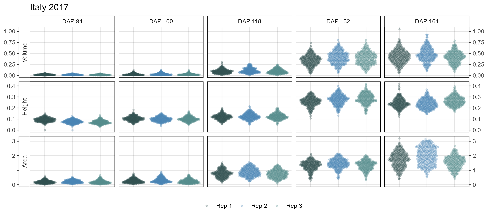
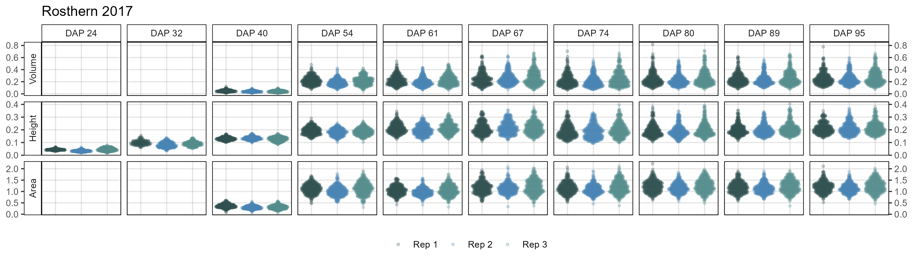
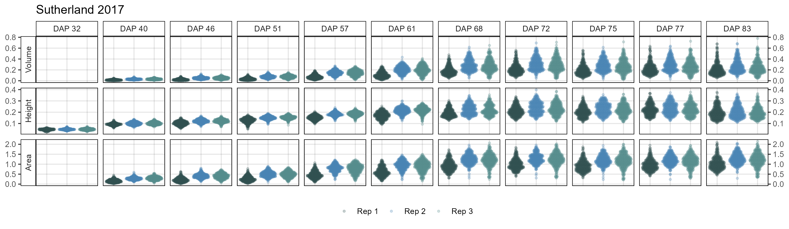
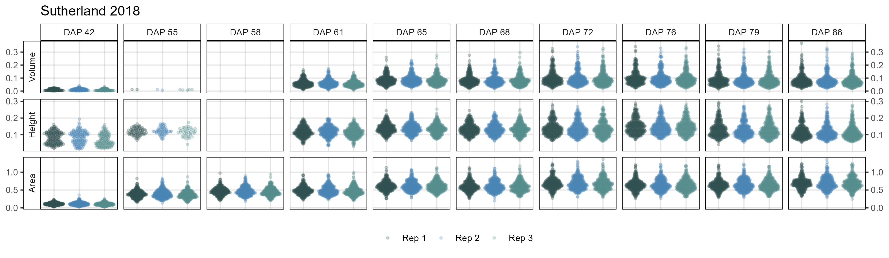
ggDroneSummary <- function(xx, myTitle, myDAPs = NULL, myTraits, myTraitNames) {
# Prep data
if(is.null(myDAPs)) { myDAPs <- unique(xx$DAP)[order(unique(xx$DAP))] }
xx <- xx %>% filter(Trait %in% myTraits, DAP %in% myDAPs) %>%
mutate(Trait = plyr::mapvalues(Trait, myTraits, myTraitNames),
Trait = factor(Trait, levels = myTraitNames),
Group = factor(paste("Rep", Rep),
levels = c("Rep 1", "Rep 2", "Rep 3", "Outliers")),
DAP = paste("DAP", DAP),
DAP = factor(DAP, levels = paste("DAP", myDAPs)))
#yy <- xx %>% filter(is.na(Value_f)) %>%
# mutate(Value_f = Value,
# Group = "Outliers",
# Group = factor(Group, levels = c("Rep 1", "Rep 2", "Rep 3", "Outliers")))
#xx <- bind_rows(xx, yy) %>%
# mutate(Trait = factor(Trait, levels = myTraits))
xx <- xx %>% filter(!is.na(Value_f))
# Plot
ggplot(xx, aes(x = Rep, color = Group, pch = Group)) +
geom_quasirandom(aes(y = Value_f), alpha = 0.25) +
facet_grid(Trait ~ DAP, scales = "free_y", switch = "y") +
scale_color_manual(name = NULL,
values = c("darkslategray","steelblue","darkslategray4","black")) +
scale_shape_manual(name = NULL, values = c(20,20,20,10)) +
scale_y_continuous(sec.axis = sec_axis(~ .)) +
theme_AGL +
theme(legend.position = "bottom",
axis.text.x = element_blank(),
axis.ticks.x = element_blank()) +
labs(title = myTitle, y = NULL, x = NULL)
}
# Italy 2017
xx <- it17_d %>%
mutate(DAP = plyr::mapvalues(DAP, c(93, 101, 119, 133, 163),
c(94, 100, 118, 132, 164)))
mp <- ggDroneSummary(xx = xx, myTitle = "Italy 2017",
myDAPs = c(94,100,118,132,164),
myTraits = c("crop_volume_m3_excess.green.based",
"mean_crop_height_m_excess.green.based",
"crop_area_m2_excess.green.based"),
myTraitNames = c("Volume", "Height", "Area"))
ggsave("Additional/GrowthCurves/01_ggDroneTrait_It17.png", mp, width = 10, height = 4.5)
# Rosthern 2017
mp <- ggDroneSummary(xx = ro17_d, myTitle = "Rosthern 2017",
myDAPs = c(24,32,40,54,61,67,74,80,89,95),
myTraits = c("crop_volume_m3_blue.ndvi.based",
"mean_crop_height_m_blue.ndvi.based",
"crop_area_m2_blue.ndvi.based"),
myTraitNames = c("Volume", "Height", "Area"))
ggsave("Additional/GrowthCurves/01_ggDroneTrait_Ro17.png", mp, width = 12, height = 3.5)
# Sutherland 2017
mp <- ggDroneSummary(xx = su17_d, myTitle = "Sutherland 2017",
myDAPs = c(32,40,46,51,57,61,68,72,75,77,83),
myTraits = c("crop_volume_m3_blue.ndvi.based",
"mean_crop_height_m_blue.ndvi.based",
"crop_area_m2_blue.ndvi.based"),
myTraitNames = c("Volume", "Height", "Area"))
ggsave("Additional/GrowthCurves/01_ggDroneTrait_Su17.png", mp, width = 12, height = 3.5)
# Sutherland 2018
mp <- ggDroneSummary(xx = su18_d, myTitle = "Sutherland 2018",
myDAPs = c(42,55,58,61,65,68,72,76,79,86),
myTraits = c("crop_volume_m3_excess.green.based",
"mean_crop_height_m_excess.green.based",
"crop_area_m2_excess.green.based"),
myTraitNames = c("Volume", "Height", "Area"))
ggsave("Additional/GrowthCurves/01_ggDroneTrait_Su18.png", mp, width = 12, height = 3.5)Check Data
ggDroneCheck <- function(xd = it17_d, xf = it17_f,
myTitle = NULL,
myFilename = "DataCheck/RawDrone_Italy_2017.pdf",
xt = c("crop_volume_m3_excess.green.based",
"crop_area_m2_excess.green.based",
"mean_ndyi",
"mean_crop_height_m_excess.green.based",
"median_crop_height_m_excess.green.based",
"max_crop_height_m_excess.green.based") ) {
myColors <- c("darkgreen", "darkorange", "darkred")
xd <- xd %>% arrange(Entry)
pdf(myFilename, width = 16, height = 10)
#i<-1
for(i in unique(xd$Entry)) {
xdi <- xd %>% filter(Entry == i)
xfi <- xf %>% filter(Entry == i)
j <- unique(xdi$Name)
#
ggPlotDrone <- function(xti=xt[1]) {
yMax <- max(xd %>% filter(Trait==xti) %>% pull(Value_f), na.rm = T)
xMax <- max(c(xd$DAP, xf %>% filter(Trait=="DTM") %>% pull(Value)), na.rm = T)
xdtf <- xfi %>% filter(Trait == "DTF")
xdtm <- xfi %>% filter(Trait == "DTM")
xd <- xdi %>% filter(Trait == xti)
xd2 <- xd %>% filter(!is.na(Value_f))
ggplot(xd, aes(x = DAP, y = Value)) +
geom_line(alpha = 0.2, color = "black", size = 1) +
geom_line(data = xd2, aes(y = Value_f, color = as.factor(Rep)),
size = 1.5, alpha = 0.7) +
geom_point(aes(y = Value_f), color = "red", size = 0.5) +
geom_point(aes(shape = Sensor)) +
geom_vline(data = xdtf, aes(xintercept = Value),
alpha = 0.5, color = "darkgreen") +
geom_vline(data = xdtm, aes(xintercept = Value),
alpha = 0.5, color = "darkorange", lty = 2) +
facet_grid(. ~ paste(Rep, "-", Plot), scales = "free_y") +
scale_color_manual(values = myColors) +
theme_AGL +
theme(legend.position = "none") +
coord_cartesian(ylim = c(0,yMax), xlim = c(0,xMax)) +
labs(y = xti)
}
#
mp1 <- ggPlotDrone(xti = xt[1])
mp2 <- ggPlotDrone(xti = xt[2])
mp3 <- ggPlotDrone(xti = xt[3])
#
mp <- ggarrange(mp1, mp2, mp3, ncol = 1, nrow = 3) %>%
annotate_figure(top = text_grob(paste(myTitle, "Entry", i, j)))
print(mp)
}
dev.off()
}Italy 2017
https://github.com/derekmichaelwright/AGILE_LDP_UAV/Additional/GrowthCurves/02_ggDroneCheck_It17.pdf
ggDroneCheck(xd = it17_d, xf = it17_f, myTitle = "Italy 2017",
myFilename = "Additional/GrowthCurves/02_ggDroneCheck_It17.pdf",
xt = c("crop_volume_m3_excess.green.based",
"mean_crop_height_m_excess.green.based",
"crop_area_m2_excess.green.based") )Rosthern 2017
https://github.com/derekmichaelwright/AGILE_LDP_UAV/Additional/GrowthCurves/02_ggDroneCheck_Ro17.pdf
ggDroneCheck(xd = ro17_d, xf = ro17_f, myTitle = "Rosthern 2017",
myFilename = "Additional/GrowthCurves/02_ggDroneCheck_Ro17.pdf",
xt = c("crop_volume_m3_blue.ndvi.based",
"mean_crop_height_m_blue.ndvi.based",
"crop_area_m2_blue.ndvi.based") )Sutherland 2017
https://github.com/derekmichaelwright/AGILE_LDP_UAV/Additional/GrowthCurves/02_ggDroneCheck_Su17.pdf
ggDroneCheck(xd = su17_d, xf = su17_f, myTitle = "Sutherland 2017",
myFilename = "Additional/GrowthCurves/02_ggDroneCheck_Su17.pdf",
xt = c("crop_volume_m3_blue.ndvi.based",
"mean_crop_height_m_blue.ndvi.based",
"crop_area_m2_blue.ndvi.based") )Sutherland 2018
https://github.com/derekmichaelwright/AGILE_LDP_UAV/Additional/GrowthCurves/02_ggDroneCheck_Su18.pdf
ggDroneCheck(xd = su18_d, xf = su18_f, myTitle = "Sutherland 2018",
myFilename = "Additional/GrowthCurves/02_ggDroneCheck_Su18.pdf",
xt = c("crop_volume_m3_excess.green.based",
"mean_crop_height_m_excess.green.based",
"crop_area_m2_excess.green.based") )Model Growth Curves
myGrowthCurve <- function(xd, xf, myTrait, myFilename,
myFolder = "Additional/GrowthCurves/",
myOrder = "Entries") {
#
xd <- xd %>% filter(Trait == myTrait)
xm <- xf %>% select(Plot, Rep, Entry, Name, Expt, Planting.Date) %>%
filter(!duplicated(Plot))
# i<- unique(xd$Plot)[1]
xg <- NULL # Growth curve coefficients
xp <- NULL # Predicted Values
for(i in unique(xd$Plot)) {
xgi <- NULL
xdi <- xd %>% arrange(DAP) %>%
filter(Plot == i, !is.na(Value_f))
#
if(nrow(xdi) > 2) {
fit <- SummarizeGrowth(data_t = xdi$DAP,
data_n = xdi$Value_f)
#
suppressMessages( xgi <- bind_rows(xgi, data.frame(t(c(i, unlist(fit$vals))))) )
#
xgi <- xgi %>% rename(y0=n0, y0_se=n0_se, y0_p=n0_p, x_mid=t_mid)
#if(xgi$k=="0") { xgi <- }
for(k in 1:(ncol(xgi)-1)) { xgi[,k] <- as.numeric(xgi[,k]) }
xgi <- xgi %>% mutate(y_mid = k/(1 + ((k - y0)/y0) * exp(-r * x_mid)),
b = -((r * x_mid) - y_mid)#,
#t.min = -b / r,
#t.max = (k - b) / r
)
#
myDays <- min(xd$DAP):max(xd$DAP)
xpi <- data.frame(Plot = i, DAP = myDays,
Predicted.Values = xgi$k /
(1 + ((xgi$k - xgi$y0)/xgi$y0) * exp(-xgi$r * myDays)))
xp <- bind_rows(xp, xpi)
#
gdays <- xpi %>% filter(DAP > (xgi$x_mid - 3), DAP < (xgi$x_mid + 3))
if(nrow(gdays)>0) {
myLM <- lm(Predicted.Values ~ DAP, gdays)
xgi <- xgi %>% mutate(g.b = myLM[[1]][1],
g.r = myLM[[1]][2],
#x.min = -g.b / g.r,
#x.max = (k - g.b) / g.r,
#x.d = x.max - x_mid
)
}
#
xpi_max <- xpi %>% filter(Predicted.Values >= xgi$k*0.95) %>%
arrange(Predicted.Values) %>% slice(1)
if(nrow(xpi_max)==0) {
xpi_max <- xpi %>%
filter(Predicted.Values >= xgi$k*0.94) %>%
arrange(Predicted.Values) %>% slice(1)
}
if(nrow(xpi_max)==0) {
xpi_max <- xpi %>%
filter(Predicted.Values >= xgi$k*0.90) %>%
arrange(Predicted.Values) %>% slice(1)
}
xpi_min <- xpi %>%
filter(Predicted.Values >= xgi$k*0.05) %>%
arrange(Predicted.Values) %>% slice(1)
xgi$x.max <- ifelse(is.null(nrow(xpi_max)), max(xpi$DAP), xpi_max$DAP)
xgi$x.min <- xpi_min$DAP
xgi$x.d <- xgi$x.max - xgi$x_mid
xg <- bind_rows(xg, xgi)
}
}
#
xg[xg=="0"] <- NA
xg <- xg %>% rename(Plot=1) %>%
mutate(Plot = as.integer(Plot)) %>%
left_join(xm, by = "Plot") %>%
select(Plot, Rep, Entry, Name, Expt, Planting.Date,
r, b, g.r, g.b, k, x.min, x.mid=x_mid, x.max,
x.d, x.gen=t_gen, auc.l=auc_l, auc.e=auc_e, y0, sigma,
r.se=r_se, r.p=r_p, k.se=k_se, k.p=k_p, y0.se=y0_se, y0.p=y0_p, df, note)
#
xp <- xp %>%
left_join(xm, by = "Plot") %>%
select(Plot, Rep, Entry, Name, Expt, Planting.Date, DAP, Predicted.Values)
#
yMax <- max(xd$Value_f, na.rm = T)
xMax <- max(xd$DAP, na.rm = T)
xpm <- NULL
#
if(myOrder == "Entries") { myOrders <- 1:324 }
if(myOrder == "DTF") { myOrders <- xg %>% arrange(k) %>% pull(Entries) %>% unique() }
# i<-315
pdf(paste0(myFolder, myFilename, ".pdf"), width = 8, height = 4)
for(i in myOrders) {
xdi <- xd %>% filter(Entry == i, !is.na(Value_f))
xfi <- xf %>% filter(Entry == i)
xgi <- xg %>% filter(Entry == i)
xpi <- xp %>% filter(Entry == i)
#
xpmi <- xpi %>% group_by(Entry, Name, DAP) %>%
summarise(Predicted.Values = mean(Predicted.Values, na.rm = T))
xpm <- bind_rows(xpm, xpmi)
#
xdtf <- xfi %>% filter(Trait == "DTF")
xdtm <- xfi %>% filter(Trait == "DTM")
xdtf2 <- xdtf %>% group_by(Entry) %>% summarise(Value = mean(Value, na.rm =T))
xdtm2 <- xdtm %>% group_by(Entry) %>% summarise(Value = mean(Value, na.rm =T))
myDays <- min(xdi$DAP):max(xdi$DAP)
#
myTitle <- unique(paste(stringr::str_pad(xdi$Entry, 3, pad = "0"), "|", xdi$Name))
#
mp1 <- ggplot(xdi, aes(x = DAP)) +
geom_vline(data = xdtf, aes(xintercept = Value), color = "darkgreen", alpha = 0.5) +
geom_vline(data = xdtm, aes(xintercept = Value), color = "darkorange", alpha = 0.5) +
geom_point(aes(y = Value_f), color = "red", alpha = 0.7) +
geom_point(aes(y = Value), alpha = 0.5) +
geom_line(data = xpi, aes(y = Predicted.Values), alpha = 0.8) +
facet_grid(. ~ paste(Rep, Plot, sep = "-")) +
coord_cartesian(ylim = c(0,yMax), xlim = c(0,xMax)) +
theme_AGL +
labs(title = myTitle, y = myTrait)
mp2 <- ggplot(xpi, aes(x = DAP, y = Predicted.Values)) +
geom_vline(data = xdtf2, aes(xintercept = Value), color = "darkgreen", alpha = 0.5) +
geom_vline(data = xdtm2, aes(xintercept = Value), color = "darkorange", alpha = 0.5) +
geom_line(alpha = 0.3, aes(group = Plot)) +
geom_line(data = xpmi, color = "red") +
facet_grid(. ~ paste("Entry",Entry)) +
coord_cartesian(ylim = c(0,yMax), xlim = c(0,xMax)) +
theme_AGL +
labs(title = "")
mp <- ggarrange(mp1, mp2, widths = c(1,0.5))
print(mp)
}
dev.off()
#
list(xd, # input data
xg, # Growth curve coefficients
xp, # Predicted Values
xpm) #
}
ggGrowthCurve <- function(xpm, myTitle = NULL,
myEntries = c(9, 35, 73, 94, 113),
myColors = c("darkgreen", "darkgoldenrod3", "darkred",
"steelblue4", "darkslategray") ) {
#
if(sum(colnames(xpm)=="Expt")==0) { xpm <- xpm %>% mutate(Expt = myTitle) }
xpe <- xpm %>% filter(Entry %in% myEntries) %>%
mutate(Entry = factor(Entry, levels = myEntries))
mp <- ggplot(xpm, aes(x = DAP, y = Predicted.Values, group = Entry, key1 = Name)) +
geom_line(alpha = 0.05) +
geom_line(data = xpe, size = 2, aes(color = paste0(Name," (",Entry,")"))) +
facet_grid(. ~ Expt, scales = "free_x", space = "free_x") +
scale_color_manual(name = NULL, values = myColors) +
theme_AGL +
labs(x = "Days After Planting")
mp
}Italy 2017
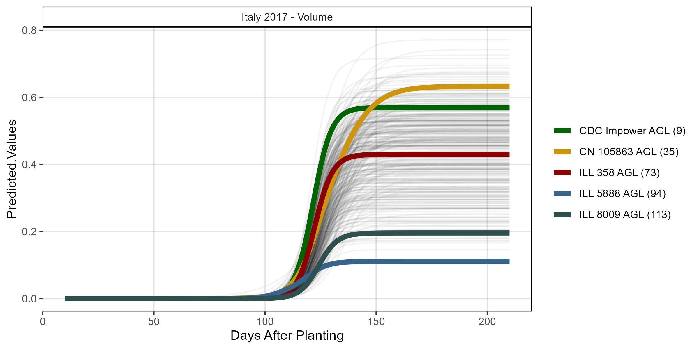
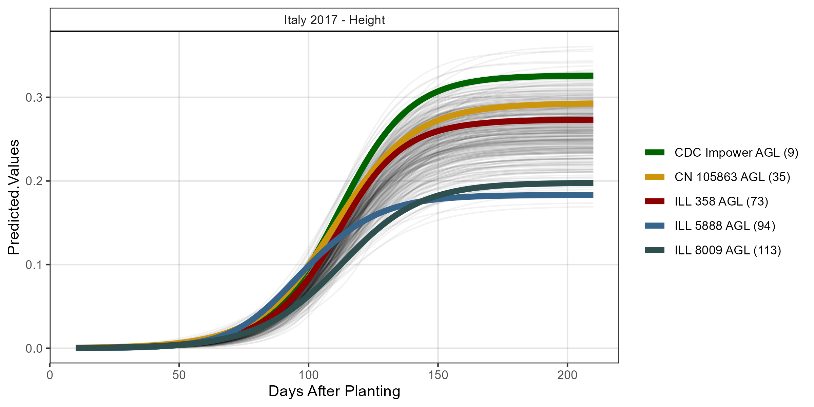
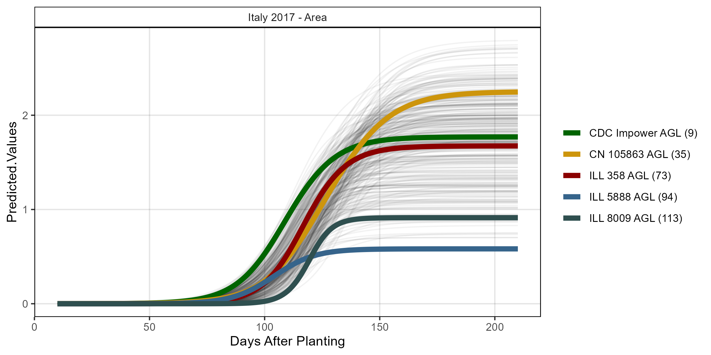
it17_gc.v <- myGrowthCurve(xd = it17_d, xf = it17_f,
myFilename = "03_myGrowthCurve_It17_volume",
myTrait = "crop_volume_m3_excess.green.based")
mp <- ggGrowthCurve(xpm = it17_gc.v[[4]], myTitle = "Italy 2017 - Volume")
ggsave("Additional/GrowthCurves/04_ggGrowthCurve_It17_volume.png", mp, width = 8, height = 4)
mp <- ggplotly(mp)
saveWidget(mp, file="Additional/GrowthCurves/05_ggGrowthCurve_It17_volume.html")
#
it17_gc.h <- myGrowthCurve(xd = it17_d, xf = it17_f,
myFilename = "03_myGrowthCurve_It17_height",
myTrait = "mean_crop_height_m_excess.green.based")
mp <- ggGrowthCurve(xpm = it17_gc.h[[4]], myTitle = "Italy 2017 - Height")
ggsave("Additional/GrowthCurves/04_ggGrowthCurve_It17_height.png", mp, width = 8, height = 4)
mp <- ggplotly(mp)
htmlwidgets::saveWidget(mp, file="Additional/GrowthCurves/05_ggGrowthCurve_It17_height.html")
#
it17_gc.a <- myGrowthCurve(xd = it17_d, xf = it17_f,
myFilename = "03_myGrowthCurve_It17_area",
myTrait = "crop_area_m2_excess.green.based")
mp <- ggGrowthCurve(xpm = it17_gc.a[[4]], myTitle = "Italy 2017 - Area")
ggsave("Additional/GrowthCurves/04_ggGrowthCurve_It17_area.png", mp, width = 8, height = 4)
mp <- ggplotly(mp)
saveWidget(mp, file="Additional/GrowthCurves/05_ggGrowthCurve_It17_area.html")Rosthern 2017
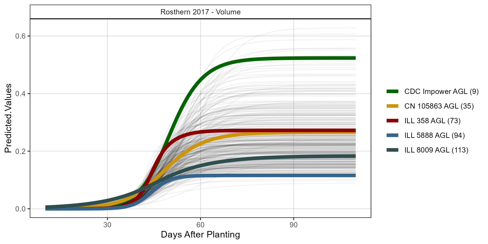
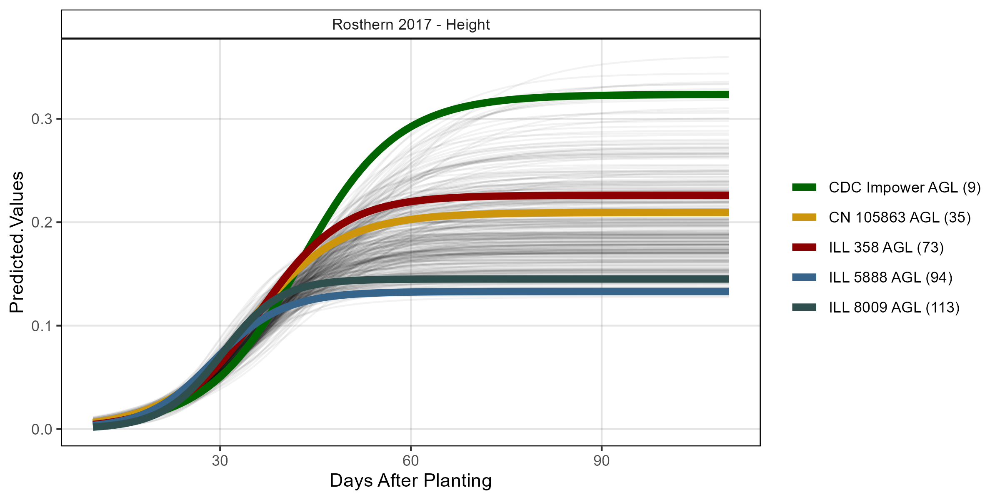
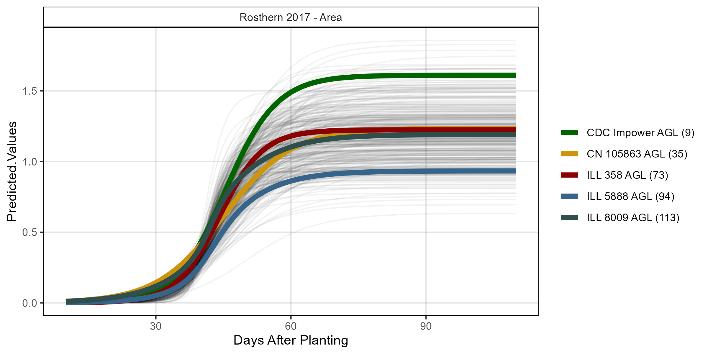
ro17_gc.v <- myGrowthCurve(xd = ro17_d, xf = ro17_f,
myFilename = "03_myGrowthCurve_Ro17_volume",
myTrait = "crop_volume_m3_blue.ndvi.based")
mp <- ggGrowthCurve(xpm = ro17_gc.v[[4]], myTitle = "Rosthern 2017 - Volume")
ggsave("Additional/GrowthCurves/04_ggGrowthCurve_Ro17_volume.png", mp, width = 8, height = 4)
mp <- ggplotly(mp)
htmlwidgets::saveWidget(mp, file="Additional/GrowthCurves/05_ggGrowthCurve_Ro17_volume.html")
#
ro17_gc.h <- myGrowthCurve(xd = ro17_d, xf = ro17_f,
myFilename = "03_myGrowthCurve_Ro17_height",
myTrait = "mean_crop_height_m_blue.ndvi.based")
mp <- ggGrowthCurve(xpm = ro17_gc.h[[4]], myTitle = "Rosthern 2017 - Height")
ggsave("Additional/GrowthCurves/04_ggGrowthCurve_Ro17_height.png", mp, width = 8, height = 4)
mp <- ggplotly(mp)
htmlwidgets::saveWidget(mp, file="Additional/GrowthCurves/05_ggGrowthCurve_Ro17_height.html")
#
ro17_gc.a <- myGrowthCurve(xd = ro17_d, xf = ro17_f,
myFilename = "03_myGrowthCurve_Ro17_area",
myTrait = "crop_area_m2_blue.ndvi.based")
mp <- ggGrowthCurve(xpm = ro17_gc.a[[4]], myTitle = "Rosthern 2017 - Area")
ggsave("Additional/GrowthCurves/04_ggGrowthCurve_Ro17_area.png", mp, width = 8, height = 4)
mp <- ggplotly(mp)
htmlwidgets::saveWidget(mp, file="Additional/GrowthCurves/05_ggGrowthCurve_Ro17_area.html")Sutherland 2017
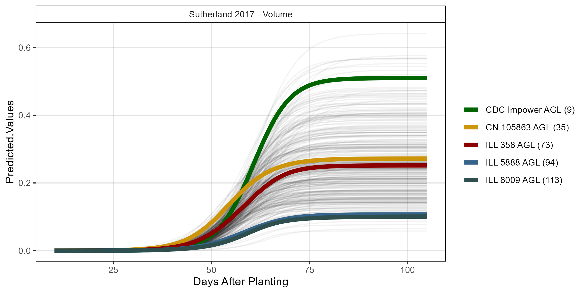
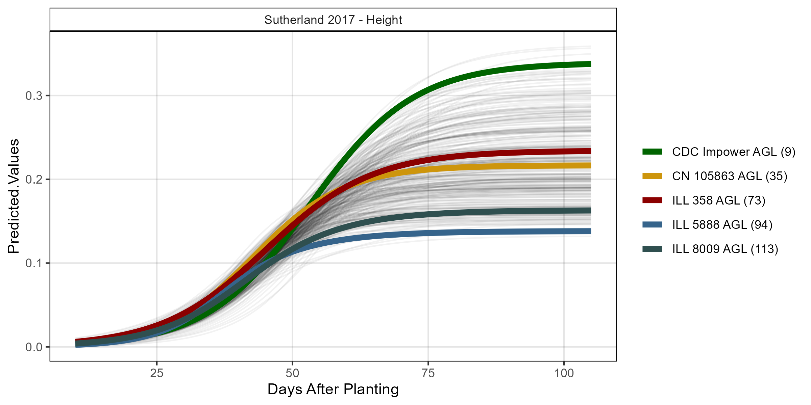
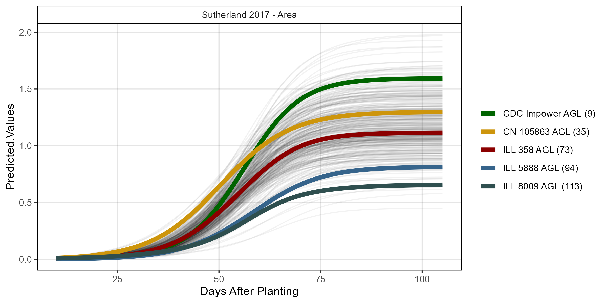
su17_gc.v <- myGrowthCurve(xd = su17_d %>% filter(Plot!=5604),
xf = su17_f,
myFilename = "03_myGrowthCurve_Su17_volume",
myTrait = "crop_volume_m3_blue.ndvi.based")
mp <- ggGrowthCurve(xpm = su17_gc.v[[4]], myTitle = "Sutherland 2017 - Volume")
ggsave("Additional/GrowthCurves/04_ggGrowthCurve_Su17_volume.png", mp, width = 8, height = 4)
mp <- ggplotly(mp)
htmlwidgets::saveWidget(mp, file="Additional/GrowthCurves/05_ggGrowthCurve_Su17_volume.html")
#
su17_gc.h <- myGrowthCurve(xd = su17_d, xf = su17_f,
myFilename = "03_myGrowthCurve_Su17_height",
myTrait = "mean_crop_height_m_blue.ndvi.based")
mp <- ggGrowthCurve(xpm = su17_gc.h[[4]], myTitle = "Sutherland 2017 - Height")
ggsave("Additional/GrowthCurves/04_ggGrowthCurve_Su17_height.png", mp, width = 8, height = 4)
mp <- ggplotly(mp)
htmlwidgets::saveWidget(mp, file="Additional/GrowthCurves/05_ggGrowthCurve_Su17_height.html")
#
su17_gc.a <- myGrowthCurve(xd = su17_d, xf = su17_f,
myFilename = "03_myGrowthCurve_Su17_area",
myTrait = "crop_area_m2_blue.ndvi.based")
mp <- ggGrowthCurve(xpm = su17_gc.a[[4]], myTitle = "Sutherland 2017 - Area")
ggsave("Additional/GrowthCurves/04_ggGrowthCurve_Su17_area.png", mp, width = 8, height = 4)
mp <- ggplotly(mp)
htmlwidgets::saveWidget(mp, file="Additional/GrowthCurves/05_ggGrowthCurve_Su17_area.html")Sutherland 2018
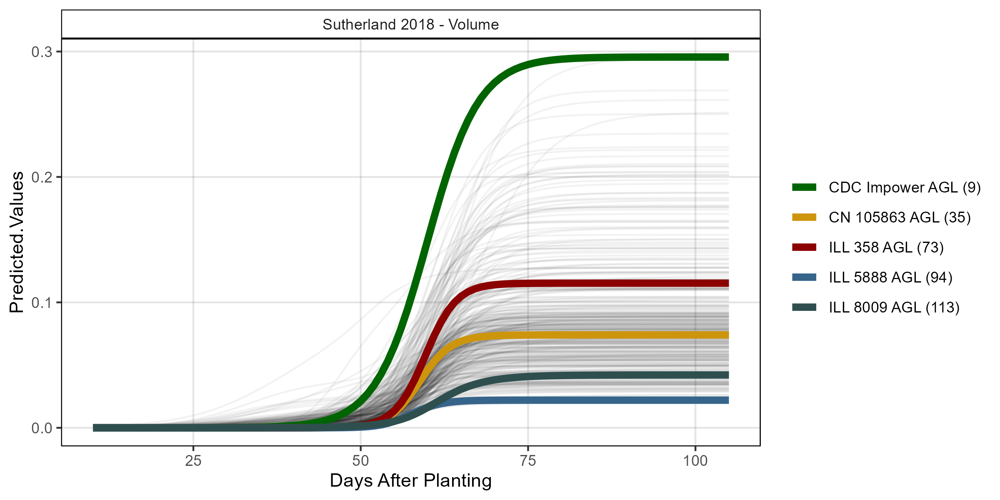
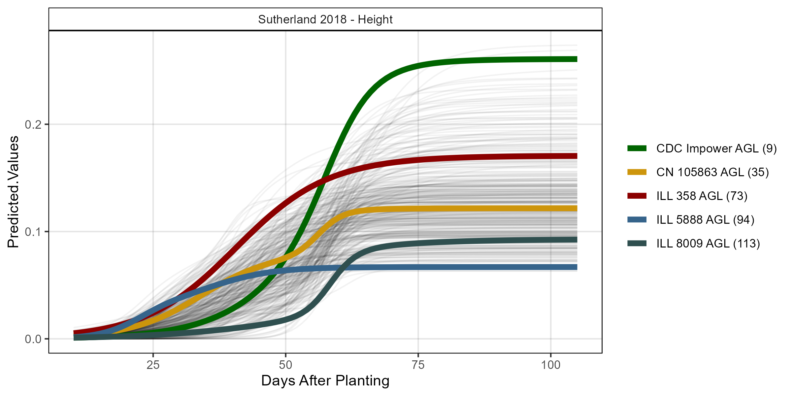
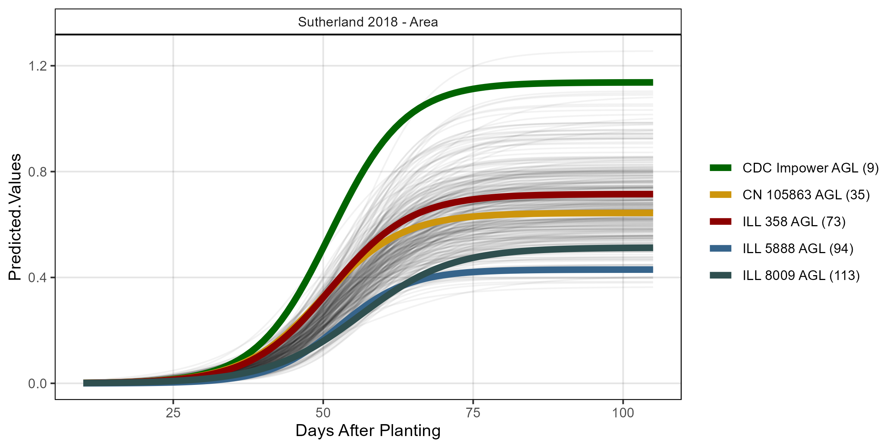
su18_gc.v <- myGrowthCurve(xd = su18_d, xf = su18_f,
myFilename = "03_myGrowthCurve_Su18_volume",
myTrait = "crop_volume_m3_excess.green.based")
mp <- ggGrowthCurve(xpm = su18_gc.v[[4]], myTitle = "Sutherland 2018 - Volume")
ggsave("Additional/GrowthCurves/04_ggGrowthCurve_Su18_volume.png", mp, width = 8, height = 4)
mp <- ggplotly(mp)
htmlwidgets::saveWidget(mp, file="Additional/GrowthCurves/05_ggGrowthCurve_Su18_volume.html")
#
su18_gc.h <- myGrowthCurve(xd = su18_d, xf = su18_f,
myFilename = "03_myGrowthCurve_Su18_height",
myTrait = "mean_crop_height_m_excess.green.based")
mp <- ggGrowthCurve(xpm = su18_gc.h[[4]], myTitle = "Sutherland 2018 - Height")
ggsave("Additional/GrowthCurves/04_ggGrowthCurve_Su18_height.png", mp, width = 8, height = 4)
mp <- ggplotly(mp)
htmlwidgets::saveWidget(mp, file="Additional/GrowthCurves/05_ggGrowthCurve_Su18_height.html")
#
su18_gc.a <- myGrowthCurve(xd = su18_d, xf = su18_f,
myFilename = "03_myGrowthCurve_Su18_area",
myTrait = "crop_area_m2_excess.green.based")
mp <- ggGrowthCurve(xpm = su18_gc.a[[4]], myTitle = "Sutherland 2018 - Area")
ggsave("Additional/GrowthCurves/04_ggGrowthCurve_Su18_area.png", mp, width = 8, height = 4)
mp <- ggplotly(mp)
htmlwidgets::saveWidget(mp, file="Additional/GrowthCurves/05_ggGrowthCurve_Su18_area.html")Prepare Figures
# Prep work
myExpts1 <- c("Metaponto, Italy 2017", "Rosthern, Canada 2017",
"Sutherland, Canada 2017", "Sutherland, Canada 2018")
myExpts2 <- c("It17", "Ro17", "Su17", "Su18")
myColors_Expt <- c("darkred", "darkgreen", "darkblue", "steelblue")
myColors_Cluster <- c("red4", "darkorange3", "blue2", "deeppink3",
"steelblue", "darkorchid4", "darkslategray", "chartreuse4")myColors_all <- c("darkgreen", "darkgoldenrod3", "darkred", "steelblue4",
"darkslategray", "maroon4", "purple4", "darkblue", "cyan4",
"burlywood4", "green4", "darkgoldenrod2",
"red3", "steelblue3", "darkslategray4", "maroon3",
"purple3", "blue2", "cyan3", "burlywood3", "chartreuse4",
"darkgoldenrod4", "firebrick", "cornflowerblue",
"deepskyblue4", "maroon", "purple2", "dodgerblue",
"palevioletred3", "wheat3", "darkseagreen4", "darkorange4", "tomato4",
"slategray4", "aquamarine4", "deeppink4", "magenta4", "dodgerblue4",
"violetred4", "tan4", "darkseagreen3", "darkorange3",
"tomato3", "slategray3", "aquamarine3", "deeppink3", "magenta3",
"dodgerblue3", "violetred3", "tan3")Figure 01 - EnvData
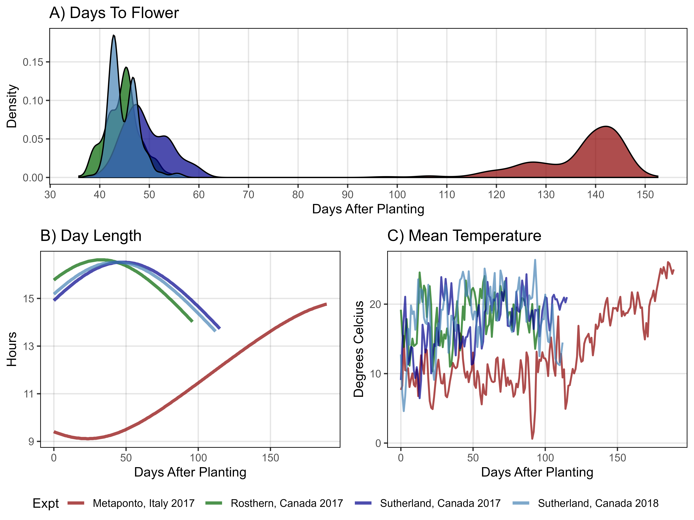
# Prep data
xE <- read.csv("https://raw.githubusercontent.com/derekmichaelwright/AGILE_LDP_Phenology/master/data/data_env.csv") %>%
rename(`Days After Planting`=DaysAfterPlanting) %>%
filter(Expt %in% myExpts1) %>%
select(Expt, `Days After Planting`, DayLength, Temp_mean) %>%
gather(Trait, Value, DayLength, Temp_mean) %>%
mutate(Unit = ifelse(Trait == "DayLength", "Hours", "Degrees Celcius"),
Trait = plyr::mapvalues(Trait, c("DayLength", "Temp_mean"),
c("DayLength", "Mean Temperature")) )
yy <- bind_rows(it17_f %>% filter(Trait == "DTF"),
ro17_f %>% filter(Trait == "DTF"),
su17_f %>% filter(Trait == "DTF"),
su18_f %>% filter(Trait == "DTF") ) %>%
mutate(Expt = plyr::mapvalues(Expt, myExpts2, myExpts1)) %>%
group_by(Expt, Name) %>%
summarise(Value = mean(Value, na.rm = T))
# Plot
mp1 <- ggplot(yy, aes(x = Value, fill = Expt)) +
geom_density(alpha = 0.7) +
scale_fill_manual(name = NULL, values = myColors_Expt) +
scale_x_continuous(breaks = seq(30, 160, by = 10)) +
theme_AGL +
theme(legend.position = "none") +
labs(title = "A) Days to Flower",
x = "Days After Planting", y = "Density")
mp2 <- ggplot(xE %>% filter(Trait == "DayLength"),
aes(x = `Days After Planting`, y = Value, color = Expt)) +
geom_line(size = 1.25, alpha = 0.7) +
scale_color_manual(name = NULL, values = myColors_Expt) +
theme_AGL +
theme(legend.position = "bottom") +
labs(title = "B) Day Length",
y = "Hours", x = "Days After Planting")
mp3 <- ggplot(xE %>% filter(Trait == "Mean Temperature"),
aes(x = `Days After Planting`, y = Value, color = Expt)) +
geom_line(size = 0.75, alpha = 0.7) +
scale_color_manual(name = NULL, values = myColors_Expt) +
theme_AGL +
theme(legend.position = "bottom") +
labs(title = "C) Mean Temperature",
y = "Degrees Celcius", x = "Days After Planting")
mp <- ggarrange(mp1, ggarrange(mp2, mp3, ncol = 2, nrow = 1,
common.legend = T, legend = "bottom"),
ncol = 1, nrow = 2, heights = c(0.75,1) )
ggsave("Figure_01.png", mp, width = 8, height = 6, dpi = 600, bg = "white")Figure 02 - Orthomasaic
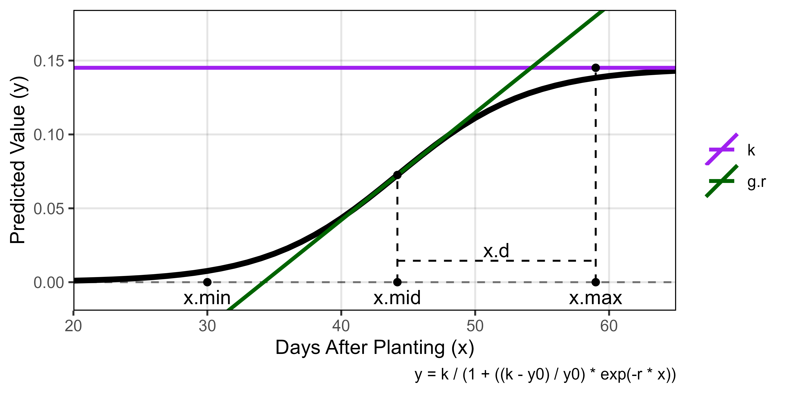
Figure 03 - Growth Coefs
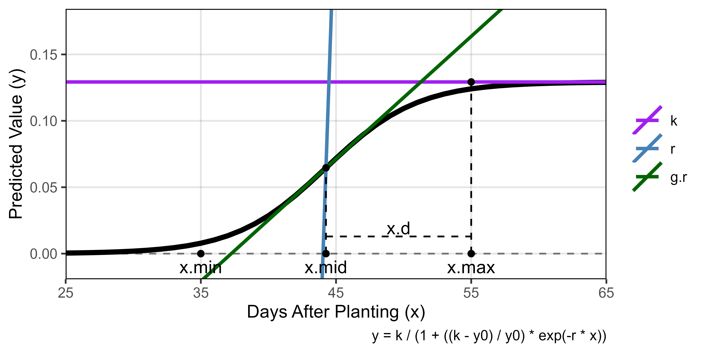
# Create plotting function
ggGrowthCoefs <- function(xd, xf, myPlot, myYmax = NULL,
minDAP = NULL, maxDAP = NULL,
myTitle = NULL, mySubtitle = F) {
#
if(is.null(minDAP)) { minDAP <- min(xd[[3]]$DAP) }
if(is.null(maxDAP)) { maxDAP <- max(xd[[3]]$DAP) }
if(is.null(myYmax)) { myYmax <- max(xd[[2]]$k) }
#
x1 <- xd[[2]] %>% filter(Plot == myPlot)
x2 <- xd[[3]] %>% filter(Plot == myPlot)
xdtf <- xf %>% filter(Trait == "DTF", Plot == myPlot)
xdtm <- xf %>% filter(Trait == "DTM", Plot == myPlot)
#
if(mySubtitle == T) {
mySubtitle <- paste("Plot", x1$Plot, "| Entry", x1$Entry, "|", x1$Name)
} else { mySubtitle <- NULL }
#
mp <- ggplot(x1) +
#
geom_hline(yintercept = 0, lty = 2, alpha = 0.5) +
geom_line(data = x2, aes(x = DAP, y = Predicted.Values), size = 1.5) +
#
geom_hline(aes(yintercept = k, color = "k"), size = 1) +
geom_abline(aes(slope = r, intercept = b, color = "r"), size = 1) +
geom_abline(aes(slope = g.r, intercept = g.b, color = "g.r"), size = 1) +
geom_point(aes(x = x.mid, y = k/2)) +
#
geom_point(aes(x = x.min), y = 0) +
geom_text(aes(x = x.min), y = -0.01, label = "x.min") +
#
geom_segment(y = 0, aes(x = x.mid, xend = x.mid, yend = k/2), lty = 2) +
geom_point(y = 0, aes(x = x.mid)) +
geom_text(y = -0.01, aes(x = x.mid, label = "x.mid")) +
#
geom_segment(y = 0, aes(x = x.max, xend = x.max, yend = k), lty = 2) +
geom_point(aes(x = x.max, y = k)) +
geom_point(aes(x = x.max, y = 0)) +
geom_text(aes(x = x.max, y = -0.01), label = "x.max") +
#
geom_segment(aes(x = x.mid, xend = x.max, y = k/10, yend = k/10), lty = 2) +
geom_text(aes(x = x.max-((x.max-x.mid)/2), y = 1.5*k/10), label = "x.d") +
#
#geom_vline(data = xdtf, aes(xintercept = Value, color = "DTF")) +
#geom_vline(data = xdtm, aes(xintercept = Value, color = "DTM")) +
#geom_segment(x = minDAP, aes(y = k/2, xend = x.mid, yend = k/2), lty = 2, alpha = 0.5) +
#geom_point(x = minDAP, aes(y = k/2)) +
#geom_text_repel(x = minDAP, aes(y = k/2), label = "y.mid") +
#
theme_AGL +
scale_color_manual(name = NULL, breaks = c("k","r","g.r"),
values = c("purple","steelblue","darkgreen")) +
scale_x_continuous(limits = c(minDAP, maxDAP), expand = c(0,0)) +
ylim(c(-0.01,myYmax)) +
labs(title = myTitle, subtitle = mySubtitle,
y = "Predicted Value (y)", x = "Days After Planting (x)",
caption = "y = k / (1 + ((k - y0) / y0) * exp(-r * x))")
mp
}
#
mp <- ggGrowthCoefs(xd = ro17_gc.v, xf = ro17_f, myPlot = 6322,
myYmax = 0.175, minDAP = 25, maxDAP = 65)
ggsave("Figure_03.png", mp, width = 6, height = 3, dpi = 600)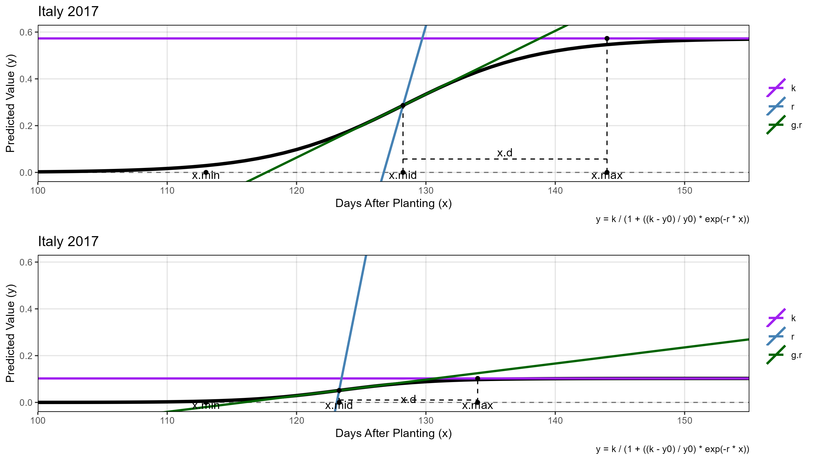
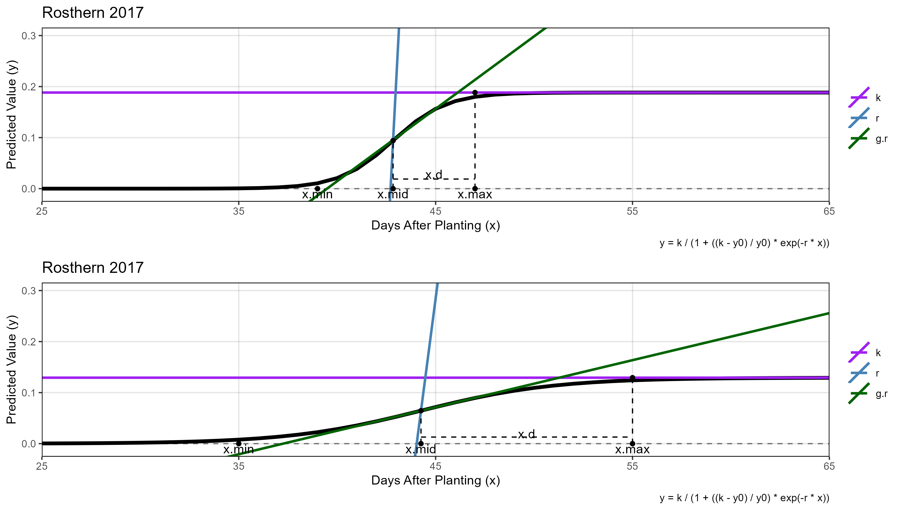
#
mp1 <- ggGrowthCoefs(xd = it17_gc.v, xf = it17_f, myPlot = 229, myTitle = "Italy 2017",
myYmax = 0.6, minDAP = 100, maxDAP = 155)
mp2 <- ggGrowthCoefs(xd = it17_gc.v, xf = it17_f, myPlot = 225, myTitle = "Italy 2017",
myYmax = 0.6, minDAP = 100, maxDAP = 155)
mp <- ggarrange(mp1, mp2, ncol = 1)
ggsave("Additional/GrowthCurves/06_It17_E155.png", mp, width = 6, height = 6)
#
mp1 <- ggGrowthCoefs(xd = ro17_gc.v, xf = ro17_f, myPlot = 6986, myTitle = "Rosthern 2017",
myYmax = 0.3, minDAP = 25, maxDAP = 65)
mp2 <- ggGrowthCoefs(xd = ro17_gc.v, xf = ro17_f, myPlot = 6322, myTitle = "Rosthern 2017",
myYmax = 0.3, minDAP = 25, maxDAP = 65)
mp <- ggarrange(mp1, mp2, ncol = 1)
ggsave("Additional/GrowthCurves/06_Ro17_E065.png", mp, width = 6, height = 6)Supplemental Figure 01 - Drone Data

ggDroneTrait <- function(xx, myTitle, myDAPs = NULL, myTraits,
myTraitNames = myTraits ) {
# Prep data
if(is.null(myDAPs)) { myDAPs <- unique(xx$DAP)[order(unique(xx$DAP))] }
xx <- xx %>% filter(Trait %in% myTraits, DAP %in% myDAPs) %>%
mutate(Trait = plyr::mapvalues(Trait, myTraits, myTraitNames),
Trait = factor(Trait, levels = myTraitNames),
Rep = factor(paste("Rep", Rep)),
DAP = paste("DAP", DAP),
DAP = factor(DAP, levels = paste("DAP", myDAPs)) ) %>%
filter(!is.na(Value_f), !is.na(Value))
# Plot
ggplot(xx, aes(x = Rep, color = Rep, pch = Rep)) +
geom_quasirandom(aes(y = Value_f), size = 0.3, alpha = 0.7) +
facet_grid(Trait ~ DAP, scales = "free_y", switch = "y") +
scale_color_manual(name = NULL,
values = c("darkslategray","slategray4","darkslategray4")) +
scale_shape_manual(name = NULL, values = c(16,15,18)) +
scale_y_continuous(sec.axis = sec_axis(~ .)) +
theme_AGL +
theme(strip.placement = "outside",
axis.text.x = element_blank(),
axis.ticks.x = element_blank()) +
guides(colour = guide_legend(override.aes = list(size = 3, alpha = 1))) +
labs(title = myTitle, y = NULL, x = NULL,
caption = paste("Number of data points =", nrow(xx)))
}
# Italy 2017
xx <- it17_d %>%
mutate(DAP = plyr::mapvalues(DAP, c(93, 101, 119, 133, 163),
c(94, 100, 118, 132, 164)))
mp1 <- ggDroneTrait(xx = xx, myTitle = "A) Metaponto, Italy 2017",
myDAPs = c(94,100,118,132,164),
myTraits = c("crop_volume_m3_excess.green.based",
"mean_crop_height_m_excess.green.based",
"crop_area_m2_excess.green.based"),
myTraitNames = c("Volume", "Height", "Area"))
# Rosthern 2017
mp2 <- ggDroneTrait(xx = ro17_d, myTitle = "B) Rosthern, Canada",
myDAPs = c(24,32,40,54,61,67,74,80,89,95),
myTraits = c("crop_volume_m3_blue.ndvi.based",
"mean_crop_height_m_blue.ndvi.based",
"crop_area_m2_blue.ndvi.based"),
myTraitNames = c("Volume", "Height", "Area"))
# Sutherland 2017
mp3 <- ggDroneTrait(xx = su17_d, myTitle = "C) Sutherland, Canada",
myDAPs = c(32,40,46,51,57,61,68,72,75,77,83),
myTraits = c("crop_volume_m3_blue.ndvi.based",
"mean_crop_height_m_blue.ndvi.based",
"crop_area_m2_blue.ndvi.based"),
myTraitNames = c("Volume", "Height", "Area"))
# Sutherland 2018
mp4 <- ggDroneTrait(xx = su18_d, myTitle = "D) Sutherland, Canada 2018",
myDAPs = c(42,55,58,61,65,68,72,76,79,86),
myTraits = c("crop_volume_m3_excess.green.based",
"mean_crop_height_m_excess.green.based",
"crop_area_m2_excess.green.based"),
myTraitNames = c("Volume", "Height", "Area"))
#
mp <- ggarrange(mp1, mp2, mp3, mp4, ncol = 1, nrow = 4,
common.legend = T, legend = "bottom")
ggsave("Supplemental_Figure_01.png", mp, width = 8, height = 11,
bg = "white", dpi = 600)Supplemental Figure 03 - PCA Inputs
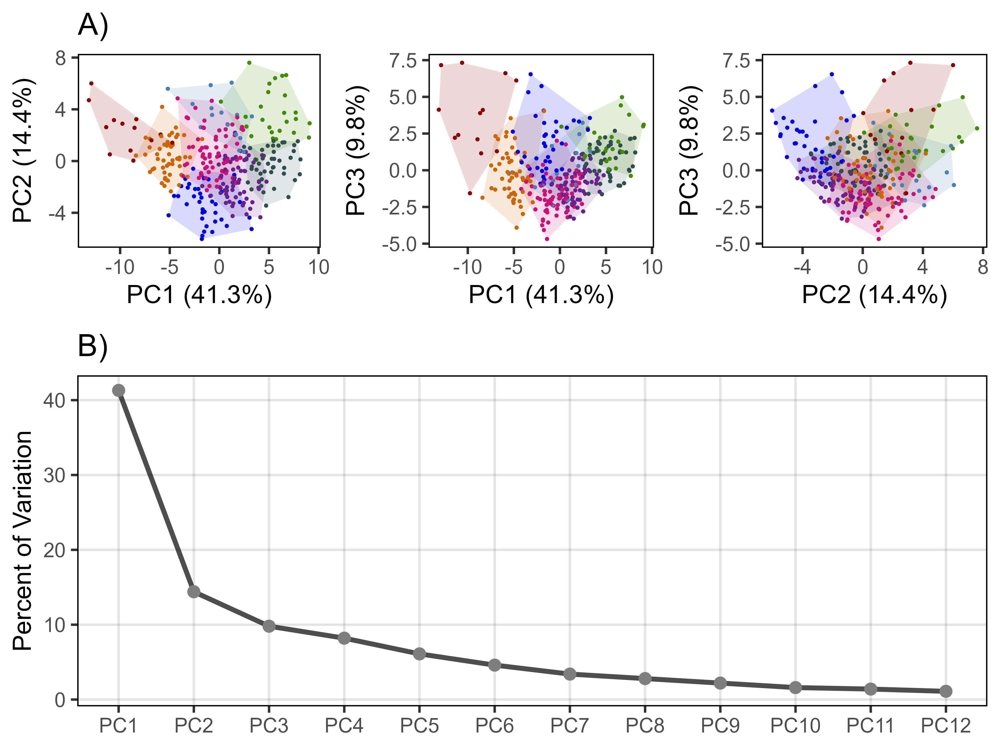
phenolGrowth <- function(xd, xf) {
xf1 <- xf %>% filter(Trait == "DTF") %>% select(Plot, DTF=Value)
xf2 <- xf %>% filter(Trait == "DTM") %>% select(Plot, DTM=Value)
xd %>%
left_join(xf1, by = "Plot") %>%
left_join(xf2, by = "Plot") %>%
mutate(xmid.DTF = x.mid - DTF,
xmax.DTF = x.max - DTF,
perc.DTF = 100 * (k / (1 + ((k - y0) / y0) * exp(-r * DTF))) / k,
at.DTF = k / (1 + ((k - y0) / y0) * exp(-r * DTF)),
at.DTM = k / (1 + ((k - y0) / y0) * exp(-r * DTM)),
xmid.DTM = x.mid - DTM,
xmax.DTM = x.max - DTM) %>%
select(Plot, xmid.DTF, xmax.DTF, perc.DTF,
xmid.DTM, xmax.DTM, at.DTF, at.DTM)
}
pca_gc <- function(xx, clustNum = 8) {
mypca <- PCA(xx, ncp = 10, graph = F)
mypcaH <- HCPC(mypca, nb.clust = clustNum, graph = F)
perc <- round(mypca[[1]][,2], 1)
x1 <- mypcaH[[1]] %>% rownames_to_column("Name")
x2 <- mypca[[3]]$coord %>% as.data.frame() %>% rownames_to_column("Name")
pca <- left_join(x1, x2, by = "Name") %>%
select(Name, Cluster=clust,
PC1=Dim.1, PC2=Dim.2, PC3=Dim.3, PC4=Dim.4, PC5=Dim.5, PC6=Dim.6)
pca
}# Prep data
myClustnum <- 8
#
x1 <- it17_gc.v[[2]] %>%
select(Plot, Entry, Name, k, x.mid, x.d, g.r) %>%
left_join(phenolGrowth(xd = it17_gc.v[[2]], xf = it17_f), by = "Plot") %>%
select(-xmid.DTF, -xmid.DTM, -xmax.DTM, -at.DTM)
colnames(x1)[4:ncol(x1)] <- paste0("It17_v.", colnames(x1)[4:ncol(x1)])
x2 <- it17_gc.a[[2]] %>%
select(Plot, Entry, Name, k, x.mid, x.d, g.r) %>%
left_join(phenolGrowth(xd = it17_gc.a[[2]], xf = it17_f), by = "Plot") %>%
select(-xmid.DTF, -xmid.DTM, -xmax.DTM, -at.DTM)
colnames(x2)[4:ncol(x2)] <- paste0("It17_a.", colnames(x2)[4:ncol(x2)])
x3 <- it17_gc.h[[2]] %>%
select(Plot, Entry, Name, k, x.mid, x.d, g.r) %>%
left_join(phenolGrowth(xd = it17_gc.h[[2]], xf = it17_f), by = "Plot") %>%
select(-xmid.DTF, -xmid.DTM, -xmax.DTM, -at.DTM)
colnames(x3)[4:ncol(x3)] <- paste0("It17_h.", colnames(x3)[4:ncol(x3)])
myX1 <- left_join(x2, x3, by = c("Plot","Entry","Name")) %>%
left_join(x1, by = c("Plot","Entry","Name")) %>%
select(-Plot) %>%
gather(Trait, Value, 3:ncol(.)) %>%
group_by(Entry, Name, Trait) %>%
summarise(Value = mean(Value, na.rm = T)) %>%
ungroup() %>%
spread(Trait, Value) %>% select(-Entry)
#
x1 <- su17_gc.v[[2]] %>%
select(Plot, Entry, Name, k, x.mid, x.d, g.r) %>%
left_join(phenolGrowth(xd = su17_gc.v[[2]], xf = su17_f), by = "Plot") %>%
select(-xmid.DTF, -xmid.DTM, -xmax.DTM, -at.DTM)
colnames(x1)[4:ncol(x1)] <- paste0("Su17_v.", colnames(x1)[4:ncol(x1)])
x2 <- su17_gc.a[[2]] %>%
select(Plot, Entry, Name, k, x.mid, x.d, g.r) %>%
left_join(phenolGrowth(xd = su17_gc.a[[2]], xf = su17_f), by = "Plot") %>%
select(-xmid.DTF, -xmid.DTM, -xmax.DTM, -at.DTM)
colnames(x2)[4:ncol(x2)] <- paste0("Su17_a.", colnames(x2)[4:ncol(x2)])
x3 <- su17_gc.h[[2]] %>%
select(Plot, Entry, Name, k, x.mid, x.d, g.r) %>%
left_join(phenolGrowth(xd = su17_gc.h[[2]], xf = su17_f), by = "Plot") %>%
select(-xmid.DTF, -xmid.DTM, -xmax.DTM, -at.DTM)
colnames(x3)[4:ncol(x3)] <- paste0("Su17_h.", colnames(x3)[4:ncol(x3)])
myX2 <- left_join(x2, x3, by = c("Plot","Entry","Name")) %>%
left_join(x1, by = c("Plot","Entry","Name")) %>%
select(-Plot) %>%
gather(Trait, Value, 3:ncol(.)) %>%
group_by(Entry, Name, Trait) %>%
summarise(Value = mean(Value, na.rm = T)) %>%
ungroup() %>%
spread(Trait, Value) %>% select(-Entry)
#
myPCAinput <- left_join(myX1, myX2, by = "Name") %>%
column_to_rownames("Name")
sum(is.na(myPCAinput))
#
mypca <- PCA(myPCAinput, ncp = 10, graph = F)
mypcaH <- HCPC(mypca, nb.clust = myClustnum, graph = F)
perc <- round(mypca[[1]][,2], 1)
x1 <- mypcaH[[1]] %>% rownames_to_column("Name")
x2 <- mypca[[3]]$coord %>% as.data.frame() %>% rownames_to_column("Name")
myPCA <- left_join(x1, x2, by = "Name") %>%
select(Name, Cluster=clust,
PC1=Dim.1, PC2=Dim.2, PC3=Dim.3, PC4=Dim.4, PC5=Dim.5, PC6=Dim.6,
PC7=Dim.7, PC8=Dim.8, PC9=Dim.9) %>%
left_join(myLDP, by = "Name") %>%
select(Entry, Name, Origin, Region, everything())
write.csv(myPCA, "myPCA.csv", row.names = F)
write.csv(myPCAinput, "myPCAinput.csv", row.names = F)
#
myTs <- c("It17_v.k", "It17_h.k", "It17_a.k", "It17_v.x.mid", "It17_h.x.mid", "It17_a.x.mid",
"Su17_v.k", "Su17_h.k", "Su17_a.k", "Su17_v.x.mid", "Su17_h.x.mid", "Su17_a.x.mid",
#
"It17_v.perc.DTF", "It17_h.perc.DTF", "It17_a.perc.DTF",
"It17_v.at.DTF", "It17_h.at.DTF", "It17_a.at.DTF",
#
"Su17_v.perc.DTF", "Su17_h.perc.DTF", "Su17_a.perc.DTF",
"Su17_v.at.DTF", "Su17_h.at.DTF", "Su17_a.at.DTF",
"It17_v.xmax.DTF", "It17_h.xmax.DTF", "It17_a.xmax.DTF",
"Su17_v.xmax.DTF", "Su17_h.xmax.DTF", "Su17_a.xmax.DTF",
#
"It17_v.x.d", "It17_h.x.d", "It17_a.x.d", "It17_v.g.r", "It17_h.g.r", "It17_a.g.r",
"Su17_v.x.d", "Su17_h.x.d", "Su17_a.x.d", "Su17_v.g.r", "Su17_h.g.r", "Su17_a.g.r"
)
#
xx <- myPCAinput %>% rownames_to_column("Name") %>%
left_join(select(myPCA, Entry, Name, Origin, Cluster), by = "Name") %>%
select(Entry, Name, Origin, Cluster, everything()) %>%
gather(Trait, Value, 5:ncol(.)) %>%
mutate(Trait = factor(Trait, levels = myTs))
mp <- ggplot(xx, aes(x = Cluster, y = Value, color = Cluster)) +
geom_quasirandom(alpha = 0.7) +
facet_wrap(Trait ~ ., scales = "free_y", ncol = 6) +
scale_color_manual(values = myColors_Cluster) +
theme_AGL +
theme(axis.text.x = element_blank(),
axis.ticks.x = element_blank()) +
labs(x = NULL, y = NULL)
ggsave("Supplemental_Figure_03.png", mp, width = 15, height = 14, dpi = 600)
#
xx <- myPCAinput %>% rownames_to_column("Name") %>%
as.data.frame() %>%
select(Name, It17_h.k, It17_a.k, It17_v.k, Su17_h.k, Su17_a.k, Su17_v.k)
x1 <- xx %>%
mutate(It17 = It17_h.k / It17_a.k,
Su17 = Su17_h.k / Su17_a.k) %>%
select(Name, It17, Su17) %>%
gather(Expt, HA_Ratio, It17, Su17)
x2 <- xx %>% select(Name, It17=It17_v.k, Su17=Su17_v.k) %>%
gather(Expt, Volume, It17, Su17)
xx <- left_join(x1, x2, by = c("Name", "Expt")) %>%
left_join(select(myPCA, Name, Cluster), by = "Name")
mp <- ggplot(xx, aes(x = Cluster, y = HA_Ratio, size = Volume, fill = Cluster)) +
geom_quasirandom(pch = 21, alpha = 0.7) +
facet_wrap(Expt ~ .) +
scale_fill_manual(values = myColors_Cluster) +
scale_size_continuous(range = c(0.25, 3.5)) +
theme_AGL +
theme(axis.text.x = element_blank(),
axis.ticks.x = element_blank())
ggsave("Additional/PCA/Additional_Figure_01.png", mp, width = 8, height = 4, dpi = 600)
#
xx <- myPCAinput %>% rownames_to_column("Name") %>%
as.data.frame() %>%
select(Name, It17_h.k, It17_a.k, It17_v.k, Su17_h.k, Su17_a.k, Su17_v.k) %>%
mutate(It17_VHAratio = It17_v.k * It17_h.k / It17_a.k,
Su17_VHAratio = Su17_v.k * Su17_h.k / Su17_a.k) %>%
left_join(select(myPCA, Name, Cluster), by = "Name") %>%
select(Name, Cluster, It17_VHAratio, Su17_VHAratio) %>%
gather(Trait, Value, It17_VHAratio, Su17_VHAratio)
mp <- ggplot(xx, aes(x = Cluster, y = Value, fill = Cluster)) +
geom_quasirandom(pch = 21, alpha = 0.7, size = 2) +
facet_wrap(Trait ~ .) +
scale_fill_manual(values = myColors_Cluster) +
theme_AGL +
theme(axis.text.x = element_blank(),
axis.ticks.x = element_blank())
ggsave("Additional/PCA/Additional_Figure_02.png", mp, width = 8, height = 4, dpi = 600)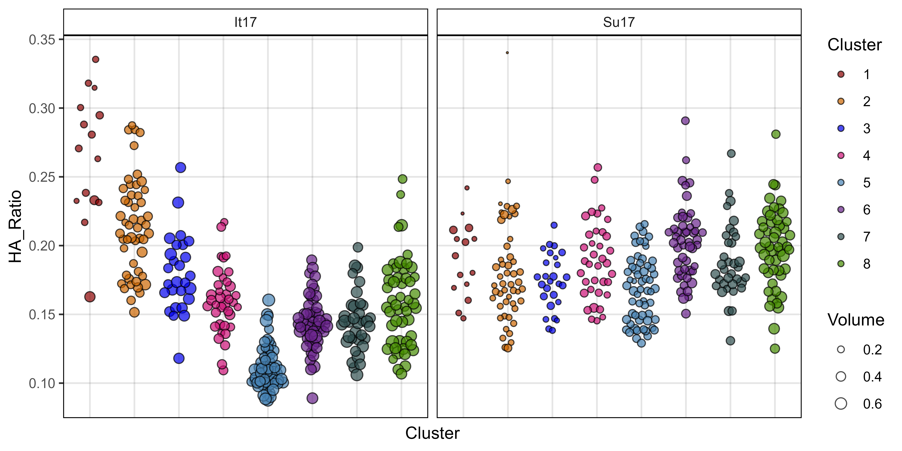
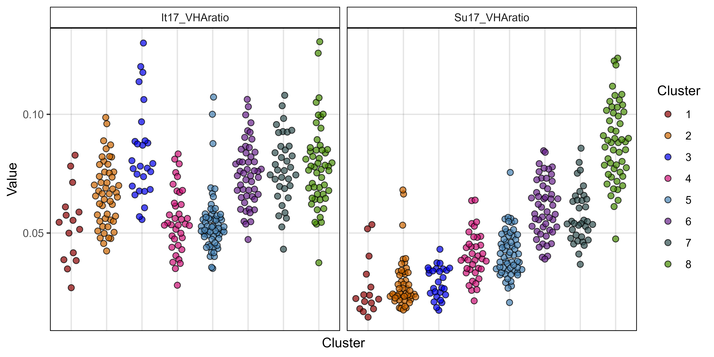
Figure 06 - PCA Summary
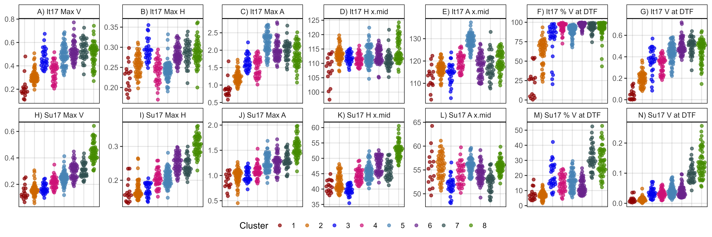
# Prep data
myTs1 <- c("It17_v.k", "It17_h.k", "It17_a.k",
"It17_h.x.mid", "It17_a.x.mid",
"It17_v.perc.DTF", "It17_v.at.DTF",
#
"Su17_v.k", "Su17_h.k", "Su17_a.k",
"Su17_h.x.mid", "Su17_a.x.mid",
"Su17_v.perc.DTF", "Su17_v.at.DTF")
myTs2 <- c("A) It17 Max V", "B) It17 Max H", "C) It17 Max A",
"D) It17 H x.mid", "E) It17 A x.mid",
"F) It17 % V at DTF", "G) It17 V at DTF",
#
"H) Su17 Max V", "I) Su17 Max H", "J) Su17 Max A",
"K) Su17 H x.mid", "L) Su17 A x.mid",
"M) Su17 % V at DTF", "N) Su17 V at DTF")
xx <- myPCAinput %>% rownames_to_column("Name") %>%
left_join(select(myPCA, Entry, Name, Origin, Cluster), by = "Name") %>%
select(Entry, Name, Origin, Cluster, everything()) %>%
gather(Trait, Value, 5:ncol(.)) %>%
filter(Trait %in% myTs1) %>%
mutate(Trait = plyr::mapvalues(Trait, myTs1, myTs2),
Trait = factor(Trait, levels = myTs2))
# Plot
mp <- ggplot(xx, aes(x = Cluster, y = Value, color = Cluster)) +
geom_quasirandom(alpha = 0.7) +
facet_wrap(Trait ~ ., scales = "free_y", ncol = 7) +
scale_color_manual(values = myColors_Cluster) +
theme_AGL +
theme(legend.position = "bottom",
legend.margin = margin(c(0,0,0,0)),
axis.text.x = element_blank(),
axis.ticks.x = element_blank()) +
guides(color = guide_legend(nrow = 1)) +
labs(x = NULL, y = NULL)
ggsave("Figure_06.png", mp, width = 12, height = 4, dpi = 600)Additional Figures - Clusters
# cnum<-3
ggHC_test <- function(cnum) {
#
mypcaH <- HCPC(mypca, nb.clust = cnum, graph = F)
x1 <- mypcaH[[1]] %>% rownames_to_column("Name") %>% select(Name, Cluster=clust)
#
myTs1 <- c("It17_v.k", "It17_h.k", "It17_a.k",
"It17_h.x.mid", "It17_a.x.mid",
"It17_v.perc.DTF", "It17_v.at.DTF",
#
"Su17_v.k", "Su17_h.k", "Su17_a.k",
"Su17_h.x.mid", "Su17_a.x.mid",
"Su17_v.perc.DTF", "Su17_v.at.DTF")
myTs2 <- c("A) It17 Max V", "B) It17 Max H", "C) It17 Max A",
"D) It17 H x.mid", "E) It17 A x.mid",
"F) It17 % V at DTF", "G) It17 V at DTF",
#
"H) Su17 Max V", "I) Su17 Max H", "J) Su17 Max A",
"K) Su17 H x.mid", "L) Su17 A x.mid",
"M) Su17 % V at DTF", "N) Su17 V at DTF")
xx <- myPCAinput %>% rownames_to_column("Name") %>%
left_join(x1, by = "Name") %>%
select(Name, Cluster, everything()) %>%
gather(Trait, Value, 3:ncol(.)) %>%
filter(Trait %in% myTs1) %>%
mutate(Trait = plyr::mapvalues(Trait, myTs1, myTs2),
Trait = factor(Trait, levels = myTs2))
# Plot
mp <- ggplot(xx, aes(x = Cluster, y = Value, color = Cluster)) +
geom_quasirandom(alpha = 0.7) +
facet_wrap(Trait ~ ., scales = "free_y", ncol = 7) +
scale_color_manual(values = c(myColors_Cluster,
"violetred3", "tan3", "aquamarine4", "deeppink4") ) +
theme_AGL +
theme(legend.position = "bottom") +
guides(color = guide_legend(nrow = 1)) +
labs(x = NULL, y = NULL)
mp
}
ggsave("Additional/PCA/Test_Clusters02.png", ggHC_test(2), width = 10, height = 4, dpi = 600)
ggsave("Additional/PCA/Test_Clusters03.png", ggHC_test(3), width = 10, height = 4, dpi = 600)
ggsave("Additional/PCA/Test_Clusters04.png", ggHC_test(4), width = 10, height = 4, dpi = 600)
ggsave("Additional/PCA/Test_Clusters05.png", ggHC_test(5), width = 10, height = 4, dpi = 600)
ggsave("Additional/PCA/Test_Clusters06.png", ggHC_test(6), width = 10, height = 4, dpi = 600)
ggsave("Additional/PCA/Test_Clusters07.png", ggHC_test(7), width = 10, height = 4, dpi = 600)
ggsave("Additional/PCA/Test_Clusters08.png", ggHC_test(8), width = 10, height = 4, dpi = 600)
ggsave("Additional/PCA/Test_Clusters09.png", ggHC_test(9), width = 10, height = 4, dpi = 600)
ggsave("Additional/PCA/Test_Clusters10.png", ggHC_test(10), width = 10, height = 4, dpi = 600)
ggsave("Additional/PCA/Test_Clusters11.png", ggHC_test(11), width = 10, height = 4, dpi = 600)
ggsave("Additional/PCA/Test_Clusters12.png", ggHC_test(12), width = 10, height = 4, dpi = 600)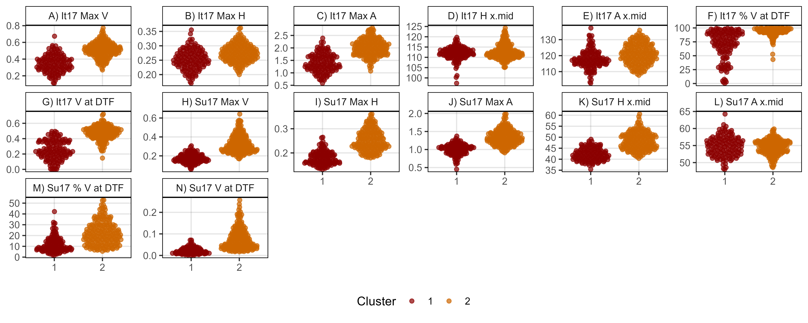
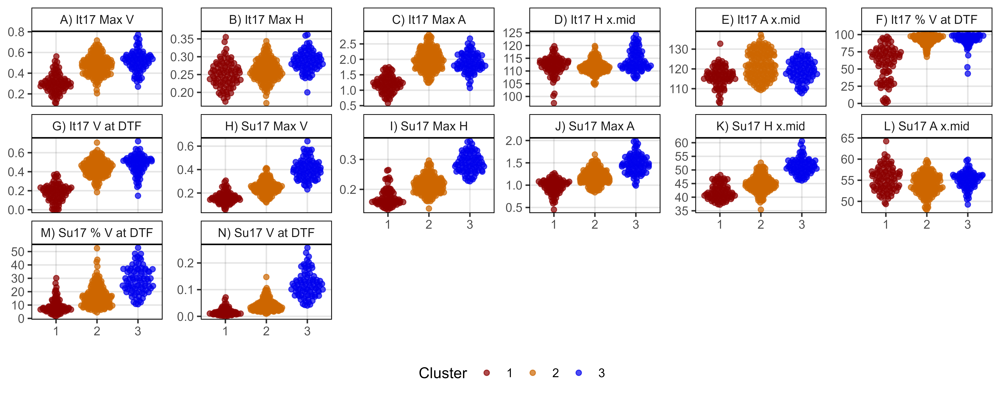
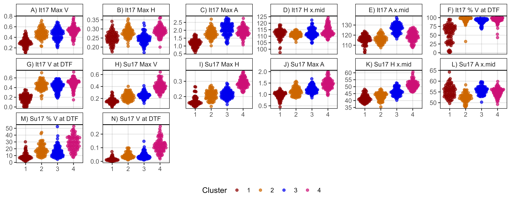
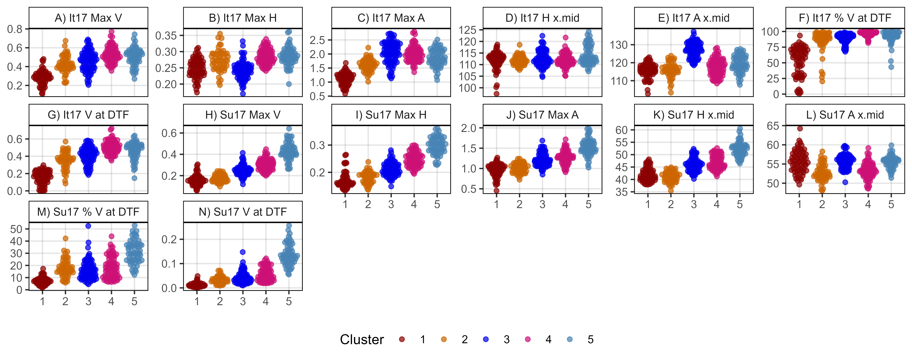
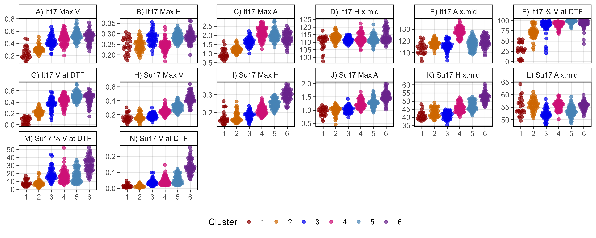
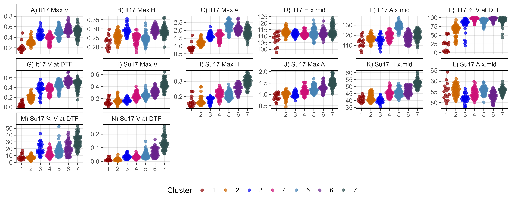
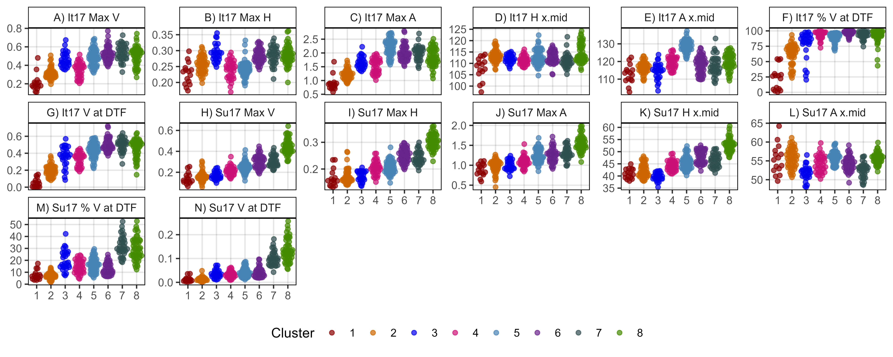
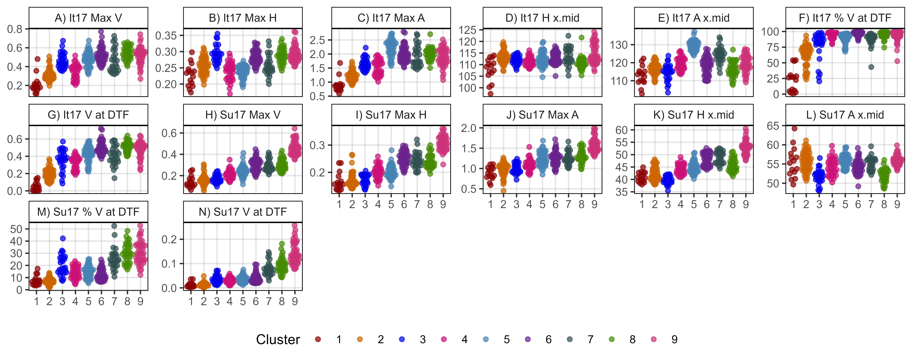
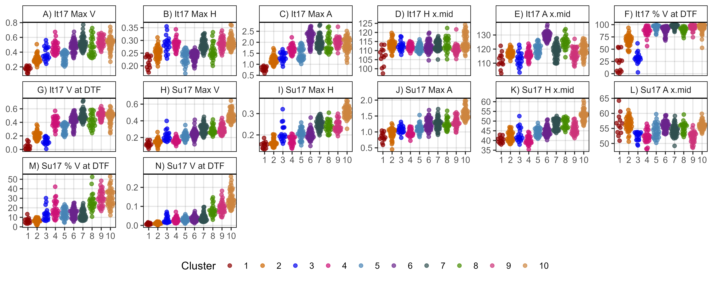
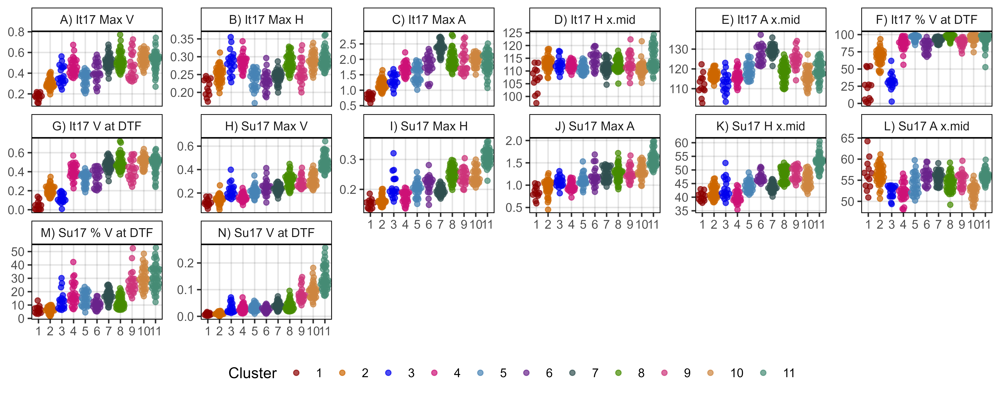
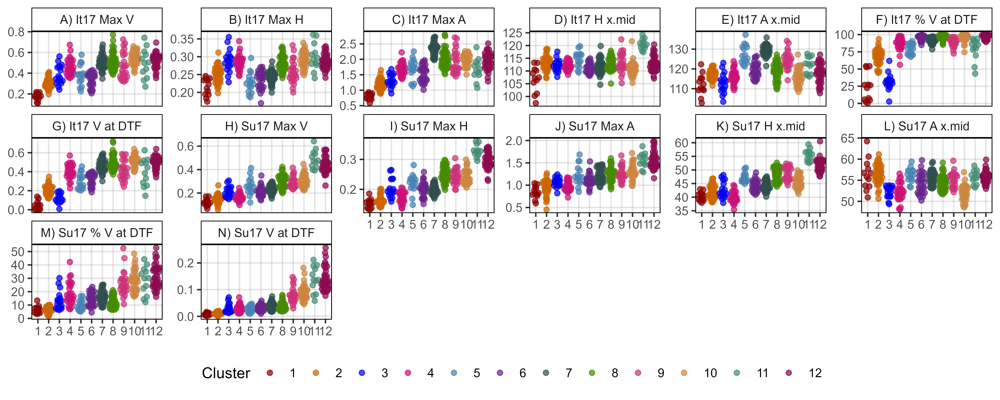
Supllemental Figure 03 - PCA
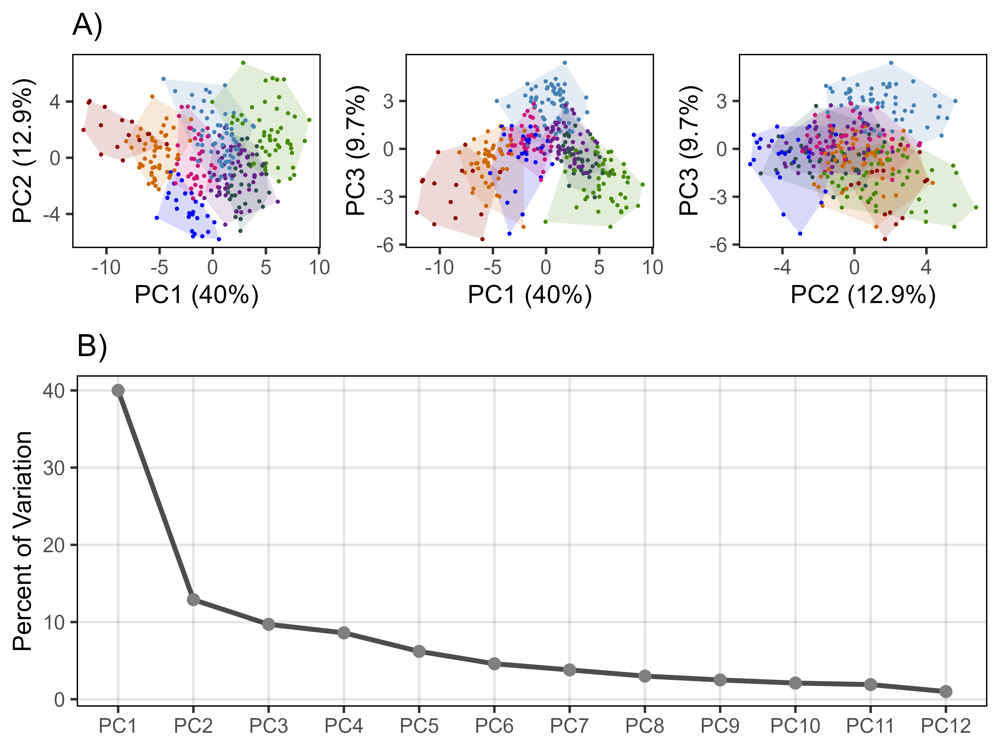
# Prep data
perc <- round(mypca[[1]][,2], 1)
# Plot (a) PCA 1v2
find_hull <- function(df) df[chull(df[,"PC1"], df[,"PC2"]), ]
polys <- plyr::ddply(myPCA, "Cluster", find_hull) %>% mutate(Cluster = factor(Cluster))
mp1.1 <- ggplot(myPCA) +
geom_polygon(data = polys, alpha = 0.15, aes(x = PC1, y = PC2, fill = Cluster)) +
geom_point(aes(x = PC1, y = PC2, colour = Cluster), size = 0.2) +
scale_fill_manual(values = myColors_Cluster) +
scale_color_manual(values = myColors_Cluster) +
theme_AGL +
theme(legend.position = "none", panel.grid = element_blank()) +
labs(title = "A)",
x = paste0("PC1 (", perc[1], "%)"),
y = paste0("PC2 (", perc[2], "%)"))
# Plot (a) PCA 1v3
find_hull <- function(df) df[chull(df[,"PC1"], df[,"PC3"]), ]
polys <- plyr::ddply(myPCA, "Cluster", find_hull) %>% mutate(Cluster = factor(Cluster))
mp1.2 <- ggplot(myPCA) +
geom_polygon(data = polys, alpha = 0.15, aes(x = PC1, y = PC3, fill = Cluster)) +
geom_point(aes(x = PC1, y = PC3, colour = Cluster), size = 0.2) +
scale_fill_manual(values = myColors_Cluster) +
scale_color_manual(values = myColors_Cluster) +
theme_AGL +
theme(legend.position = "none", panel.grid = element_blank()) +
labs(title = "",
x = paste0("PC1 (", perc[1], "%)"),
y = paste0("PC3 (", perc[3], "%)"))
# Plot (a) PCA 2v3
find_hull <- function(df) df[chull(df[,"PC2"], df[,"PC3"]), ]
polys <- plyr::ddply(myPCA, "Cluster", find_hull) %>% mutate(Cluster = factor(Cluster))
mp1.3 <- ggplot(myPCA) +
geom_polygon(data = polys, alpha = 0.15, aes(x = PC2, y = PC3, fill = Cluster)) +
geom_point(aes(x = PC2, y = PC3, colour = Cluster), size = 0.2) +
scale_fill_manual(values = myColors_Cluster) +
scale_color_manual(values = myColors_Cluster) +
theme_AGL +
theme(legend.position = "none", panel.grid = element_blank()) +
labs(title = "",
x = paste0("PC2 (", perc[2], "%)"),
y = paste0("PC3 (", perc[3], "%)"))
# Append
mp1 <- ggarrange(mp1.1, mp1.2, mp1.3, nrow = 1, ncol = 3, hjust = 0)
#
xx <- data.frame(x = 1:12, y = perc[1:12])
# Plot
mp2 <- ggplot(xx, aes(x = x, y = y)) +
geom_line(size = 1, alpha = 0.7) +
geom_point(size = 2, color = "grey50") +
scale_x_continuous(breaks = 1:12, labels = paste0("PC",1:12)) +
theme_AGL +
labs(title = "B)", y = "Percent of Variation", x = NULL)
mp <- ggarrange(mp1, mp2, ncol = 1, nrow = 2, heights = c(0.75,1))
ggsave("Supplemental_Figure_04.png", mp, width = 6, height = 4.5, dpi = 600)Supplemental Figure 02 - Correlation Plots

# Create plotting function
ggDroneCorr <- function(xd, xf, myTitle, myTrait, xLab, yLab, myColor = "darkgreen") {
# Prep data
xd <- xd[[2]] %>% select(Plot, k)
xf <- xf %>% filter(Trait == myTrait) %>% select(Plot, Entry, Name, Value)
xx <- left_join(xf, xd, by = "Plot") %>%
group_by(Entry, Name) %>%
summarise(Value = mean(Value, na.rm = T),
k = mean(k, na.rm = T)) %>%
ungroup()
myCorr <- cor(xx$Value, xx$k, use = "complete.obs")^2
myLabel1 <- paste("italic(R)^2 ==", round(myCorr,2))
# Plot
ggplot(xx, aes(x = Value, y = k)) +
stat_smooth(geom = "line", method = "lm", se = F,
size = 1, color = "black") +
geom_point(alpha = 0.6, pch = 21, fill = myColor) +
geom_label(label = myLabel1, hjust = 0, parse = T,
x = -Inf, y = Inf, vjust = 1 ) +
facet_grid(. ~ as.character(myTitle)) +
theme_AGL +
labs(x = xLab, y = yLab)
}mp1 <- ggDroneCorr(xd = it17_gc.h, xf = it17_f, myColor = myColors_Expt[1],
myTitle = "Metaponto, Italy 2017", yLab = "Plot Height (UAV)",
myTrait = "Canopy.Height", xLab = "Canopy Height (Manual)")
mp2 <- ggDroneCorr(xd = ro17_gc.h, xf = ro17_f, myColor = myColors_Expt[2],
myTitle = "Rosthern, Canada 2017", yLab = "Plot Height (UAV)",
myTrait = "Canopy.Height", xLab = "Canopy Height (Manual)")
mp3 <- ggDroneCorr(xd = su17_gc.h, xf = su17_f, myColor = myColors_Expt[3],
myTitle = "Sutherland, Canada 2017", yLab = "Plot Height (UAV)",
myTrait = "Canopy.Height", xLab = "Canopy Height (Manual)")
mp4 <- ggDroneCorr(xd = su18_gc.h, xf = su18_f, myColor = myColors_Expt[4],
myTitle = "Sutherland, Canada 2018", yLab = "Plot Height (UAV)",
myTrait = "CanopyHeight", xLab = "Canopy Height (Manual)")
mp_a <- ggarrange(mp1, mp2, mp3, mp4, ncol = 4, nrow = 1) %>%
annotate_figure(top = "Plot Height (UAV) x Canopy Height (Manual)") +
bgcolor("white") + border("white")
#
mp1 <- ggDroneCorr(xd = it17_gc.v, xf = it17_f, myColor = myColors_Expt[1],
myTitle = "Metaponto, Italy 2017", yLab = "Plot Volume (UAV)",
myTrait = "Straw.Biomass", xLab = "Straw Biomass (Manual)")
mp2 <- ggDroneCorr(xd = ro17_gc.v, xf = ro17_f, myColor = myColors_Expt[2],
myTitle = "Rosthern, Canada 2017", yLab = "Plot Volume (UAV)",
myTrait = "Plot.Biomass", xLab = "Plot Biomass (Manual)")
mp3 <- ggDroneCorr(xd = su17_gc.v, xf = su17_f, myColor = myColors_Expt[3],
myTitle = "Sutherland, Canada 2017", yLab = "Plot Volume (UAV)",
myTrait = "Plot.Biomass", xLab = "Plot Biomass (Manual)")
mp4 <- ggDroneCorr(xd = su18_gc.v, xf = su18_f, myColor = myColors_Expt[4],
myTitle = "Sutherland, Canada 2018", yLab = "Plot Volume (UAV)",
myTrait = "Plot.Biomass", xLab = "Plot Biomass (Manual)")
mp_b <- ggarrange(mp1, mp2, mp3, mp4, ncol = 4, nrow = 1) %>%
annotate_figure(top = "Plot Volume (UAV) x Biomass (Manual)") +
bgcolor("white") + border("white")
mp <- ggarrange(mp_a, mp_b, nrow = 2, labels = c("A)","B)"))
ggsave("Supplemental_Figure_02.png", mp, width = 10, height = 6, dpi = 600)
ggsave("Additional/DroneData/Supplemental_Figure_02_A.png", mp_a, width = 10, height = 3, dpi = 600)
ggsave("Additional/DroneData/Supplemental_Figure_02_B.png", mp_b, width = 10, height = 3, dpi = 600)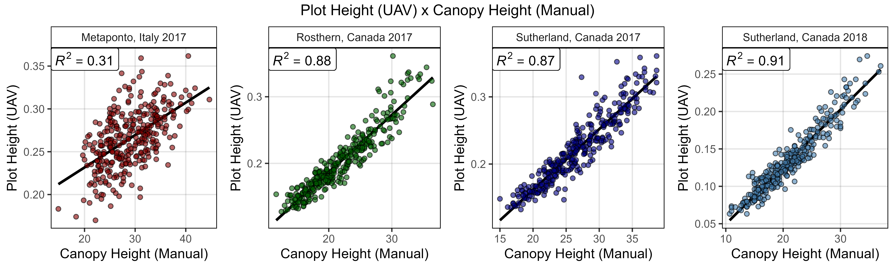
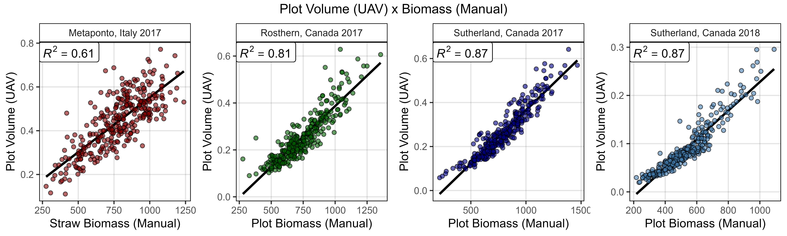
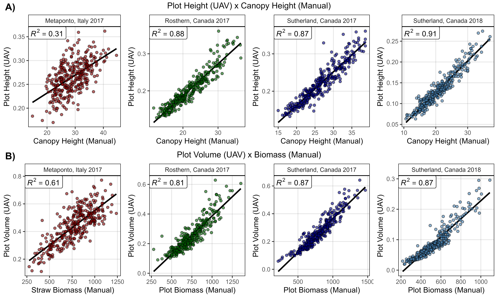
mp1 <- ggDroneCorr(xd = it17_gc.v, xf = it17_f, myColor = myColors_Expt[1],
myTitle = "Italy 2017", yLab = "Plot Volume (Drone)",
myTrait = "Seed.Mass", xLab = "Seed Yield (Manual)")
mp2 <- ggDroneCorr(xd = ro17_gc.v, xf = ro17_f, myColor = myColors_Expt[2],
myTitle = "Rosthern 2017", yLab = "Plot Volume (Drone)",
myTrait = "Seed.Mass", xLab = "Seed Yeild (Manual)")
mp3 <- ggDroneCorr(xd = su17_gc.v, xf = su17_f, myColor = myColors_Expt[3],
myTitle = "Sutherland 2017", yLab = "Plot Volume (Drone)",
myTrait = "Seed.Mass", xLab = "Seed Yield (Manual)")
mp4 <- ggDroneCorr(xd = su18_gc.v, xf = su18_f, myColor = myColors_Expt[4],
myTitle = "Sutherland 2018", yLab = "Plot Volume (Drone)",
myTrait = "Seed.Mass", xLab = "Seed Yield (Manual)")
mp_a <- ggarrange(mp1, mp2, mp3, mp4, ncol = 4, nrow = 1) %>%
annotate_figure(top = "Volume x Seed Yield") +
bgcolor("white") + border("white")
ggsave("Additional/DroneData/Supplemental_Figure_02_C.png", mp, width = 10, height = 6, dpi = 600)Figure 04 - Canada vs Iran vs India
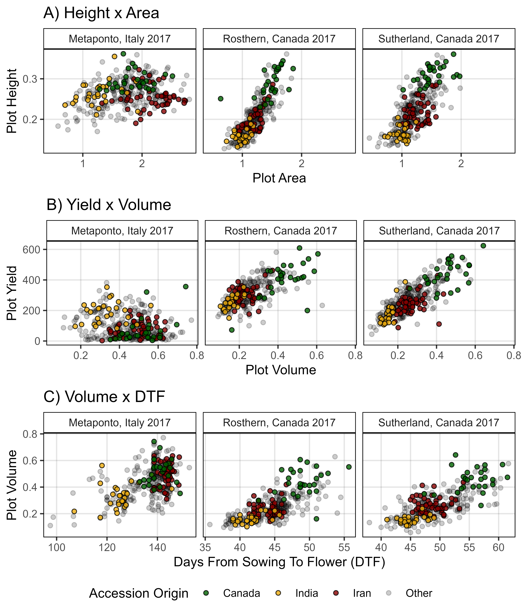
# Prep data
myColors_Origins <- c("darkgreen","darkgoldenrod2", "darkred", "black")
myOrigins <- c("India", "Iran", "Canada", "Other")
myExpts3 <- c("Italy 2017", "Rosthern 2017", "Sutherland 2017", "Sutherland 2018")
#
xH <- rbind(it17_gc.h[[2]], ro17_gc.h[[2]], su17_gc.h[[2]]) %>% #, su18_gc.h[[2]]
select(Plot, Entry, Name, Expt, Height=k)
xA <- rbind(it17_gc.a[[2]], ro17_gc.a[[2]], su17_gc.a[[2]]) %>% #, su18_gc.a[[2]]
select(Plot, Entry, Name, Expt, Area=k)
xV <- rbind(it17_gc.v[[2]], ro17_gc.v[[2]], su17_gc.v[[2]]) %>% #, su18_gc.v[[2]]
select(Plot, Entry, Name, Expt, Volume=k)
xS <- rbind(it17_f %>% filter(Trait == "Seed.Mass"),
ro17_f %>% filter(Trait == "Seed.Mass"),
su17_f %>% filter(Trait == "Seed.Mass"),
su18_f %>% filter(Trait == "Seed.Mass")) %>%
select(Plot, Entry, Name, Expt, Seed.Mass=Value)
xD <- rbind(it17_f %>% filter(Trait == "DTF"),
ro17_f %>% filter(Trait == "DTF"),
su17_f %>% filter(Trait == "DTF"),
su18_f %>% filter(Trait == "DTF")) %>%
select(Plot, Entry, Name, Expt, DTF=Value)
xP <- read.csv("myPCA.csv") %>%
mutate(Cluster = factor(Cluster)) %>%
select(Entry, Name, Cluster, Origin)
#
xx <- left_join(xH, xA, by = c("Plot","Entry","Name","Expt")) %>%
left_join(xV, by = c("Plot","Entry","Name","Expt")) %>%
left_join(xS, by = c("Plot","Entry","Name","Expt")) %>%
left_join(xD, by = c("Plot","Entry","Name","Expt")) %>%
group_by(Entry, Name, Expt) %>%
summarise(Height = mean(Height, na.rm = T),
Area = mean(Area, na.rm = T),
Volume = mean(Volume, na.rm = T),
Seed.Mass = mean(Seed.Mass, na.rm = T),
DTF = mean(DTF, na.rm = T)) %>%
ungroup() %>%
left_join(xP, by = c("Entry", "Name")) %>%
mutate(Group = ifelse(Origin %in% myOrigins[1:3], Origin, myOrigins[4]),
Expt = plyr::mapvalues(Expt, myExpts3, myExpts1)) %>%
arrange(desc(Group))
# Plot
mp1 <- ggplot(xx, aes(x = Area, y = Height, fill = Group)) +
geom_point(aes(alpha = Group, key1 = Origin), pch = 21, color = "black") +
facet_grid(. ~ Expt) +
scale_fill_manual(name = "Accession Origin", values = myColors_Origins) +
scale_alpha_manual(name = "Accession Origin", values = c(0.8,0.8,0.8,0.2)) +
theme_AGL +
labs(title = "A) Height x Area", y = "Plot Height", x = "Plot Area")
#
mp2 <- ggplot(xx, aes(x = Volume, y = Seed.Mass, key1 = Origin, fill = Group)) +
geom_point(aes(alpha = Group, key1 = Origin), pch = 21, color = "black") +
facet_grid(. ~ Expt) +
scale_fill_manual(name = "Accession Origin", values = myColors_Origins) +
scale_alpha_manual(name = "Accession Origin", values = c(0.8,0.8,0.8,0.2)) +
theme_AGL +
labs(title = "B) Yield x Volume", x = "Plot Volume", y = "Plot Yield")
#
mp3 <- ggplot(xx, aes(x = DTF, y = Volume, key1 = Origin, fill = Group)) +
geom_point(aes(alpha = Group, key1 = Origin), pch = 21, color = "black") +
facet_grid(. ~ Expt, scales = "free") +
scale_fill_manual(name = "Accession Origin", values = myColors_Origins) +
scale_alpha_manual(name = "Accession Origin", values = c(0.8,0.8,0.8,0.2)) +
theme_AGL +
labs(title = "C) Volume x DTF", x = "Days From Sowing To Flower (DTF)", y = "Plot Volume")
#
mp <- ggarrange(mp1, mp2, mp3, nrow = 3, ncol = 1, common.legend = T, legend = "bottom")
ggsave("Figure_04.png", mp, width = 6, height = 7, dpi = 600, bg = "white")
ggsave("Additional/DroneData/Figure_04_A.png", mp1, width = 6, height = 2.5, dpi = 600)
ggsave("Additional/DroneData/Figure_04_B.png", mp2, width = 6, height = 2.5, dpi = 600)
ggsave("Additional/DroneData/Figure_04_C.png", mp3, width = 6, height = 2.5, dpi = 600)
#
saveWidget(ggplotly(mp1), file="Additional/DroneData/Figure_04_A.html")
saveWidget(ggplotly(mp2), file="Additional/DroneData/Figure_04_B.html")
saveWidget(ggplotly(mp3), file="Additional/DroneData/Figure_04_C.html")https://github.com/derekmichaelwright/AGILE_LDP_UAV/Additional/DroneData/Figure_04_A.html
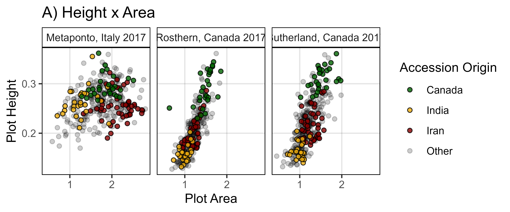
https://github.com/derekmichaelwright/AGILE_LDP_UAV/Additional/DroneData/Figure_04_B.html
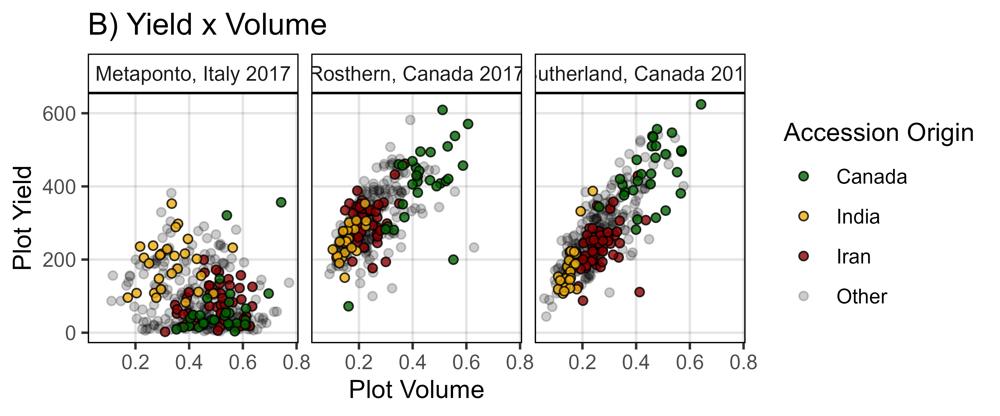
https://github.com/derekmichaelwright/AGILE_LDP_UAV/Additional/DroneData/Figure_04_C.html
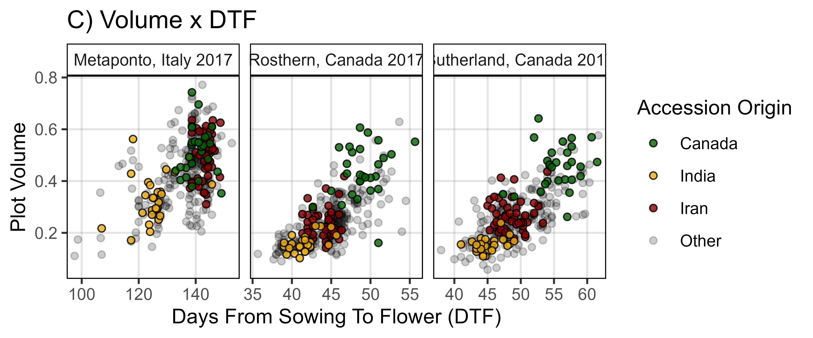
Figure 05 - Growth Curves
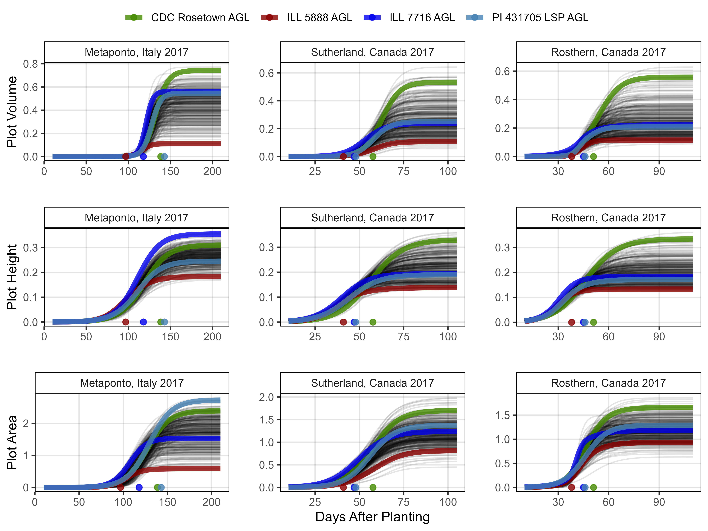
ggGrowthCurve <- function(xpm, xF, myTitle = NULL,
ylab = "Predicted Values", xlab = "Days After Planting",
myEntries = c(9, 35, 73, 94, 113),
myColors = c("darkgreen", "darkgoldenrod3", "darkred",
"steelblue4", "darkslategray"),
linesize = 2,
plotAll = T) {
#
xF <- xF %>% filter(Trait == "DTF", Entry %in% myEntries) %>%
group_by(Name, Entry) %>% summarise(Value = mean(Value, na.rm = T))
if(sum(colnames(xpm)=="Expt")==0) { xpm <- xpm %>% mutate(Expt = myTitle) }
xpe <- xpm %>% filter(Entry %in% myEntries) %>%
mutate(Entry = factor(Entry, levels = myEntries))
mp <- ggplot(xpm, aes(x = DAP, y = Predicted.Values, group = Entry, key1 = Name))
myymax <- max(xpm$Predicted.Values, na.rm = T)
if(plotAll == T) { mp <- mp + geom_line(alpha = 0.1) }
mp <- mp +
geom_line(data = xpe, size = linesize, alpha = 0.8,
aes(color = Name)) +
geom_point(data = xF, y = 0, size = 2, alpha = 0.8,
aes(x = Value, color = Name)) +
facet_grid(. ~ Expt, scales = "free_x", space = "free_x") +
scale_color_manual(name = NULL, values = myColors) +
theme_AGL + ylim(c(0,myymax)) +
labs(x = xlab, y = ylab)
mp
}myEntries = c(19, 94, 107, 252)
myColors = myColors_Cluster[myPCA$Cluster[myPCA$Entry%in%myEntries]]
#
mp1 <- ggGrowthCurve(xpm = it17_gc.v[[4]], xF = it17_f,
ylab = "Plot Volume", xlab = "",
myEntries = myEntries, myColors = myColors,
myTitle = "Metaponto, Italy 2017")
mp2 <- ggGrowthCurve(xpm = it17_gc.h[[4]], xF = it17_f,
ylab = "Plot Height", xlab = "",
myEntries = myEntries, myColors = myColors,
myTitle = "Metaponto, Italy 2017")
mp3 <- ggGrowthCurve(xpm = it17_gc.a[[4]], xF = it17_f,
ylab = "Plot Area", xlab = "",
myEntries = myEntries, myColors = myColors,
myTitle = "Metaponto, Italy 2017")
#
mp4 <- ggGrowthCurve(xpm = su17_gc.v[[4]], xF = su17_f,
ylab = "", xlab = "",
myEntries = myEntries, myColors = myColors,
myTitle = "Sutherland, Canada 2017")
mp5 <- ggGrowthCurve(xpm = su17_gc.h[[4]], xF = su17_f,
ylab = "", xlab = "",
myEntries = myEntries, myColors = myColors,
myTitle = "Sutherland, Canada 2017")
mp6 <- ggGrowthCurve(xpm = su17_gc.a[[4]], xF = su17_f,
ylab = "", xlab = "Days After Planting",
myEntries = myEntries, myColors = myColors,
myTitle = "Sutherland, Canada 2017")
#
mp7 <- ggGrowthCurve(xpm = ro17_gc.v[[4]], xF = ro17_f,
ylab = "", xlab = "",
myEntries = myEntries, myColors = myColors,
myTitle = "Rosthern, Canada 2017")
mp8 <- ggGrowthCurve(xpm = ro17_gc.h[[4]], xF = ro17_f,
ylab = "", xlab = "",
myEntries = myEntries, myColors = myColors,
myTitle = "Rosthern, Canada 2017")
mp9 <- ggGrowthCurve(xpm = ro17_gc.a[[4]], xF = ro17_f,
ylab = "", xlab = "",
myEntries = myEntries, myColors = myColors,
myTitle = "Rosthern, Canada 2017")
mp <- ggarrange(mp1, mp4, mp7, mp2, mp5, mp8, mp3, mp6, mp9, ncol = 3, nrow = 3, common.legend = T)
ggsave("Figure_05.png", mp, width = 8, height = 6, dpi = 600, bg = "white")
mp <- ggarrange(mp2, mp5, mp3, mp6, ncol = 2, nrow = 2, common.legend = T)
ggsave("Additional/GrowthCurves/07_GrowthCurves_1.png", mp, width = 8, height = 6, dpi = 600, bg = "white")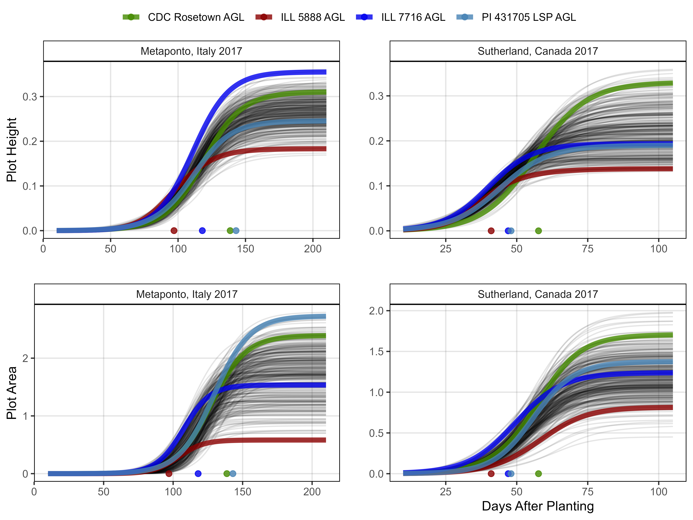
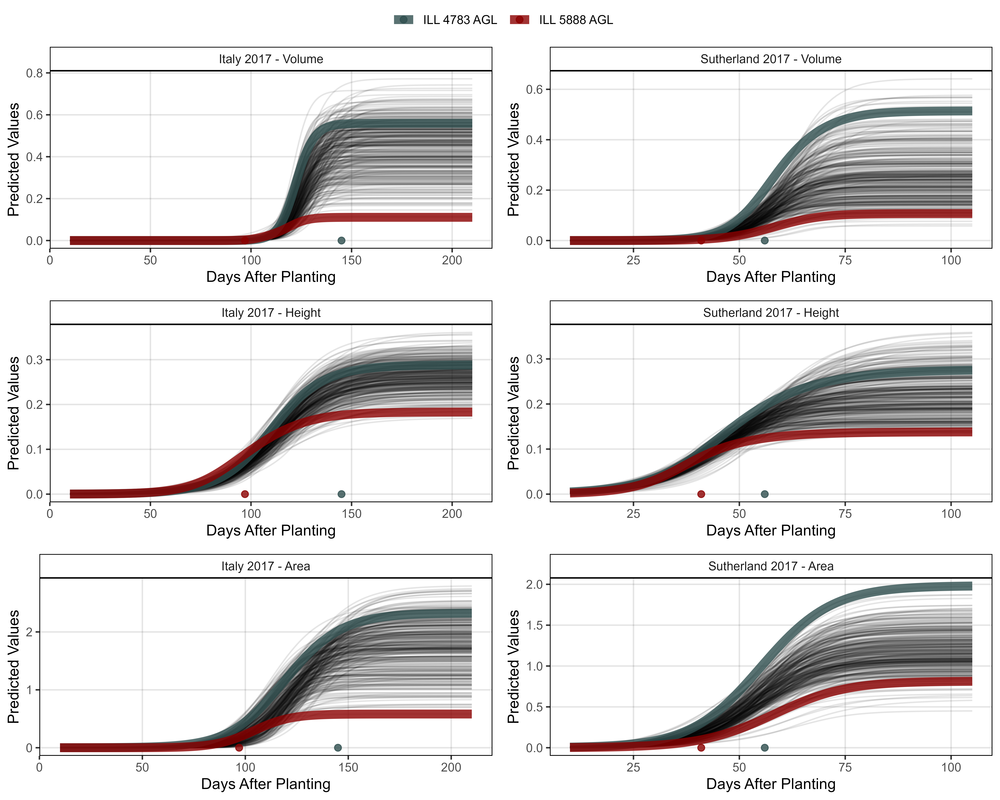
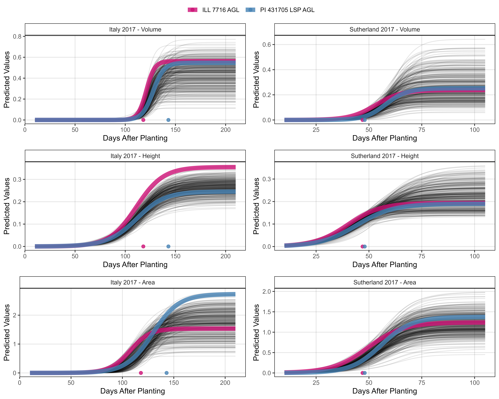
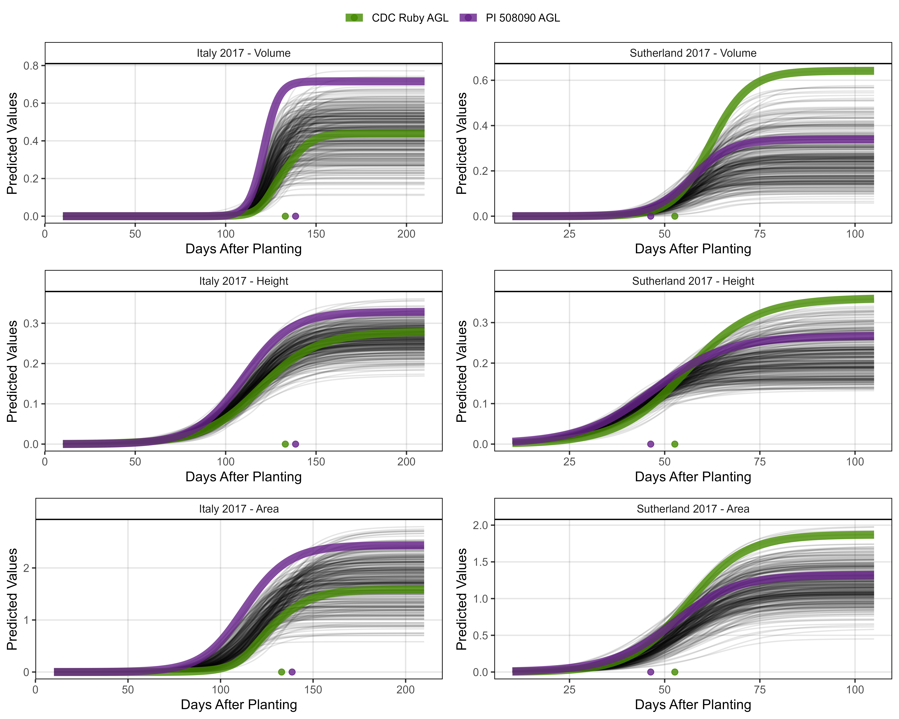
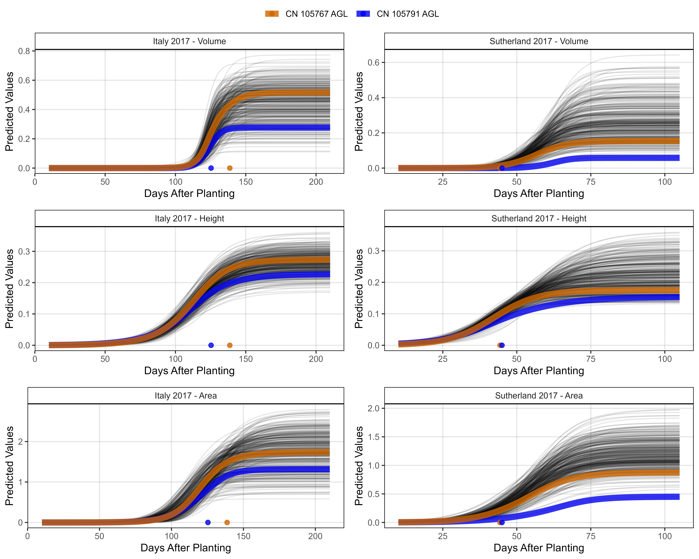
myEntries = c(83, 94)
myColors = myColors_Cluster[c(7,1)]
#
mp1 <- ggGrowthCurve(xpm = it17_gc.v[[4]], xF = it17_f,
myEntries = myEntries, myColors = myColors,
myTitle = "Italy 2017 - Volume", linesize = 3)
mp2 <- ggGrowthCurve(xpm = it17_gc.h[[4]], xF = it17_f,
myEntries = myEntries, myColors = myColors,
myTitle = "Italy 2017 - Height", linesize = 3)
mp3 <- ggGrowthCurve(xpm = it17_gc.a[[4]], xF = it17_f,
myEntries = myEntries, myColors = myColors,
myTitle = "Italy 2017 - Area", linesize = 3)
#
mp4 <- ggGrowthCurve(xpm = su17_gc.v[[4]], xF = su17_f,
myEntries = myEntries, myColors = myColors,
myTitle = "Sutherland 2017 - Volume", linesize = 3)
mp5 <- ggGrowthCurve(xpm = su17_gc.h[[4]], xF = su17_f,
myEntries = myEntries, myColors = myColors,
myTitle = "Sutherland 2017 - Height", linesize = 3)
mp6 <- ggGrowthCurve(xpm = su17_gc.a[[4]], xF = su17_f,
myEntries = myEntries, myColors = myColors,
myTitle = "Sutherland 2017 - Area", linesize = 3)
mpA <- ggarrange(mp1, mp4, mp2, mp5, mp3, mp6, ncol = 2, nrow = 3, common.legend = T)
ggsave("Additional/GrowthCurves/07_GrowthCurves_A.png",
mpA, width = 10, height = 8, dpi = 600, bg = "white")
#
myEntries = c(107, 252 )
myColors = myColors_Cluster[c(4,5)]
#
mp1 <- ggGrowthCurve(xpm = it17_gc.v[[4]], xF = it17_f,
myEntries = myEntries, myColors = myColors,
myTitle = "Italy 2017 - Volume", linesize = 3)
mp2 <- ggGrowthCurve(xpm = it17_gc.h[[4]], xF = it17_f,
myEntries = myEntries, myColors = myColors,
myTitle = "Italy 2017 - Height", linesize = 3)
mp3 <- ggGrowthCurve(xpm = it17_gc.a[[4]], xF = it17_f,
myEntries = myEntries, myColors = myColors,
myTitle = "Italy 2017 - Area", linesize = 3)
#
mp4 <- ggGrowthCurve(xpm = su17_gc.v[[4]], xF = su17_f,
myEntries = myEntries, myColors = myColors,
myTitle = "Sutherland 2017 - Volume", linesize = 3)
mp5 <- ggGrowthCurve(xpm = su17_gc.h[[4]], xF = su17_f,
myEntries = myEntries, myColors = myColors,
myTitle = "Sutherland 2017 - Height", linesize = 3)
mp6 <- ggGrowthCurve(xpm = su17_gc.a[[4]], xF = su17_f,
myEntries = myEntries, myColors = myColors,
myTitle = "Sutherland 2017 - Area", linesize = 3)
mpB <- ggarrange(mp1, mp4, mp2, mp5, mp3, mp6, ncol = 2, nrow = 3, common.legend = T)
ggsave("Additional/GrowthCurves/07_GrowthCurves_B.png",
mpB, width = 10, height = 8, dpi = 600, bg = "white")
#
myEntries = c(22, 311)
myColors = myColors_Cluster[c(8,6)]
#
mp1 <- ggGrowthCurve(xpm = it17_gc.v[[4]], xF = it17_f,
myEntries = myEntries, myColors = myColors,
myTitle = "Italy 2017 - Volume", linesize = 3)
mp2 <- ggGrowthCurve(xpm = it17_gc.h[[4]], xF = it17_f,
myEntries = myEntries, myColors = myColors,
myTitle = "Italy 2017 - Height", linesize = 3)
mp3 <- ggGrowthCurve(xpm = it17_gc.a[[4]], xF = it17_f,
myEntries = myEntries, myColors = myColors,
myTitle = "Italy 2017 - Area", linesize = 3)
#
mp4 <- ggGrowthCurve(xpm = su17_gc.v[[4]], xF = su17_f,
myEntries = myEntries, myColors = myColors,
myTitle = "Sutherland 2017 - Volume", linesize = 3)
mp5 <- ggGrowthCurve(xpm = su17_gc.h[[4]], xF = su17_f,
myEntries = myEntries, myColors = myColors,
myTitle = "Sutherland 2017 - Height", linesize = 3)
mp6 <- ggGrowthCurve(xpm = su17_gc.a[[4]], xF = su17_f,
myEntries = myEntries, myColors = myColors,
myTitle = "Sutherland 2017 - Area", linesize = 3)
mpC <- ggarrange(mp1, mp4, mp2, mp5, mp3, mp6, ncol = 2, nrow = 3, common.legend = T)
ggsave("Additional/GrowthCurves/07_GrowthCurves_C.png", mpC, width = 10, height = 8, dpi = 600, bg = "white")
#
myEntries = c(33, 30)
myColors = myColors_Cluster[c(2,3)]
#
mp1 <- ggGrowthCurve(xpm = it17_gc.v[[4]], xF = it17_f,
myEntries = myEntries, myColors = myColors,
myTitle = "Italy 2017 - Volume", linesize = 3)
mp2 <- ggGrowthCurve(xpm = it17_gc.h[[4]], xF = it17_f,
myEntries = myEntries, myColors = myColors,
myTitle = "Italy 2017 - Height", linesize = 3)
mp3 <- ggGrowthCurve(xpm = it17_gc.a[[4]], xF = it17_f,
myEntries = myEntries, myColors = myColors,
myTitle = "Italy 2017 - Area", linesize = 3)
#
mp4 <- ggGrowthCurve(xpm = su17_gc.v[[4]], xF = su17_f,
myEntries = myEntries, myColors = myColors,
myTitle = "Sutherland 2017 - Volume", linesize = 3)
mp5 <- ggGrowthCurve(xpm = su17_gc.h[[4]], xF = su17_f,
myEntries = myEntries, myColors = myColors,
myTitle = "Sutherland 2017 - Height", linesize = 3)
mp6 <- ggGrowthCurve(xpm = su17_gc.a[[4]], xF = su17_f,
myEntries = myEntries, myColors = myColors,
myTitle = "Sutherland 2017 - Area", linesize = 3)
mpD <- ggarrange(mp1, mp4, mp2, mp5, mp3, mp6, ncol = 2, nrow = 3, common.legend = T)
ggsave("Additional/GrowthCurves/07_GrowthCurves_D.png",
mpD, width = 10, height = 8, dpi = 600, bg = "white")#
myEntries = c(19, 22, 94, 215, 107, 190)
myColors = c("darkgreen", "darkgoldenrod3", "darkred",
"steelblue4", "darkslategray", "darkorchid4")
#
mp1 <- ggGrowthCurve(xpm = it17_gc.v[[4]], xF = it17_f,
myEntries = myEntries, myColors = myColors,
myTitle = "Italy 2017 - Volume")
mp2 <- ggGrowthCurve(xpm = it17_gc.h[[4]], xF = it17_f,
myEntries = myEntries, myColors = myColors,
myTitle = "Italy 2017 - Height")
mp3 <- ggGrowthCurve(xpm = it17_gc.a[[4]], xF = it17_f,
myEntries = myEntries, myColors = myColors,
myTitle = "Italy 2017 - Area")
#
mp4 <- ggGrowthCurve(xpm = su17_gc.v[[4]], xF = su17_f,
myEntries = myEntries, myColors = myColors,
myTitle = "Sutherland 2017 - Volume")
mp5 <- ggGrowthCurve(xpm = su17_gc.h[[4]], xF = su17_f,
myEntries = myEntries, myColors = myColors,
myTitle = "Sutherland 2017 - Height")
mp6 <- ggGrowthCurve(xpm = su17_gc.a[[4]], xF = su17_f,
myEntries = myEntries, myColors = myColors,
myTitle = "Sutherland 2017 - Area")
mp <- ggarrange(mp1, mp4, mp2, mp5, mp3, mp6, ncol = 2, nrow = 3, common.legend = T)
ggsave("Additional/GrowthCurves/08_GrowthCurves.png",
mp, width = 10, height = 8, dpi = 600, bg = "white")https://github.com/derekmichaelwright/AGILE_LDP_UAV/Additional/GrowthCurves/09_GrowthCurves.pdf
#
pdf("Additional/GrowthCurves/09_GrowthCurves.pdf", width = 8, height = 8)
# i<-1
for (i in myPCA %>% arrange(Cluster) %>% pull(Entry) ) {
#
myColors = myColors_Cluster[myPCA$Cluster[myPCA$Entry==i]]#"darkred"
#
mp1 <- ggGrowthCurve(xpm = it17_gc.v[[4]], xF = it17_f,
myEntries = i, myTitle = "It17 - Plot Volume",
myColors = myColors, linesize = 3, plotAll = F)
mp2 <- ggGrowthCurve(xpm = it17_gc.h[[4]], xF = it17_f,
myEntries = i, myTitle = "It17 - Canopy Height",
myColors = myColors, linesize = 3, plotAll = F)
mp3 <- ggGrowthCurve(xpm = it17_gc.a[[4]], xF = it17_f,
myEntries = i, myTitle = "It17 - Plot Area",
myColors = myColors, linesize = 3, plotAll = F)
#
mp4 <- ggGrowthCurve(xpm = su17_gc.v[[4]], xF = su17_f,
myEntries = i, myTitle = "Su17 - Plot Volume",
myColors = myColors, linesize = 3, plotAll = F)
mp5 <- ggGrowthCurve(xpm = su17_gc.h[[4]], xF = su17_f,
myEntries = i, myTitle = "Su17 - Canopy Height",
myColors = myColors, linesize = 3, plotAll = F)
mp6 <- ggGrowthCurve(xpm = su17_gc.a[[4]], xF = su17_f,
myEntries = i, myTitle = "Su17 - Plot Area",
myColors = myColors, linesize = 3, plotAll = F)
#
mp7 <- ggGrowthCurve(xpm = ro17_gc.v[[4]], xF = ro17_f,
myEntries = i, myTitle = "Ro17 - Plot Volume",
myColors = myColors, linesize = 3, plotAll = F)
mp8 <- ggGrowthCurve(xpm = ro17_gc.h[[4]], xF = ro17_f,
myEntries = i, myTitle = "Ro17 - Canopy Height",
myColors = myColors, linesize = 3, plotAll = F)
mp9 <- ggGrowthCurve(xpm = ro17_gc.a[[4]], xF = ro17_f,
myEntries = i, myTitle = "Ro17 - Plot Area",
myColors = myColors, linesize = 3, plotAll = F)
mp <- ggarrange(mp1, mp4, mp7, mp2, mp5, mp8, mp3, mp6, mp9,
ncol = 3, nrow = 3, common.legend = T)
print(mp)
}
dev.off()
#dev.set(dev.next())Figure 07 - EnvChange
y1 <- read.csv("https://raw.githubusercontent.com/derekmichaelwright/AGILE_LDP_Phenology/master/data/data_tb_pc_raw.csv") %>%
mutate(Expt = gsub("Metaponto, |Canada |,", "", Expt)) %>%
filter(ExptShort %in% c("It17","Su16","Su17","Su18","Ro16","Ro17")) %>%
select(Plot, Tb, Pc)
y2 <- read.csv("https://raw.githubusercontent.com/derekmichaelwright/AGILE_LDP_Phenology/master/data/data_pca_results.csv") %>%
select(Entry, Name, Origin, Cluster, PC1, PC2, PC3, PC4, PC5, PC6)
#
y3 <- read.csv("https://raw.githubusercontent.com/derekmichaelwright/AGILE_LDP_Phenology/master/data/model_t%2Bp_coefs.csv") %>%
select(Entry, Name, a,b,c)
#
x1 <- left_join(it17_gc.a[[2]] %>% select(Plot, Name, Expt, Area=k),
it17_gc.h[[2]] %>% select(Plot, Height=k), by = "Plot") %>%
left_join(it17_gc.v[[2]] %>% select(Plot, Volume=k))
x2 <- left_join(ro17_gc.a[[2]] %>% select(Plot, Name, Expt, Area=k),
ro17_gc.h[[2]] %>% select(Plot, Height=k), by = "Plot") %>%
left_join(ro17_gc.v[[2]] %>% select(Plot, Volume=k))
x3 <- left_join(su17_gc.a[[2]] %>% select(Plot, Name, Expt, Area=k),
su17_gc.h[[2]] %>% select(Plot, Height=k), by = "Plot") %>%
left_join(su17_gc.v[[2]] %>% select(Plot, Volume=k))
xx <- bind_rows(x1, x2, x3) %>%
left_join(y1, by = "Plot") %>%
left_join(y3, by = "Name") %>%
left_join(select(myPCA, Name, Cluster), by = "Name") %>%
select(Plot, Entry, Name, Expt, everything()) %>%
group_by(Entry, Name, Expt, Cluster) %>%
summarise_at(vars(Area, Height, Volume, Tb, Pc, a, b, c), funs(mean), na.rm = T)
#
yy <- xx %>% select(-Tb, -Pc) %>%
gather(Trait, Value, Area, Height, Volume) %>%
mutate(Trait = paste("Plot", Trait)) %>%
spread(Expt, Value) %>%
mutate(EnvChange = `Italy 2017` - `Sutherland 2017`)
mp1 <- ggplot(yy, aes(x = Cluster, y = EnvChange, color = Cluster)) +
geom_hline(yintercept = 0, alpha = 0.7) +
geom_quasirandom(cex = 1, alpha = 0.7) +
theme_AGL +
theme(legend.position = "bottom",
legend.margin=margin(c(0,0,0,0)),
axis.text.x = element_blank(),
axis.ticks.x = element_blank()) +
facet_wrap(. ~ Trait, scales = "free_y") +
scale_color_manual(values = myColors_Cluster) +
guides(color = guide_legend(nrow = 1)) +
labs(title = "A)", y = "Change (It17 - Su17)", x = NULL)
#
yy <- yy %>% select(Name, Cluster, Trait, b,c, EnvChange) %>%
spread(Trait, EnvChange)
#
yy <- yy %>% left_join(
myPCAinput %>% rownames_to_column("Name") %>%
select(Name, It17_v.perc.DTF, Su17_v.perc.DTF), by = "Name" ) %>%
mutate(v.perc.DTF = It17_v.perc.DTF - Su17_v.perc.DTF,
Group = ifelse(`Plot Area` > 0 | `Plot Height` > 0, "abnormal", "normal"),
Group = ifelse(`Plot Area` > 0 & `Plot Height` > 0, "normal", Group))
#
mp2 <- ggplot(yy) +
geom_label(x = -0.4, y = 0.135, size = 3, label = "Taller\n&\nThiner") +
geom_label(x = 1.4, y = -0.05, size = 3, label = "Shorter\n&\nWider") +
geom_point(aes(x = `Plot Area`, y = `Plot Height`, color = Cluster),
alpha = 0.7) +
geom_point(data = yy %>% filter(Group == "abnormal"),
aes(x = `Plot Area`, y = `Plot Height`), pch = 21) +
geom_vline(xintercept = 0, size = 1, alpha = 0.7) +
geom_hline(yintercept = 0, size = 1, alpha = 0.7) +
scale_color_manual(values = myColors_Cluster) +
scale_size_continuous(range = c(0.5, 3)) +
theme_AGL +
theme(legend.position = "none",
panel.grid.major = element_blank(),
panel.grid.minor = element_blank()) +
labs(title = "B)",
x = "Change in Plot Area (It17 - Su17)",
y = "Change in Plot Height (It17 - Su17)")
#
y2 <- yy %>% ungroup() %>%
select(Name, Cluster, It17=It17_v.perc.DTF, Su17=Su17_v.perc.DTF) %>%
gather(Expt, Value, 3:4)
#
mp3 <- ggplot(y2, aes(x = Expt, y = Value, color = Cluster)) +
geom_beeswarm(cex = 1, alpha = 0.7, size = 1) +
scale_color_manual(values = myColors_Cluster) +
theme_AGL +
theme(legend.position = "none") +
labs(title = "C)", y = "% of Volume Growth at Flowering", x = "")
mp <- ggarrange(mp1, ggarrange(mp2, mp3, ncol = 2, nrow = 1), ncol = 1, nrow = 2, align = "h")
ggsave("Figure_07.png", mp, width = 8, height = 6, dpi = 600, bg = "white")
saveWidget(ggplotly(mp1), file="Additional/DroneData/Figure_07_A.html")
saveWidget(ggplotly(mp2), file="Additional/DroneData/Figure_07_B.html")
saveWidget(ggplotly(mp3), file="Additional/DroneData/Figure_07_C.html")
#override.aes = list(size = 3, alpha = 1)Additional Figure 01 - Harvest Index
# Prep data
x1 <- bind_rows(it17_f %>% filter(Trait == "Seed.Mass") %>%
select(Plot, Expt, Entry, Name, Seed.Mass=Value),
su17_f %>% filter(Trait == "Seed.Mass") %>%
select(Plot, Expt, Entry, Name, Seed.Mass=Value) )
x2 <- bind_rows(it17_gc.v[[2]] %>% select(Plot, Expt, Entry, Name, Volume=k),
su17_gc.v[[2]] %>% select(Plot, Expt, Entry, Name, Volume=k) )
xx <- full_join(x1, x2, by = c("Plot", "Expt", "Entry", "Name")) %>%
left_join(select(myPCA, Entry, Cluster), by = "Entry") %>%
mutate(Harvest.Index = Seed.Mass / Volume) %>%
group_by(Expt, Entry, Name, Cluster) %>%
summarise(Harvest.Index = mean(Harvest.Index, na.rm = T),
Seed.Mass = mean(Seed.Mass, na.rm = T))
#
mp1 <- ggplot(xx, aes(x = Cluster, y = Harvest.Index, color = Cluster, size = Seed.Mass)) +
geom_quasirandom(alpha = 0.7) +
facet_grid(. ~ Expt) +
scale_color_manual(values = myColors_Cluster) +
scale_size_continuous(range = c(0.2,4)) +
theme_AGL
#
mp2 <- ggplot(xx, aes(x = Expt, y = Harvest.Index, color = Cluster, group = Entry)) +
geom_line(alpha = 0.2) +
geom_point(aes(size = Seed.Mass), alpha = 0.7) +
facet_grid(. ~ Cluster) +
scale_color_manual(values = myColors_Cluster) +
scale_size_continuous(range = c(0.2,4)) +
theme_AGL +
theme(axis.text.x = element_text(angle = 45, hjust = 1))
#
xx <- xx %>% select(-Seed.Mass) %>%
spread(Expt, Harvest.Index) %>%
mutate(Diff = `Sutherland 2017` - `Italy 2017`)
mp3 <- ggplot(xx, aes(x = Cluster, y = Diff, color = Cluster)) +
geom_quasirandom() +
scale_color_manual(values = myColors_Cluster) +
theme_AGL
mp <- ggarrange(mp1, mp2, mp3, ncol = 1, common.legend = T, legend = "right")
ggsave("Additional/DroneData/Additional_Figure_01.png",
mp, width = 8, height = 8, dpi = 600, bg = "white")Prepare Data for GWAS
Raw Drone Data
# Italy 2017
myT1 <- c("crop_volume_m3_excess.green.based",
"crop_area_m2_excess.green.based",
"mean_crop_height_m_excess.green.based")
myT2 <- c("Plot.Volume", "Plot.Area", "Plot.Height")
xx <- it17_d %>%
mutate(DAP = plyr::mapvalues(DAP, c(93, 101, 119, 133, 163),
c(94, 100, 118, 132, 164)),
DAP = plyr::mapvalues(DAP, c(94, 100, 118, 132, 164),
c("094","100","118","132","164"))) %>%
filter(Trait %in% myT1, DAP %in% c("094","100","118","132","164")) %>%
group_by(Name, DAP, Trait) %>%
summarise(Value_f = mean(Value_f, na.rm = T)) %>%
ungroup() %>%
mutate(Trait = plyr::mapvalues(Trait, myT1, myT2),
Trait = paste0("It17_",Trait, ".d", DAP)) %>%
select(-DAP) %>%
spread(Trait, Value_f) %>%
mutate(Name = gsub(" ", "_", Name),
Name = gsub("-", "\\.", Name),
Name = plyr::mapvalues(Name, "3156.11_AGL", "X3156.11_AGL"))
yy <- xx %>% gather(Trait, Value, 2:ncol(.)) %>% filter(!is.na(Value)) %>%
group_by(Trait) %>% summarise(n = n())
write.csv(xx, "Data_GWAS/myY_it17_d.csv", row.names = F)
# Rosthern 2017
myT1 <- c("crop_volume_m3_blue.ndvi.based",
"crop_area_m2_blue.ndvi.based",
"mean_crop_height_m_blue.ndvi.based")
xx <- ro17_d %>%
filter(Trait %in% myT1, DAP %in% c(24,32,39,40,54,61,67,74,80,89,95)) %>%
mutate(DAP = paste0("0", DAP)) %>%
group_by(Name, DAP, Trait) %>%
summarise(Value_f = mean(Value_f, na.rm = T)) %>%
ungroup() %>%
mutate(Trait = plyr::mapvalues(Trait, myT1, myT2),
Trait = paste0("Ro17_", Trait, ".d", DAP)) %>%
select(-DAP) %>%
spread(Trait, Value_f) %>%
mutate(Name = gsub(" ", "_", Name),
Name = gsub("-", "\\.", Name),
Name = plyr::mapvalues(Name, "3156.11_AGL", "X3156.11_AGL"))
xx[is.na(xx)] <- NA
yy <- xx %>% gather(Trait, Value, 2:ncol(.)) %>% filter(!is.na(Value)) %>%
group_by(Trait) %>% summarise(n = n())
xx <- xx %>%
select(-Ro17_Plot.Area.d024,-Ro17_Plot.Area.d032, -Ro17_Plot.Area.d039,
-Ro17_Plot.Volume.d024, -Ro17_Plot.Volume.d032)
write.csv(xx, "Data_GWAS/myY_Ro17_d.csv", row.names = F)
#
myT1 <- c("crop_volume_m3_blue.ndvi.based",
"crop_area_m2_blue.ndvi.based",
"mean_crop_height_m_blue.ndvi.based")
#unique(su17_d$DAP)
#unique(su17_d$Trait)
xx <- su17_d %>%
filter(Trait %in% myT1, DAP %in% c(32,40,46,51,57,61,68,72,75,77,83)) %>% #39,
mutate(DAP = paste0("0", DAP)) %>%
group_by(Name, DAP, Trait) %>%
summarise(Value_f = mean(Value_f, na.rm = T)) %>%
ungroup() %>%
mutate(Trait = plyr::mapvalues(Trait, myT1, myT2),
Trait = paste0("Su17_", Trait, ".d", DAP)) %>%
select(-DAP) %>%
spread(Trait, Value_f) %>%
mutate(Name = gsub(" ", "_", Name),
Name = gsub("-", "\\.", Name),
Name = plyr::mapvalues(Name, "3156.11_AGL", "X3156.11_AGL"))
xx[is.na(xx)] <- NA
yy <- xx %>% gather(Trait, Value, 2:ncol(.)) %>% filter(!is.na(Value)) %>%
group_by(Trait) %>% summarise(n = n())
xx <- xx %>% select(-Su17_Plot.Area.d032, -Su17_Plot.Volume.d032)
write.csv(xx, "Data_GWAS/myY_Su17_d.csv", row.names = F)
#
myT1 <- c("crop_volume_m3_excess.green.based",
"crop_area_m2_excess.green.based",
"mean_crop_height_m_excess.green.based")
xx <- su18_d %>%
filter(Trait %in% myT1, DAP %in% c(42,55,58,61,65,68,72,76,79,86)) %>%
mutate(DAP = paste0("0", DAP)) %>%
group_by(Name, DAP, Trait) %>%
summarise(Value_f = mean(Value_f, na.rm = T)) %>%
ungroup() %>%
mutate(Trait = plyr::mapvalues(Trait, myT1, myT2),
Trait = paste0("Su18_",Trait, ".d", DAP)) %>%
select(-DAP) %>%
spread(Trait, Value_f) %>%
mutate(Name = gsub(" ", "_", Name),
Name = gsub("-", "\\.", Name),
Name = plyr::mapvalues(Name, "3156.11_AGL", "X3156.11_AGL"))
xx[is.na(xx)] <- NA
sum(is.na(xx))
yy <- xx %>% gather(Trait, Value, 2:ncol(.)) %>% filter(!is.na(Value)) %>%
group_by(Trait) %>% summarise(n = n())
xx <- xx %>% select(-Su18_Plot.Volume.d055, -Su18_Plot.Volume.d058, -Su18_Plot.Height.d058)
write.csv(xx, "Data_GWAS/myY_Su18_d.csv", row.names = F)Growth Curve Data
# Drone data Growth Curves
x1 <- it17_gc.v[[2]] %>% mutate(Expt = "It17_gc.v")
x2 <- it17_gc.h[[2]] %>% mutate(Expt = "It17_gc.h")
x3 <- it17_gc.a[[2]] %>% mutate(Expt = "It17_gc.a")
xx <- bind_rows(x1,x2,x3) %>%
select(Name, Expt, r, b, g.r, g.b, k,
x.min, x.mid, x.max, x.d, x.gen, auc.l, auc.e) %>%
gather(Trait, Value, 3:ncol(.)) %>%
group_by(Name, Expt, Trait) %>%
summarise(Value = mean(Value, na.rm = T)) %>%
ungroup() %>% mutate(Trait = paste(Expt, Trait, sep = ".")) %>%
select(-Expt) %>% spread(Trait, Value) %>%
mutate(Name = gsub(" ", "_", Name),
Name = gsub("-", "\\.", Name),
Name = plyr::mapvalues(Name, "3156.11_AGL", "X3156.11_AGL"))
write.csv(xx, "Data_GWAS/myY_It17_gc.csv", row.names = F)
#
x1 <- ro17_gc.v[[2]] %>% mutate(Expt = "Ro17_gc.v")
x2 <- ro17_gc.h[[2]] %>% mutate(Expt = "Ro17_gc.h")
x3 <- ro17_gc.a[[2]] %>% mutate(Expt = "Ro17_gc.a")
xx <- bind_rows(x1,x2,x3) %>%
select(Name, Expt, r, b, g.r, g.b, k,
x.min, x.mid, x.max, x.d, x.gen, auc.l, auc.e ) %>%
gather(Trait, Value, 3:ncol(.)) %>%
group_by(Name, Expt, Trait) %>%
summarise(Value = mean(Value, na.rm = T)) %>%
ungroup() %>% mutate(Trait = paste(Expt, Trait, sep = ".")) %>%
select(-Expt) %>% spread(Trait, Value) %>%
mutate(Name = gsub(" ", "_", Name),
Name = gsub("-", "\\.", Name),
Name = plyr::mapvalues(Name, "3156.11_AGL", "X3156.11_AGL"))
write.csv(xx, "Data_GWAS/myY_Ro17_gc.csv", row.names = F)
#
x1 <- su17_gc.v[[2]] %>% mutate(Expt = "Su17_gc.v")
x2 <- su17_gc.h[[2]] %>% mutate(Expt = "Su17_gc.h")
x3 <- su17_gc.a[[2]] %>% mutate(Expt = "Su17_gc.a")
xx <- bind_rows(x1,x2,x3) %>%
select(Name, Expt, r, b, g.r, g.b, k,
x.min, x.mid, x.max, x.d, x.gen, auc.l, auc.e) %>%
gather(Trait, Value, 3:ncol(.)) %>%
group_by(Name, Expt, Trait) %>%
summarise(Value = mean(Value, na.rm = T)) %>%
ungroup() %>% mutate(Trait = paste(Expt, Trait, sep = ".")) %>%
select(-Expt) %>% spread(Trait, Value) %>%
mutate(Name = gsub(" ", "_", Name),
Name = gsub("-", "\\.", Name),
Name = plyr::mapvalues(Name, "3156.11_AGL", "X3156.11_AGL"))
write.csv(xx, "Data_GWAS/myY_Su17_gc.csv", row.names = F)# Italy 2017
x1 <- it17_gc.a[[2]] %>%
select(Plot, Entry, Name) %>%
left_join(phenolGrowth(xd = it17_gc.a[[2]], xf = it17_f), by = "Plot") %>%
mutate(Expt = "It17_", Prefix = "gc.a.")
x2 <- it17_gc.h[[2]] %>%
select(Plot, Entry, Name) %>%
left_join(phenolGrowth(xd = it17_gc.h[[2]], xf = it17_f), by = "Plot") %>%
mutate(Expt = "It17_", Prefix = "gc.h.")
x3 <- it17_gc.v[[2]] %>%
select(Plot, Entry, Name) %>%
left_join(phenolGrowth(xd = it17_gc.v[[2]], xf = it17_f), by = "Plot") %>%
mutate(Expt = "It17_", Prefix = "gc.v.")
xx <- bind_rows(x1, x2, x3) %>%
select(Expt, Prefix, everything()) %>%
gather(Trait, Value, 6:ncol(.)) %>%
group_by(Name, Expt, Prefix, Trait) %>%
summarise(Value = mean(Value, na.rm = T)) %>%
ungroup() %>%
mutate(Trait = paste0(Expt, Prefix, Trait)) %>%
select(-Expt, -Prefix) %>%
spread(Trait, Value) %>%
mutate(Name = gsub(" ", "_", Name),
Name = gsub("-", "\\.", Name),
Name = plyr::mapvalues(Name, "3156.11_AGL", "X3156.11_AGL"))
write.csv(xx, "Data_GWAS/myY_It17_pg.csv", row.names = F)
# Rosthern 2017
x1 <- ro17_gc.a[[2]] %>%
select(Plot, Entry, Name) %>%
left_join(phenolGrowth(xd = ro17_gc.a[[2]], xf = ro17_f), by = "Plot") %>%
mutate(Expt = "Ro17_", Prefix = "gc.a.")
x2 <- ro17_gc.h[[2]] %>%
select(Plot, Entry, Name) %>%
left_join(phenolGrowth(xd = ro17_gc.h[[2]], xf = ro17_f), by = "Plot") %>%
mutate(Expt = "Ro17_", Prefix = "gc.h.")
x3 <- ro17_gc.v[[2]] %>%
select(Plot, Entry, Name) %>%
left_join(phenolGrowth(xd = ro17_gc.v[[2]], xf = ro17_f), by = "Plot") %>%
mutate(Expt = "Ro17_", Prefix = "gc.v.")
xx <- bind_rows(x1, x2, x3) %>%
select(Expt, Prefix, everything()) %>%
gather(Trait, Value, 6:ncol(.)) %>%
group_by(Name, Expt, Prefix, Trait) %>%
summarise(Value = mean(Value, na.rm = T)) %>%
ungroup() %>%
mutate(Trait = paste0(Expt, Prefix, Trait)) %>%
select(-Expt, -Prefix) %>%
spread(Trait, Value) %>%
mutate(Name = gsub(" ", "_", Name),
Name = gsub("-", "\\.", Name),
Name = plyr::mapvalues(Name, "3156.11_AGL", "X3156.11_AGL"))
write.csv(xx, "Data_GWAS/myY_Ro17_pg.csv", row.names = F)
# Sutherland 2017
x1 <- su17_gc.a[[2]] %>%
select(Plot, Entry, Name) %>%
left_join(phenolGrowth(xd = su17_gc.a[[2]], xf = su17_f), by = "Plot") %>%
mutate(Expt = "Su17_", Prefix = "gc.a.")
x2 <- su17_gc.h[[2]] %>%
select(Plot, Entry, Name) %>%
left_join(phenolGrowth(xd = su17_gc.h[[2]], xf = su17_f), by = "Plot") %>%
mutate(Expt = "Su17_", Prefix = "gc.h.")
x3 <- su17_gc.v[[2]] %>%
select(Plot, Entry, Name) %>%
left_join(phenolGrowth(xd = su17_gc.v[[2]], xf = su17_f), by = "Plot") %>%
mutate(Expt = "Su17_", Prefix = "gc.v.")
xx <- bind_rows(x1, x2, x3) %>%
select(Expt, Prefix, everything()) %>%
gather(Trait, Value, 6:ncol(.)) %>%
group_by(Name, Expt, Prefix, Trait) %>%
summarise(Value = mean(Value, na.rm = T)) %>%
ungroup() %>%
mutate(Trait = paste0(Expt, Prefix, Trait)) %>%
select(-Expt, -Prefix) %>%
spread(Trait, Value) %>%
mutate(Name = gsub(" ", "_", Name),
Name = gsub("-", "\\.", Name),
Name = plyr::mapvalues(Name, "3156.11_AGL", "X3156.11_AGL"))
write.csv(xx, "Data_GWAS/myY_Su17_pg.csv", row.names = F)Manual Phenotypes
Data_GWAS/myY_myF.csv
Run GWAS
#
myY_myF <- read.csv("Data_GWAS/myY_myF.csv")
#
myY_It17_d <- read.csv("Data_GWAS/myY_It17_d.csv")
myY_Ro17_d <- read.csv("Data_GWAS/myY_Ro17_d.csv")
myY_Su17_d <- read.csv("Data_GWAS/myY_Su17_d.csv")
myY_Su18_d <- read.csv("Data_GWAS/myY_Su17_d.csv")
#
myY_It17_gc <- read.csv("Data_GWAS/myY_It17_gc.csv")
myY_Ro17_gc <- read.csv("Data_GWAS/myY_Ro17_gc.csv")
myY_Su17_gc <- read.csv("Data_GWAS/myY_Su17_gc.csv")
#myY_su18_gc <- read.csv("Data_GWAS/myY_su18_gc.csv")
#
myY_It17_pg <- read.csv("Data_GWAS/myY_It17_pg.csv.csv")
myY_Ro17_pg <- read.csv("Data_GWAS/myY_Ro17_pg.csv.csv")
myY_Su17_pg <- read.csv("Data_GWAS/myY_Su17_pg.csv.csv")
#
myG <- read.csv("myG_LDP.csv", header = F)#
# Drone Data
#
myGAPIT <- GAPIT(
Y = myY_It17_d, G = myG, PCA.total = 4,
model = c("MLM","FarmCPU","BLINK"),
Phenotype.View = F
)
#
myGAPIT <- GAPIT(
Y = myY_Ro17_d, G = myG, PCA.total = 4,
model = c("MLM","FarmCPU","BLINK"),
Phenotype.View = F
)
#
myGAPIT <- GAPIT(
Y = myY_Su17_d, G = myG, PCA.total = 4,
model = c("MLM","FarmCPU","BLINK"),
Phenotype.View = F
)
#
myGAPIT <- GAPIT(
Y = myY_Su18_d, G = myG, PCA.total = 4,
model = c("MLM","FarmCPU","BLINK"),
Phenotype.View = F
)
#
# Growth Curves
#
myGAPIT <- GAPIT(
Y = myY_It17_gc, G = myG, PCA.total = 4,
model = c("MLM","FarmCPU","BLINK"),
Phenotype.View = F
)
#
myGAPIT <- GAPIT(
Y = myY_Ro17_gc, G = myG, PCA.total = 4,
model = c("MLM","FarmCPU","BLINK"),
Phenotype.View = F
)
#
myGAPIT <- GAPIT(
Y = myY_Su17_gc, G = myG, PCA.total = 4,
model = c("MLM","FarmCPU","BLINK"),
Phenotype.View = F
)
#
# Phenology
#
myGAPIT <- GAPIT(
Y = myY_It17_pg, G = myG, PCA.total = 4,
model = c("MLM","FarmCPU","BLINK"),
Phenotype.View = F
)
#
myGAPIT <- GAPIT(
Y = myY_Ro17_pg, G = myG, PCA.total = 4,
model = c("MLM","FarmCPU","BLINK"),
Phenotype.View = F
)
#
myGAPIT <- GAPIT(
Y = myY_Su17_pg, G = myG, PCA.total = 4,
model = c("MLM","FarmCPU","BLINK"),
Phenotype.View = F
)
#
# Manual Data
#
myGAPIT <- GAPIT(
Y = myY_myF, G = myG, PCA.total = 4,
model = c("MLM","FarmCPU","BLINK"),
Phenotype.View = F
)Post GWAS
# devtools::install_github("derekmichaelwright/gwaspr")
library(gwaspr)myResults <- list_Result_Files("GWAS_Results/")
order_GWAS_Results(folder = "GWAS_Results/", files = myResults)
xx <- table_GWAS_Results("GWAS_Results/", myResults, threshold = 6.7, sug.threshold = 5.3)
write.csv(xx, "GWAS_Results_Table.csv", row.names = F)Figure 08 - GWAS Summary
“Lcu.2RBY.Chr1p2011396” - “Lcu.2RBY.Chr7p528136791” -
myTraits <- list_Traits("GWAS_Results/")
myMarkersd <- c("Lcu.2RBY.Chr2p42556949", "Lcu.2RBY.Chr5p1069654",
"Lcu.2RBY.Chr6p2528817")
myMarkers <- c(myMarkersd, "Lcu.2RBY.Chr1p2011396","Lcu.2RBY.Chr7p528136791")
myMColors <- c(rep("darkgreen",3), rep("darkred",2), rep("darkblue",1), rep("purple4",1))#
xx <- read.csv("GWAS_Results_Table.csv")
myG <- read.csv("myG_LDP.csv", header = T) %>%
select(SNP=1, Chr=3, Pos=4)
#
myTs <- myTraits[grepl("Height|gc.h|Plant.Length", myTraits)]
myR <- 2000000
vlines <- myMarkers
vline.colors <- myMColors
gg_GWAS_Hits <- function(xx, myTs, myR = 2000000, myTitle = "",
myYlab = "Significant Associations",
sigThresh = round(length(myTs)/10), sigMin = 0,
vlines = NULL, vline.colors = rep("red", length(vlines)) ) {
#
myCs <- c("darkgreen", "darkorange3", "darkslategray4","darkblue")
xx <- xx %>% filter(Trait %in% myTs) %>% mutate(Hits = NA)
# i<-1
for(i in 1:nrow(xx)) {
myChr <- xx$Chr[i]
myPos <- xx$Pos[i]
myMod <- xx$Model[i]
xi <- xx %>%
filter(Chr == myChr, Model == myMod,
Pos > myPos-myR, Pos < myPos+myR)
xx$Hits[i] <- nrow(xi)
xi <- xi %>% filter(!(SNP == xx$SNP[i] & Trait == xx$Trait[i]))
xx$Pos[xx$SNP %in% xi$SNP & xx$Trait %in% xi$Trait] <- NA
}
xx <- xx %>% filter(!is.na(Pos), Hits > sigMin) %>%
mutate(Model = factor(Model, levels = c("MLM", "FarmCPU", "BLINK")))
#
ymax <- max(xx$Hits)
#
mp <- ggplot(xx, aes(x = Pos / 100000000) ) +
geom_blank(data = myG) #+
#geom_hline(yintercept = sigThresh, alpha = 0.5, color = "darkred")
if(!is.null(vlines)) {
myGM <- myG %>%
filter(SNP %in% vlines) %>%
mutate(SNP = factor(SNP, levels = vlines)) %>%
arrange(SNP)
mp <- mp +
geom_vline(data = myGM, alpha = 0.7,
aes(xintercept = Pos/1e+08, color = SNP)) +
scale_color_manual(name = NULL, values = vline.colors)
}
mp <- mp +
geom_point(aes(y = Hits, size = Hits, key1 = SNP,
fill = Model, shape = Model), alpha = 0.7) +
facet_grid(paste(myTitle) ~ paste("Chr", Chr),
space = "free_x", scales = "free_x") +
scale_shape_manual(values = c(21,24:25), breaks = c("MLM","FarmCPU","BLINK")) +
scale_fill_manual(values = myCs, breaks = c("MLM","FarmCPU","BLINK")) +
scale_size_continuous(range = c(0.5,3)) +
scale_y_continuous(labels = scales::label_number(accuracy = 1),
limits = c(0,ymax)) +
theme_AGL +
theme(legend.position = "bottom") +
guides(color = F, size = F) +
labs(x = "100 Mbp", y = myYlab)
mp
}#
mp1 <- gg_GWAS_Hits(xx, myTitle = "Height", myYlab = "",
myTs = myTraits[grepl("Height|gc.h|Plant.Length", myTraits)],
vlines = myMarkers, vline.colors = myMColors)
mp2 <- gg_GWAS_Hits(xx, myTitle = "Area", myYlab = "Number of Significant Associations",
myTs = myTraits[grepl("Area|gc.a|Width|Node|Lowest.Pod", myTraits)],
vlines = myMarkers, vline.colors = myMColors)
mp3 <- gg_GWAS_Hits(xx, myTitle = "Volume", myYlab = "",
myTs = myTraits[grepl("Volume|gc.v|Biomass|Plant.Mass", myTraits)],
vlines = myMarkers, vline.colors = myMColors)
mp4 <- gg_GWAS_Hits(xx, myTitle = "Yield",
myTs = myTraits[grepl("Yield|Seed.Mass", myTraits)],
vlines = myMarkers, vline.colors = myMColors)
mp5 <- gg_GWAS_Hits(xx, myTitle = "Volume + Height + Area",
myTs = c(myTraits[grepl("Height|gc.h|Plant.Length|", myTraits)],
myTraits[grepl("Area|gc.a|Width|Node|Lowest.Pod", myTraits)],
myTraits[grepl("Volume|gc.v|Biomass|Plant.Mass", myTraits)]),
vlines = myMarkers, vline.colors = myMColors, sigThresh = 20)
mp6 <- gg_GWAS_Hits(xx, myTitle = "PCA", sigMin = 0, sigThresh = 3,
myTs = myTraits[grepl("PC", myTraits)],
vlines = myMarkers, vline.colors = myMColors)
#
mp7 <- gg_GWAS_Hits(xx, myTitle = "Growth Rates", sigMin = 0, sigThresh = 3,
myTs = myTraits[grepl("gc.v.r|gc.h.r|gc.a.r|gc.v.g.r|gc.h.g.r|gc.a.g.r", myTraits)],
vlines = myMarkers, vline.colors = myMColors)
#
ggsave("Additional/GWAS/Supplemental_Figure_05_1.png", mp1, width = 10, height = 6, dpi = 600)
ggsave("Additional/GWAS/Supplemental_Figure_05_2.png", mp2, width = 10, height = 6, dpi = 600)
ggsave("Additional/GWAS/Supplemental_Figure_05_3.png", mp3, width = 10, height = 6, dpi = 600)
ggsave("Additional/GWAS/Supplemental_Figure_05_4.png", mp4, width = 10, height = 6, dpi = 600)
ggsave("Additional/GWAS/Supplemental_Figure_05_5.png", mp5, width = 10, height = 6, dpi = 600)
ggsave("Additional/GWAS/Supplemental_Figure_05_6.png", mp6, width = 10, height = 6, dpi = 600)
ggsave("Additional/GWAS/Supplemental_Figure_05_7.png", mp7, width = 10, height = 6, dpi = 600)
mp <- ggarrange(mp1, mp2, mp3, ncol = 1, nrow = 3,
common.legend = T, legend = "bottom")
ggsave("Supplemental_Figure_05.png", mp, width = 10, height = 8, dpi = 600, bg = "white")
#
saveWidget(ggplotly(mp1), file="Additional/GWAS/Supplemental_Figure_05_1.html")
saveWidget(ggplotly(mp2), file="Additional/GWAS/Supplemental_Figure_05_2.html")
saveWidget(ggplotly(mp3), file="Additional/GWAS/Supplemental_Figure_05_3.html")
saveWidget(ggplotly(mp4), file="Additional/GWAS/Supplemental_Figure_05_4.html")
saveWidget(ggplotly(mp5), file="Additional/GWAS/Supplemental_Figure_05_5.html")
saveWidget(ggplotly(mp6), file="Additional/GWAS/Supplemental_Figure_05_6.html")
saveWidget(ggplotly(mp7), file="Additional/GWAS/Supplemental_Figure_05_7.html")mp1 <- gg_GWAS_Hits(xx, myTitle = "Manual", myYlab = "",
myTs = myTraits[grepl("Canopy.Height|Plant.Length|Biomass|Plant.Mass|Yield|Seed.Mass", myTraits)],
vlines = myMarkers, vline.colors = myMColors)
mp2 <- gg_GWAS_Hits(xx, myTitle = "UAV", myYlab = "Number of Significant Associations",
myTs = myTraits[grepl("Plot.Height|Plot.Area|Plot.Volume", myTraits)],
vlines = myMarkers, vline.colors = myMColors)
mp3 <- gg_GWAS_Hits(xx, myTitle = "Growth Curves", myYlab = "",
myTs = myTraits[grepl("gc.h|gc.a|gc.v", myTraits)],
vlines = myMarkers, vline.colors = myMColors)
mp <- ggarrange(mp1, mp2, mp3, ncol = 1, nrow = 3,
common.legend = T, legend = "bottom")
ggsave("Figure_08.png", mp, width = 10, height = 8, dpi = 600, bg = "white")
ggsave("Additional/GWAS/Figure_08_1.png", mp1, width = 10, height = 6, dpi = 600)
ggsave("Additional/GWAS/Figure_08_2.png", mp2, width = 10, height = 6, dpi = 600)
ggsave("Additional/GWAS/Figure_08_3.png", mp3, width = 10, height = 6, dpi = 600)
saveWidget(ggplotly(mp1), file="Additional/GWAS/Figure_08_1.html")
saveWidget(ggplotly(mp2), file="Additional/GWAS/Figure_08_2.html")
saveWidget(ggplotly(mp3), file="Additional/GWAS/Figure_08_3.html")Additional Figures - GWAS Summaries
xx <- read.csv("GWAS_Results_Table.csv")
#myExpts <- substr(myTraits, 1, regexpr("_", myTraits)-1)
#myPhenos <- unique(substr(myTraits, regexpr("_", myTraits)+1, nchar(myTraits)))
#
# Drone Data
#
myTi <- myTraits[grepl("Plot.Height", myTraits)]
mp <- gg_GWAS_Summary(folder = "GWAS_Results/", traits = myTi, threshold = 6.7, sug.threshold = 5.3,
hlines = c(9.5, 20.5, 30.5),
vlines = myMarkers, vline.colors = myMColors, vline.legend = F)
ggsave("Additional/GWAS/1.1.1_GWAS_Plot.Height.png", mp,
width = 15, height = 8, dpi = 600)
gg_GWAS_plotly(mp, filename = "Additional/GWAS/2.1.1_GWAS_Plot.Hieght.html")
#
myTi <- myTraits[grepl("Plot.Area", myTraits)]
mp <- gg_GWAS_Summary(folder = "GWAS_Results/", traits = myTi, threshold = 6.7, sug.threshold = 5.3,
hlines = c(10.5, 20.5, 28.5),
vlines = myMarkers, vline.colors = myMColors, vline.legend = F)
ggsave("Additional/GWAS/1.2.1_GWAS_Plot.Area.png", mp,
width = 15, height = 8, dpi = 600)
gg_GWAS_plotly(mp, filename = "Additional/GWAS/2.2.1_GWAS_Plot.Area.html")
#
myTi <- myTraits[grepl("Plot.Volume", myTraits)]
mp <- gg_GWAS_Summary(folder = "GWAS_Results/", traits = myTi, threshold = 6.7, sug.threshold = 5.3,
hlines = c(13.5, 26.5),
vlines = myMarkers, vline.colors = myMColors, vline.legend = F)
ggsave("Additional/GWAS/1.3.1_GWAS_Plot.Volume.png", mp,
width = 15, height = 8, dpi = 600)
gg_GWAS_plotly(mp, filename = "Additional/GWAS/2.3.1_GWAS_Plot.Volume.html")
#
# Growth Curves
#
myTi <- myTraits[grepl("gc.h", myTraits)]
mp <- gg_GWAS_Summary(folder = "GWAS_Results/", traits = myTi, threshold = 6.7, sug.threshold = 5.3,
hlines = c(13.5, 26.5),
vlines = myMarkers, vline.colors = myMColors, vline.legend = F)
ggsave("Additional/GWAS/1.1.2_GWAS_gc.h.png", mp,
width = 15, height = 8, dpi = 600)
gg_GWAS_plotly(mp, filename = "Additional/GWAS/2.1.2_GWAS_gc.h.html")
#
myTi <- myTraits[grepl("gc.a", myTraits)]
mp <- gg_GWAS_Summary(folder = "GWAS_Results/", traits = myTi, threshold = 6.7, sug.threshold = 5.3,
hlines = c(13.5, 26.5),
vlines = myMarkers, vline.colors = myMColors, vline.legend = F)
ggsave("Additional/GWAS/1.2.2_GWAS_gc.a.png", mp,
width = 15, height = 8, dpi = 600)
gg_GWAS_plotly(mp, filename = "Additional/GWAS/2.2.2_GWAS_gc.a.html")
#
myTi <- myTraits[grepl("gc.v", myTraits)]
mp <- gg_GWAS_Summary(folder = "GWAS_Results/", traits = myTi, threshold = 6.7, sug.threshold = 5.3,
hlines = c(13.5, 26.5),
vlines = myMarkers, vline.colors = myMColors, vline.legend = F)
ggsave("Additional/GWAS/1.3.2_GWAS_gc.v.png", mp,
width = 15, height = 8, dpi = 600)
gg_GWAS_plotly(mp, filename = "Additional/GWAS/2.3.2_GWAS_gc.v.html")
#
# Manual Measurements
#
myTi <- c(myTraits[grepl("Canopy.Height", myTraits)], myTraits[grepl("Plant.Length", myTraits)])
mp <- gg_GWAS_Summary(folder = "GWAS_Results/", traits = myTi, threshold = 6.7, sug.threshold = 5.3,
hlines = c(9.5),
vlines = myMarkers, vline.colors = myMColors, vline.legend = F)
ggsave("Additional/GWAS/1.1.3_GWAS_Canopy.Height.png", mp,
width = 15, height = 8, dpi = 600)
gg_GWAS_plotly(mp, filename = "Additional/GWAS/2.1.3_GWAS_Canopy.Height.html")
#
myTi <- c(myTraits[grepl("Canopy.Width", myTraits)],
myTraits[grepl("Lowest.Pod.H", myTraits)], myTraits[grepl("Flower.Branch", myTraits)],
myTraits[grepl("Nodes.At.Flower", myTraits)], myTraits[grepl("Node.Of.Flower", myTraits)] )
mp <- gg_GWAS_Summary(folder = "GWAS_Results/", traits = myTi, threshold = 6.7, sug.threshold = 5.3,
hlines = c(9.5),
vlines = myMarkers, vline.colors = myMColors, vline.legend = F)
ggsave("Additional/GWAS/1.2.3_GWAS_Canopy.Area.png", mp,
width = 15, height = 8, dpi = 600)
gg_GWAS_plotly(mp, filename = "Additional/GWAS/2.2.3_GWAS_Canopy.Area.html")
#
myTi <- c(myTraits[grepl("Plot.Biomass", myTraits)], myTraits[grepl("Straw.Biomass", myTraits)],
myTraits[grepl("Plant.Mass", myTraits)] )
mp <- gg_GWAS_Summary(folder = "GWAS_Results/", traits = myTi, threshold = 6.7, sug.threshold = 5.3,
hlines = c(4.5, 19.5),
vlines = myMarkers, vline.colors = myMColors, vline.legend = F)
ggsave("Additional/GWAS/1.3.3_GWAS_Biomass.png", mp,
width = 15, height = 8, dpi = 600)
gg_GWAS_plotly(mp, filename = "Additional/GWAS/2.3.3_GWAS_Biomass.html")
#
# PCA
#
myTi <- myTraits[grepl("PC", myTraits)]
mp <- gg_GWAS_Summary(folder = "GWAS_Results/", traits = myTi, threshold = 6.7, sug.threshold = 5.3,
hlines = c(2.5),
vlines = myMarkers, vline.colors = myMColors, vline.legend = F)
ggsave("Additional/GWAS/1.4.1_GWAS_PCA.png", mp,
width = 15, height = 8, dpi = 600)
gg_GWAS_plotly(mp, filename = "Additional/GWAS/2.4.1_GWAS_PCA.html")
#
# Additional Traits
#
myTi <- c(myTraits[grepl("Yield", myTraits)], myTraits[grepl("Seed.Mass", myTraits)])
mp <- gg_GWAS_Summary(folder = "GWAS_Results/", traits = myTi, threshold = 6.7, sug.threshold = 5.3,
hlines = c(13.5),
vlines = myMarkers, vline.colors = myMColors, vline.legend = F)
ggsave("Additional/GWAS/1.4.2_GWAS_Yield.png", mp,
width = 15, height = 8, dpi = 600)
gg_GWAS_plotly(mp, filename = "Additional/GWAS/2.4.2_GWAS_Yield.html")
#
myTi <- c(myTraits[grepl("Cold.Stress", myTraits)], myTraits[grepl("Lodging.Score", myTraits)])
mp <- gg_GWAS_Summary(folder = "GWAS_Results/", traits = myTi, threshold = 6.7, sug.threshold = 5.3,
hlines = c(13.5),
vlines = myMarkers, vline.colors = myMColors, vline.legend = F)
ggsave("Additional/GWAS/1.4.3_GWAS_Other.png", mp,
width = 15, height = 8, dpi = 600)
gg_GWAS_plotly(mp, filename = "Additional/GWAS/2.4.3_GWAS_Other.html")
#
# Growth rates
#
myTi <- c(myTraits[grepl("v.r|v.g.r", myTraits)],
myTraits[grepl("h.r|h.g.r", myTraits)],
myTraits[grepl("a.r|a.g.r", myTraits)])
mp <- gg_GWAS_Summary(folder = "GWAS_Results/", traits = myTi, threshold = 6.7, sug.threshold = 5.3,
hlines = c(6.5,12.5),
vlines = myMarkers, vline.colors = myMColors, vline.legend = F)
ggsave("Additional/GWAS/1.4.4_GWAS_gr.png", mp,
width = 15, height = 5, dpi = 600)
gg_GWAS_plotly(mp, filename = "Additional/GWAS/2.4.4_GWAS_gr.html")Additional Figures - Manhattan Plots
myTs <- myTraits
#i <- myTs[1]
for(i in myTs) {
mp <- gg_Manhattan(folder = "GWAS_Results/", trait = i, facet = F,
models = c("MLM", "FarmCPU", "BLINK"),
threshold = 7.3, sug.threshold = 6.7, pmax = 12,
vlines = myMarkers, vline.colors = myMColors)
ggsave(paste0("Additional/ManH/Multi_",i,".png"),
mp, width = 12, height = 4, bg = "white")
}Figure 09 - Markers 1
# Prep data
xx <- read.csv("GWAS_Results_Table.csv")
myG <- read.csv("myG_LDP.csv", header = T)
myY <- left_join(
select(read.csv("Data_GWAS/myY_it17_gc.csv"), Name, It17_gc.v.k),
select(read.csv("Data_GWAS/myY_su17_gc.csv"), Name, Su17_gc.v.k),
by = "Name") %>% as.data.frame() %>%
mutate(Name = gsub(" ","_",Name),
Name = gsub("-","\\.",Name),
Name = plyr::mapvalues(Name, "3156.11_AGL", "X3156.11_AGL"))
#
gwaspr_dna <- data.frame(stringsAsFactors = F,
Symbol = c("A", "C", "G", "T", "U", "R", "Y", "S", "W", "K", "M", "N"),
Value = c("AA","CC","GG","TT","UU","AG","CT","GC","AT","GT","AC","NN"))
x1 <- myG %>% filter(rs %in% myMarkers[4:5])
myPCA <- read.csv("myPCA.csv") %>%
mutate(Name = gsub(" ","_",Name),
Name = gsub("-","\\.",Name),
Name = plyr::mapvalues(Name, "3156.11_AGL", "X3156.11_AGL")) %>%
mutate(Cluster = factor(Cluster))
#
xx <- x1 %>% gather(Name, Allele, 12:ncol(.)) %>%
select(Name, rs, Allele) %>%
mutate(Allele = plyr::mapvalues(Allele, gwaspr_dna$Symbol, gwaspr_dna$Value),
Allele = factor(Allele, levels = gwaspr_dna$Value)) %>%
filter(Allele %in% c("AA","CC","TT","GG")) %>%
spread(rs, Allele) %>%
left_join(select(myPCA, Name, Cluster)) %>%
left_join(myY, by = "Name") %>%
gather(Expt, Volume, It17_gc.v.k, Su17_gc.v.k) %>%
mutate(Expt = plyr::mapvalues(Expt, c("It17_gc.v.k", "Su17_gc.v.k"),
c("Metaponto, Italy 2017", "Sutherland, Canada 2017")))
#
mp1 <- ggplot(xx %>% filter(!is.na(Lcu.2RBY.Chr1p2011396)),
aes(x = Lcu.2RBY.Chr1p2011396, y = Volume)) +
geom_beeswarm(aes(color = Cluster), cex = 2, alpha = 0.6, size = 0.75) +
geom_boxplot(fill = alpha("white",0), color = alpha("black",0.7),
lwd = 0.75, width = 0.1, outlier.shape = NA, coef = 0) +
facet_wrap(Expt ~ ., scales = "free_y", ncol = 2) +
scale_color_manual(values = myColors_Cluster) +
theme_AGL +
guides(colour = guide_legend(nrow = 1)) +
labs(subtitle = "A) Lcu.2RBY.Chr1p2011396", y = "Plot Volume", x = NULL)
mp2 <- ggplot(xx %>% filter(!is.na(Lcu.2RBY.Chr7p528136791)),
aes(x = Lcu.2RBY.Chr7p528136791, y = Volume)) +
geom_beeswarm(aes(color = Cluster), cex = 2, alpha = 0.6, size = 0.75) +
geom_boxplot(fill = alpha("white",0), color = alpha("black",0.7),
lwd = 0.75, width = 0.1, outlier.shape = NA, coef = 0) +
facet_wrap(Expt ~ ., scales = "free_y", ncol = 2) +
scale_color_manual(values = myColors_Cluster) +
theme_AGL +
guides(colour = guide_legend(nrow = 1)) +
labs(subtitle = "B) Lcu.2RBY.Chr7p528136791", y = "Plot Volume", x = NULL)
mp <- ggarrange(mp1, mp2, ncol = 1, nrow = 2, common.legend = T, legend = "bottom")
ggsave("Figure_09.png", mp, width = 6, height = 5, dpi = 600, bg = "white")Supplemental Figure 06 - Canada Origins
myY <- read.csv("Data_GWAS/myY_su17_gc.csv") %>%
mutate(Name = gsub(" ","_",Name),
Name = gsub("-","\\.",Name),
Name = plyr::mapvalues(Name, "3156.11_AGL", "X3156.11_AGL")) %>%
as.data.frame() %>%
select(Name, Su17_gc.h.k, Su17_gc.a.k, Su17_gc.v.k)
myPCA <- read.csv("myPCA.csv") %>% select(Name, Origin) %>%
mutate(Name = gsub(" ","_",Name),
Name = gsub("-","\\.",Name),
Name = plyr::mapvalues(Name, "3156.11_AGL", "X3156.11_AGL"))
xx <- myG %>% filter(rs %in% myMarkersd[3]) %>%
gather(Name, Allele, 12:ncol(.)) %>%
select(Name, rs, Allele) %>%
mutate(Allele = plyr::mapvalues(Allele, gwaspr_dna$Symbol, gwaspr_dna$Value),
Allele = factor(Allele, levels = gwaspr_dna$Value)) %>%
filter(Allele %in% c("AA","CC","TT","GG")) %>%
spread(rs, Allele) %>%
#rename(FTb=Lcu.2RBY.Chr6p2528817) +
left_join(select(myPCA, Name, Origin)) %>%
left_join(myY, by = "Name") %>%
mutate(Origin = ifelse(Origin == "Canada", Origin, "Other")) %>%
arrange(Lcu.2RBY.Chr6p2528817, rev(Origin))
#
mp <- ggplot(xx, aes(x = Su17_gc.a.k, y = Su17_gc.h.k,
fill = Lcu.2RBY.Chr6p2528817,
pch = Lcu.2RBY.Chr6p2528817,
color = Origin,
#alpha = Lcu.2RBY.Chr6p2528817,
), size = 2.5
) +
geom_point() +
geom_point(data = xx %>% filter(Lcu.2RBY.Chr6p2528817 == "CC")) +
scale_fill_manual(name = "FTb", values = c("darkred", alpha("steelblue",0.25))) +
scale_color_manual(values = c("black","grey70")) +
scale_shape_manual(name = "FTb", values = c(21,22)) +
#scale_alpha_manual(name = "FTb", values = c(1,0.25), guide = F) +
facet_grid(. ~ "Sutherland, Canada 2017") +
theme_AGL +
labs(x = "Plot Area", y = "Plot Height")
ggsave("Supplemental_Figure_06.png", mp, width = 5, height = 3, dpi = 600)myColors_all <- c("darkred", "darkgreen", "darkblue", "darkgoldenrod3",
"steelblue4", "purple4",
"darkslategray", "maroon4", "cyan4",
"burlywood4", "green4", "darkgoldenrod2",
"red3", "steelblue3", "darkslategray4", "maroon3",
"purple3", "blue2", "cyan3", "burlywood3", "chartreuse4",
"darkgoldenrod4", "firebrick", "cornflowerblue",
"deepskyblue4", "maroon", "purple2", "dodgerblue",
"palevioletred3", "wheat3", "darkseagreen4", "darkorange4", "tomato4",
"slategray4", "aquamarine4", "deeppink4", "magenta4", "dodgerblue4",
"violetred4", "tan4", "darkseagreen3", "darkorange3",
"tomato3", "slategray3", "aquamarine3", "deeppink3", "magenta3",
"dodgerblue3", "violetred3", "tan3")Figure 10 - Markers
xx <- read.csv("GWAS_Results_Table.csv")
myY <- left_join(
read.csv("Data_GWAS/myY_it17_gc.csv") %>%
mutate(Name = gsub(" ","_",Name),
Name = gsub("-","\\.",Name),
Name = plyr::mapvalues(Name, "3156.11_AGL", "X3156.11_AGL")) %>%
as.data.frame() %>%
select(Name, It17_gc.h.k, It17_gc.a.k, It17_gc.v.k),
read.csv("Data_GWAS/myY_ro17_gc.csv") %>%
mutate(Name = gsub(" ","_",Name),
Name = gsub("-","\\.",Name),
Name = plyr::mapvalues(Name, "3156.11_AGL", "X3156.11_AGL")) %>%
as.data.frame() %>%
select(Name, Ro17_gc.h.k, Ro17_gc.a.k, Ro17_gc.v.k), by = "Name") %>%
left_join(
read.csv("Data_GWAS/myY_su17_gc.csv") %>%
mutate(Name = gsub(" ","_",Name),
Name = gsub("-","\\.",Name),
Name = plyr::mapvalues(Name, "3156.11_AGL", "X3156.11_AGL")) %>%
as.data.frame() %>%
select(Name, Su17_gc.h.k, Su17_gc.a.k, Su17_gc.v.k), by = "Name") %>%
left_join(
read.csv("Data_GWAS/myY_myF.csv") %>%
mutate(Name = gsub(" ","_",Name),
Name = gsub("-","\\.",Name),
Name = plyr::mapvalues(Name, "3156.11_AGL", "X3156.11_AGL")) %>%
as.data.frame() %>%
select(Name, contains("Yield")), by = "Name")
#
#xh <- su17_gc.h
#xa <- su17_gc.a
#xf <- su17_f
#markers1 <- myMarkersh[1]
#markers2 <- myMarkersd
gg_HAMarker <- function(xh, xa, xf, markers1, markers2 = myMarkersd,
mypchs = c(2,6,16,15), myTitle = "",
colors = c("deeppink4", "darkgreen",
"darkgoldenrod3", "darkred", "purple4", "darkblue",
"steelblue4",
"palevioletred3", "wheat3", "darkseagreen4", "darkorange4",
"tomato4", "slategray4", "aquamarine4",
"magenta4", "dodgerblue4")
) {
# Prep data
#xv <- it17_gc.v[[2]] %>% group_by(Entry) %>%
# summarise(Volume = mean(k, na.rm = T))
xh <- xh[[2]] %>% group_by(Entry) %>%
summarise(Height = mean(k, na.rm = T))
xa <- xa[[2]] %>% group_by(Entry) %>%
summarise(Area = mean(k, na.rm = T))
xs <- xf %>% filter(Trait == "Seed.Mass") %>%
group_by(Entry) %>% summarise(Yield = mean(Value, na.rm = T))
xd <- xf %>% filter(Trait == "DTF") %>%
group_by(Entry) %>% summarise(DTF = mean(Value, na.rm = T))
myPCA <- read.csv("myPCA.csv") %>%
mutate(Name = gsub(" ", "_", Name),
Name = gsub("-", "\\.", Name),
Name = plyr::mapvalues(Name, "3156.11_AGL", "X3156.11_AGL")) %>%
mutate(Cluster = factor(Cluster))
#
x1 <- myG %>% filter(rs %in% markers1) %>%
gather(Name, Allele, 12:ncol(.)) %>%
select(Name, rs, Allele) %>%
spread(rs, Allele)
x1$Alleles1 <- ""
j <- ncol(x1)
for(i in 2:(j-1)) { x1$Alleles1 <- paste0(x1[,j], x1[,i]) }
#
x2 <- myG %>% filter(rs %in% markers2) %>%
gather(Name, Allele, 12:ncol(.)) %>%
select(Name, rs, Allele) %>%
spread(rs, Allele)
x2$Alleles2 <- ""
j <- ncol(x2)
#i <- 2
for(i in 2:(j-1)) { x2$Alleles2 <- paste0(x2[,j], x2[,i]) }
#
fname <- paste(paste(markers1, collapse = "."), "png", sep = ".")
title <- paste0(paste(markers1, collapse = " & "), " = Sig Markers\n",
"\n", paste(markers2[1:2], collapse = " & "), " = Early DTF",
"\n", markers2[3], " = Late DTF ")
xx <- left_join(x1, x2, by = "Name") %>%
mutate(Alleles = paste0(Alleles1, Alleles2),
#Alleles2 = ifelse(Alleles2 == "TCT", "Early DTF", Alleles2),
#Alleles2 = ifelse(Alleles2 == "CAC", "Late DTF", Alleles2),
Alleles2 = ifelse(Lcu.2RBY.Chr6p2528817 == "C", "L-DTF", Alleles2),
Alleles2 = ifelse(Lcu.2RBY.Chr2p42556949 == "C",
"E-DTF", Alleles2),
Alleles2 = ifelse(Lcu.2RBY.Chr5p1069654 == "A",
"E-DTF", Alleles2),
#Alleles2 = ifelse(Lcu.2RBY.Chr6p2528817 == "C" &
# Lcu.2RBY.Chr2p42556949 != "T" &
# Lcu.2RBY.Chr5p1069654 != "C", "Late DTF", Alleles2),
#Alleles2 = factor(Alleles2, levels = c("TCT")),
#Alleles2 = ifelse(is.na(Alleles2), "Early DTF", ""),
#Alleles2 = ifelse(Lcu.2RBY.Chr6p2528817 == "C", "Late DTF", Alleles2),
Alleles1 = ifelse(Alleles2 %in% c("E-DTF", "L-DTF"), Alleles2, Alleles1))
#x1 %>% gather(Name, Allele, 12:ncol(.)) %>%
#select(Name, rs, Allele) %>%
#filter(Allele %in% c("A", "G","C", "T")) %>%
#spread(rs, Allele)
for(k in c(markers1)) {
xx <- xx %>% #filter(get(k) %in% c("A", "G","C", "T")) } #,markers2
mutate(Alleles1 = ifelse(!get(k) %in% c("A","G","C","T") &
!Alleles1 %in% c("E-DTF", "L-DTF"),
"NN", as.character(Alleles1)))
}
#
#unique(xx$Alleles2)
#
myAs <- unique(xx$Alleles1)[!unique(xx$Alleles1)%in%c("L-DTF","E-DTF","NN")]
myAs <- c("TT", "CT", "TC", "CC")
myAs2 <- c("TT-TT", "CC-TT", "TT-CC", "CC-CC")
xx <- xx %>%
left_join(select(myPCA, Name, Entry, Cluster, Origin), by = "Name") %>%
#left_join(xv, by = "Entry") %>%
left_join(xh, by = "Entry") %>%
left_join(xa, by = "Entry") %>%
left_join(xs, by = "Entry") %>%
left_join(xd, by = "Entry") %>%
arrange(Yield) %>%
mutate(Alleles = factor(Alleles, levels = unique(.$Alleles)),
Alleles1 = plyr::mapvalues(Alleles1, myAs, myAs2),
Alleles1 = factor(Alleles1, levels = unique(c("E-DTF", "L-DTF", myAs2, "NN"))),
Alleles2 = factor(Alleles2, levels = c("E-DTF", "L-DTF"))
)
#
xx <- xx %>% filter(Alleles1 != "NN")
#
mp1 <- ggplot(xx, aes(x = Area, y = Height,
color = Alleles1, alpha = Alleles1,
pch = Alleles1, size = Alleles1)) +
#ggdensity::geom_hdr_lines(aes(color = Alleles1), probs = 0.99) +
#scale_fill_manual(values = myColors_all) +
geom_point() +
scale_color_manual(name = NULL, values = colors) +
scale_shape_manual(name = "DTF", values = mypchs) +
scale_alpha_manual(values = c(0.6,0.6, rep(0.8,length(myAs)), 0.6)) +
scale_size_manual(values = c(0.8,0.8, rep(2.5, length(myAs)), 0.8)) +
theme_AGL +
labs(title = myTitle, y = "Plot Height", x = "Plot Area")
mp2 <- ggplot(xx, aes(x = Alleles1, y = Yield,
color = Alleles1, pch = Alleles1)) +
geom_quasirandom(alpha = 0.6) +
scale_color_manual(name = NULL, values = colors) +
scale_shape_manual(name = "DTF", values = mypchs) +
theme_AGL +
labs(title = "", x = NULL, y = "Yield (g/plot)") #caption = title,
mp3 <- ggplot(xx, aes(x = Alleles1, y = DTF,
color = Alleles1, pch = Alleles1)) +
geom_quasirandom(alpha = 0.6) +
scale_color_manual(name = NULL, values = colors) +
scale_shape_manual(name = "DTF", values = mypchs) +
theme_AGL +
labs(x = "Alleles", y = "DTF")
mp <- ggarrange(mp1, ggarrange(mp2, mp3, ncol = 1, nrow = 2, legend = "none", align = "v"),
ncol = 2, nrow = 1, legend = "none")# %>%
#annotate_figure(fig.lab = title, fig.lab.pos = "bottom.right")
mp
}
#
myM1 <- c("Lcu.2RBY.Chr1p382800064", "Lcu.2RBY.Chr5p458058460")
myM1 <- c("Lcu.2RBY.Chr4p46489391", "Lcu.2RBY.Chr1p2610459")#,"Lcu.2RBY.Chr2p8331384") # ,
myM1 <- c("Lcu.2RBY.Chr4p46489391", "Lcu.2RBY.Chr7p491811681")
myM1 <- c("Lcu.2RBY.Chr1p382800064", "Lcu.2RBY.Chr4p46489391")#, "Lcu.2RBY.Chr1p2011396")
myM1 <- c("Lcu.2RBY.Chr7p528136791", "Lcu.2RBY.Chr1p2011396" )
myM1 <- c("Lcu.2RBY.Chr1p382800064", "Lcu.2RBY.Chr2p12871875")
#myM1 <- myMarkers[4:5]
#myM1 <- c( "Lcu.2RBY.Chr1p2610459", "Lcu.2RBY.Chr3p269524365")
mp1 <- gg_HAMarker(xh=it17_gc.h, xa=it17_gc.a, xf = it17_f,
markers1 = myM1,
markers2 = myMarkersd,
mypchs = c(2,6,20,18,20,18,1),
myTitle = "A) Metaponto, Italy 2017")
mp1
mp2 <- gg_HAMarker(xh=su17_gc.h, xa=su17_gc.a, xf = su17_f,
markers1 = myM1,
markers2 = myMarkersd,
mypchs = c(2,6,20,18,20,18,1),
myTitle = "B) Sutherland, Canada 2017")
mp <- ggarrange(mp1, mp2, ncol = 1, nrow = 2)
ggsave(paste0("Figure_10.png"), mp, width = 7, height = 7, dpi = 600, bg = "white")
#
read.csv("GWAS_Results_Table.csv") %>% filter(SNP == "Lcu.2RBY.Chr4p46489391")
myG %>% filter(rs %in% c("Lcu.2RBY.Chr1p382800064", "Lcu.2RBY.Chr2p12871875"))© Derek Michael Wright